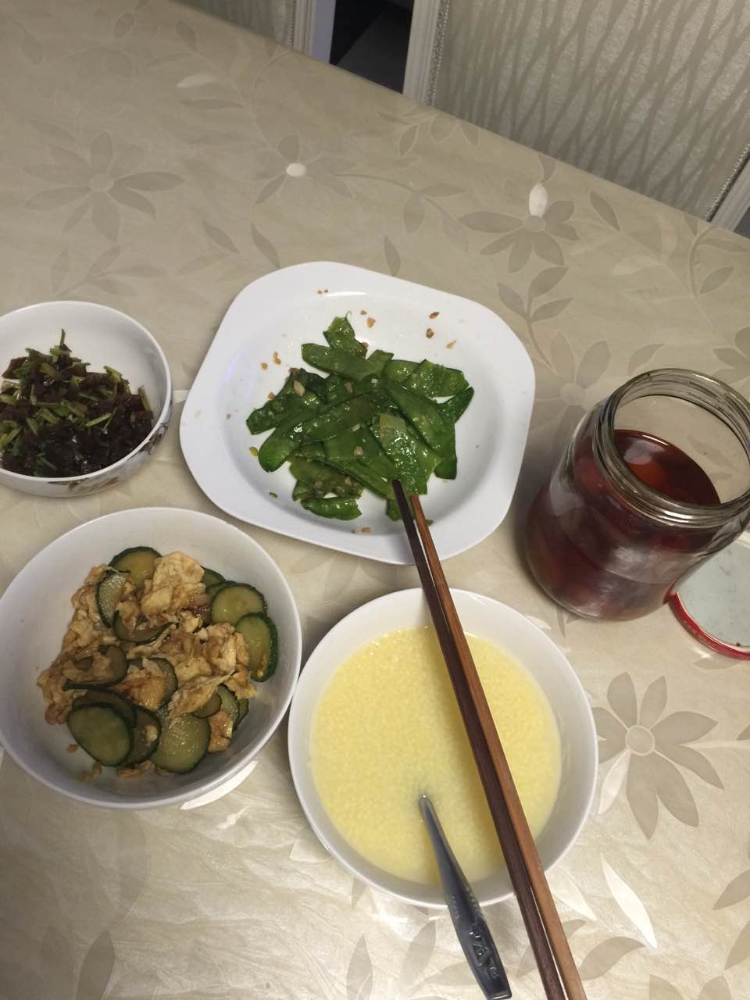
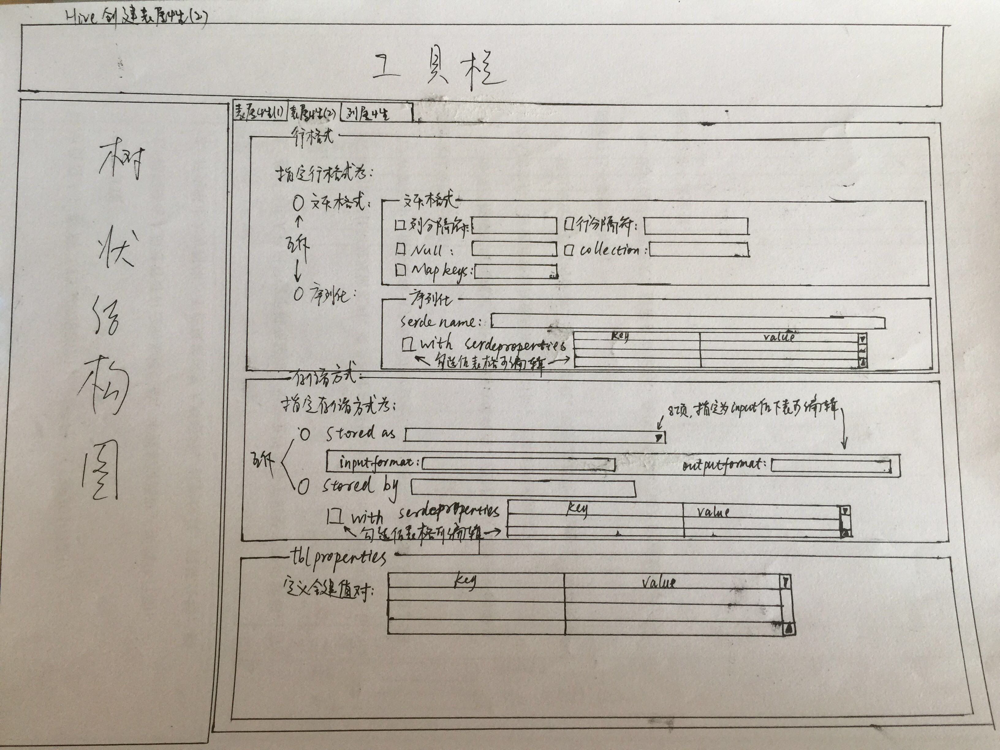
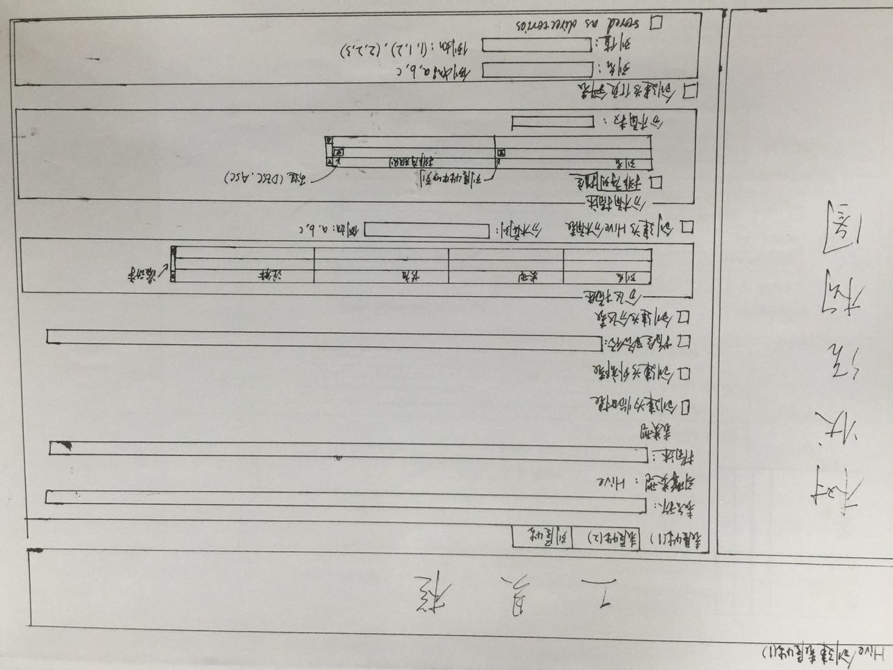
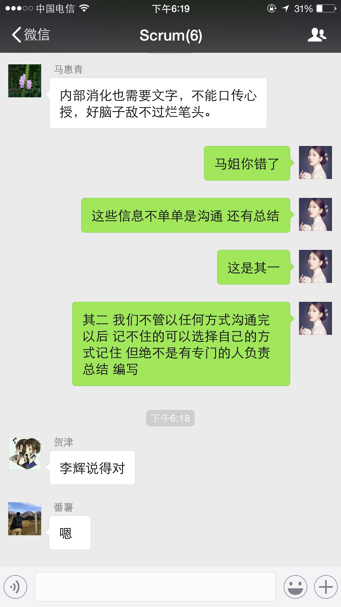

2016-09¶
2016-09-01¶
| 2016-09-01 09:00:32 | 我 | 亲，干啥呢 |
| 2016-09-01 09:00:44 | 你 | 没啥事 |
| 2016-09-01 09:00:47 | 你 | 看看文档 |
| 2016-09-01 09:00:56 | 我 | 什么文档 |
| 2016-09-01 09:01:06 | 你 | release note |
| 2016-09-01 09:01:16 | 我 | 哦，我都忘了 |
| 2016-09-01 09:05:04 | 我 | 你去找找8a的release note看看，我觉得他写的好像味道不对 |
| 2016-09-01 09:05:18 | 你 | 去哪找 |
| 2016-09-01 09:05:20 | 你 | 哪有啊 |
| 2016-09-01 09:06:02 | 我 | RM上有，文档组他们每次会发 |
| 2016-09-01 09:06:14 | 你 | 好 |
| 2016-09-01 09:08:15 | 你 | 昨天那个邮件是老田让我发的 |
| 2016-09-01 09:08:25 | 我 | 哦 |
| 2016-09-01 09:08:29 | 你 | 就是通知各个leader 今天提交周报的 |
| 2016-09-01 09:09:11 | 我 | 我知道 |
| 2016-09-01 09:31:56 | 我 | 你今天是不是还是会很忙呀，团建的事情 |
| 2016-09-01 09:32:32 | 你 | 不知道呢 |
| 2016-09-01 09:32:36 | 你 | 现在没什么事 |
| 2016-09-01 09:33:15 | 我 | 好的 |
| 2016-09-01 09:41:58 | 你 | 老范这个 你去吗 |
| 2016-09-01 09:42:16 | 我 | 你希望我去吗 |
| 2016-09-01 09:42:52 | 你 | 都行，不去也行 |
| 2016-09-01 09:43:13 | 我 | 哦 |
| 2016-09-01 09:43:26 | 我 | 那我还是去吧 |
| 2016-09-01 11:07:18 | 我 | 聊天记录里面应该有 |
| 2016-09-01 11:07:33 | 我 | 我给你找一下吧 |
| 2016-09-01 11:07:43 | 你 | 别找了 |
| 2016-09-01 11:07:48 | 你 | 千万别找了 |
| 2016-09-01 11:07:51 | 你 | 多难找啊 |
| 2016-09-01 11:07:55 | 你 | 这种图片很多 |
| 2016-09-01 11:08:01 | 我 | 不难 |
| 2016-09-01 11:08:03 | 我 | 很快 |
| 2016-09-01 11:09:07 | 我 | 
|
| 2016-09-01 11:09:13 | 你 | 哈哈 |
| 2016-09-01 11:09:16 | 你 | 这么快 |
| 2016-09-01 11:09:17 | 我 | 看，多快 |
| 2016-09-01 11:12:18 | 你 | 够快 |
| 2016-09-01 11:12:46 | 你 | 你发誓不改需求了 |
| 2016-09-01 11:13:04 | 我 | 哈哈 |
| 2016-09-01 11:13:26 | 我 | 你该发到咱们的群里给李杰看看 |
| 2016-09-01 11:13:35 | 你 | 你发把 |
| 2016-09-01 11:13:45 | 我 | 你发吧 |
| 2016-09-01 11:14:27 | 你 | 你发吧 |
| 2016-09-01 11:14:40 | 我 | 为啥呀 |
| 2016-09-01 11:16:56 | 你 | 你在干嘛？？？？ |
| 2016-09-01 11:17:00 | 你 | 跟孩子似的 |
| 2016-09-01 11:17:10 | 我 | 哈哈 |
| 2016-09-01 11:17:27 | 我 | 看工时呢，我们组8月才123% |
| 2016-09-01 11:17:32 | 我 | 都是胖子闹的 |
| 2016-09-01 11:17:45 | 你 | 哈哈 |
| 2016-09-01 11:23:36 | 你 | 你说我在OA上写部门团建事宜是不是不太合适啊 |
| 2016-09-01 11:23:56 | 我 | 肯定不行呀 |
| 2016-09-01 11:24:10 | 你 | 住酒店的话孩子是不是不需要带户口本啊 |
| 2016-09-01 11:24:31 | 我 | 还是带着吧 |
| 2016-09-01 11:24:41 | 我 | 不怕一万，只怕万一 |
| 2016-09-01 13:55:05 | 我 | 你就这么走啦 |
| 2016-09-01 14:21:45 | 我 | 然后你还不理我[流泪] |
| 2016-09-01 15:12:58 | 你 | 乖，别难过 |
| 2016-09-01 15:13:23 | 我 | 好吧 |
| 2016-09-01 16:02:46 | 我 | 你真忙 |
| 2016-09-01 16:03:38 | 你 | 就是这些破事 |
| 2016-09-01 16:04:10 | 我 | 唉 |
| 2016-09-01 16:14:04 | 你 | 亲 |
| 2016-09-01 16:14:14 | 我 | 嗯 |
| 2016-09-01 16:14:28 | 你 | 我把旭明叫走 没耽误你吧 |
| 2016-09-01 16:14:41 | 我 | 没有 |
| 2016-09-01 16:14:52 | 我 | 当然是以你为主啦 |
| 2016-09-01 16:15:19 | 你 | 好的 |
| 2016-09-01 16:15:32 | 你 | 我看你那么着急找他 怕耽误你事 |
| 2016-09-01 16:15:39 | 你 | 洪越可能打球去了 |
| 2016-09-01 16:15:48 | 我 | 好的 |
| 2016-09-01 16:15:51 | 你 | 他刚才跟老田说话 老田没理他 好尴尬 |
| 2016-09-01 16:15:57 | 你 | 不知道是不是没听到 |
| 2016-09-01 16:16:05 | 我 | 唉 |
| 2016-09-01 16:17:45 | 我 | 我就是找他抽烟 |
| 2016-09-01 16:17:52 | 我 | 没别的事情 |
| 2016-09-01 16:17:56 | 你 | 我知道 |
| 2016-09-01 16:26:52 | 你 | 那个魔术贴弄得我鼻子特别痒 |
| 2016-09-01 16:27:09 | 我 | 啊 |
| 2016-09-01 16:27:18 | 我 | 快别弄了 |
| 2016-09-01 16:27:24 | 我 | 别过敏 |
| 2016-09-01 16:28:32 | 你 | 弄完了 |
| 2016-09-01 16:28:38 | 你 | 就是老想打喷嚏 |
| 2016-09-01 16:28:41 | 我 | 哦 |
| 2016-09-01 16:28:47 | 我 | 自己揉揉 |
| 2016-09-01 16:28:49 | 你 | 哈哈 |
| 2016-09-01 16:29:26 | 我 | 要不我去给你揉揉 |
| 2016-09-01 16:29:54 | 你 | 哈哈 |
| 2016-09-01 16:29:56 | 你 | 不用了 |
| 2016-09-01 16:30:10 | 你 | 我中午走的时候有点急 就没跟你打招呼 |
| 2016-09-01 16:30:40 | 我 | 没事，我知道。我就是逗你 |
| 2016-09-01 16:31:12 | 你 | 哈哈 |
| 2016-09-01 16:32:18 | 你 | 这个活动快点结束把 |
| 2016-09-01 16:32:27 | 你 | 太熬人了 |
| 2016-09-01 16:32:52 | 你 | 主要这些琐事搞得我没空干自己的事 |
| 2016-09-01 16:33:02 | 我 | 嗯 |
| 2016-09-01 16:51:47 | 你 | 亲 我得写UP的需求的软需 |
| 2016-09-01 16:51:52 | 你 | 没空跟你聊天了 |
| 2016-09-01 16:52:10 | 我 | 写吧[撇嘴] |
| 2016-09-01 16:52:22 | 我 | 别累着 |
| 2016-09-01 16:52:25 | 你 | 没事 |
| 2016-09-01 16:52:35 | 你 | 你别把我忘了 |
| 2016-09-01 16:53:03 | 我 | 怎么可能呢 |
| 2016-09-01 16:53:17 | 我 | 我永远都不会把你忘了 |
| 2016-09-01 16:53:25 | 你 | 真的吗 |
| 2016-09-01 16:53:40 | 我 | 真的 |
| 2016-09-01 18:21:53 | 我 | 你刚才和田说什么呢 |
| 2016-09-01 18:22:05 | 你 | 你过来我跟你说呗 |
| 2016-09-01 18:22:12 | 你 | 就是写企业管理器的需求的问题 |
| 2016-09-01 18:22:44 | 我 | 好的 |
| 2016-09-01 18:40:07 | 我 | 我其实想知道的是田和你说的是什么 |
| 2016-09-01 18:40:21 | 我 | 比如他对这个问题的看法 |
| 2016-09-01 18:40:22 | 你 | 他没说什么 |
| 2016-09-01 18:40:50 | 我 | 我更感兴趣的是他现在有什么水平 |
| 2016-09-01 18:40:51 | 你 | 他听了这个问题就问我的方案是什么 我说我没想好 |
| 2016-09-01 18:40:54 | 你 | 我知道 |
| 2016-09-01 18:40:58 | 你 | 你听我给你说 |
| 2016-09-01 18:41:01 | 我 | 好的 |
| 2016-09-01 18:41:24 | 你 | 然后他说 你现在提了一个问题给我 但这个问题我并不care |
| 2016-09-01 18:41:44 | 你 | 然后我说我一直想找一个方法 能够解决这个问题 |
| 2016-09-01 18:41:56 | 你 | 然后他说 这个可以探讨 |
| 2016-09-01 18:42:02 | 你 | 跟洪越 |
| 2016-09-01 18:42:12 | 你 | 然后他说你觉得什么方式比较好 |
| 2016-09-01 18:42:24 | 你 | 我说这个一句话就能说清楚 把乔倩叫过来 |
| 2016-09-01 18:42:32 | 你 | 他说那乔倩离职了呢 |
| 2016-09-01 18:42:38 | 你 | 或者你离职了呢 |
| 2016-09-01 18:42:50 | 你 | 我觉得他说的也对 表示赞同 |
| 2016-09-01 18:43:12 | 你 | 他说文档的价值除了写明白 沥青思路 就是要有传承 |
| 2016-09-01 18:43:27 | 你 | 然后举咱们Server文档不全的例子 |
| 2016-09-01 18:43:39 | 你 | 后来说他以前看文档看的很细 |
| 2016-09-01 18:43:42 | 我 | 嗯 |
| 2016-09-01 18:43:49 | 你 | 日本外包的需求都是Excel做的 |
| 2016-09-01 18:43:53 | 你 | 等等细节 |
| 2016-09-01 18:44:13 | 你 | 后来说监控工具现在bug这么多跟需求当时不明确有关 |
| 2016-09-01 18:44:16 | 你 | 我表示怀疑 |
| 2016-09-01 18:44:30 | 你 | 然后他说 跟测试的case写的不够细也有关 |
| 2016-09-01 18:44:44 | 你 | 然后说等最后复盘的时候看看究竟是怎么回事 |
| 2016-09-01 18:44:50 | 你 | 就没了 |
| 2016-09-01 18:45:26 | 我 | 好的 |
| 2016-09-01 18:45:27 | 你 | 整个对话过程 没怎么表现水平 非要说水平 可能就是对文档的重视程度 |
| 2016-09-01 18:45:33 | 我 | 不是 |
| 2016-09-01 18:45:34 | 你 | 其实他也没那么重视 |
| 2016-09-01 18:45:50 | 我 | 有些东西你没看出来 |
| 2016-09-01 18:45:51 | 你 | 以前经常说需求写的晦涩难懂 |
| 2016-09-01 18:45:56 | 你 | 比如 |
| 2016-09-01 18:46:37 | 你 | 后来还说 企业管理器要是跟Server一样卖大钱 我肯定不觉得现在做的事没意义 |
| 2016-09-01 18:46:56 | 你 | 我是不会在乎这个的 |
| 2016-09-01 18:47:11 | 你 | 做事 既然做了 就要做好把 |
| 2016-09-01 18:47:41 | 你 | 本来我是想叫你说这事的 后来我看他一直很闲 你又很忙 心想问问他吧 就当交流一下 |
| 2016-09-01 18:48:19 | 我 | 好的 |
| 2016-09-01 18:48:38 | 我 | 等我一下，我和说说我关心的 |
| 2016-09-01 18:56:46 | 我 | 亲，你今天几点走 |
| 2016-09-01 18:56:58 | 你 | 不知道 |
| 2016-09-01 18:57:03 | 你 | 我正在写周报 |
| 2016-09-01 18:57:42 | 我 | 好的，你收一下内网邮件，看看能收到我发的吗 |
| 2016-09-01 19:13:01 | 我 | 你有空吗，我和说说呀 |
| 2016-09-01 19:13:34 | 你 | 好 |
| 2016-09-01 19:13:36 | 你 | 说吧 |
| 2016-09-01 19:13:38 | 你 | 有空 |
| 2016-09-01 19:14:35 | 我 | 首先你说的这些其实我不关心 |
| 2016-09-01 19:14:53 | 我 | 我关心的是田的更深层次的东西 |
| 2016-09-01 19:15:17 | 我 | 从他对你说的话， 我认为他自己本身其实也没有什么想法 |
| 2016-09-01 19:15:32 | 你 | 没有 这个我确定 |
| 2016-09-01 19:15:49 | 我 | 现在他就一招：你们不能只提问题，要给解决方案 |
| 2016-09-01 19:16:50 | 我 | 我现在就是要掌握他的这些习惯 |
| 2016-09-01 19:17:10 | 我 | 那么等他和我说的时候我就可以提前准备好 |
| 2016-09-01 19:18:38 | 你 | 恩 |
| 2016-09-01 19:18:49 | 我 | 甚至可以给他下套 |
| 2016-09-01 19:20:08 | 你 | 恩 |
| 2016-09-01 19:22:03 | 你 | 走了 |
| 2016-09-01 19:22:19 | 我 | 好吧 |
2016-09-02¶
| 2016-09-02 08:19:46 | 你 | 亲 累坏了把 |
| 2016-09-02 08:20:07 | 我 | 嗯 |
| 2016-09-02 08:20:28 | 你 | 那歇着吧 |
| 2016-09-02 08:20:40 | 我 | 路上呢 |
| 2016-09-02 08:20:52 | 我 | 你昨天几点睡的 |
| 2016-09-02 08:21:01 | 你 | 好 早上来你不在 我好失落 |
| 2016-09-02 08:21:10 | 你 | 12点半吧大概 |
| 2016-09-02 08:21:14 | 你 | 这一周都是 |
| 2016-09-02 08:21:18 | 你 | 我都习惯了好像 |
| 2016-09-02 08:21:32 | 我 | 比我晚多了 |
| 2016-09-02 08:21:54 | 我 | 我应该是12点之前睡的 |
| 2016-09-02 08:22:21 | 你 | 是吗 |
| 2016-09-02 08:22:39 | 你 | 没事啦 我昨天缝衣服缝了一个多小时 |
| 2016-09-02 08:23:09 | 我 | 手疼不 |
| 2016-09-02 08:23:16 | 你 | 疼 |
| 2016-09-02 08:23:25 | 你 | 食指疼 不过现在已经好了 |
| 2016-09-02 08:23:27 | 你 | 没事 |
| 2016-09-02 08:23:35 | 你 | 你们昨天有进展吗 |
| 2016-09-02 08:23:46 | 我 | 其实没有 |
| 2016-09-02 08:24:08 | 我 | 今天封版，带问题送 |
| 2016-09-02 08:25:15 | 你 | 好吧 |
| 2016-09-02 08:25:16 | 你 | 唉 |
| 2016-09-02 08:26:13 | 我 | 你今天得很忙吧 |
| 2016-09-02 08:26:40 | 我 | 还得写周报 |
| 2016-09-02 08:27:53 | 你 | 是 |
| 2016-09-02 08:28:14 | 你 | 我能想到的这些事就不少 |
| 2016-09-02 08:28:24 | 我 | 嗯 |
| 2016-09-02 08:28:31 | 你 | 我最担心的就是她们衣服缝的不过关 |
| 2016-09-02 08:28:53 | 我 | 今天你得检查一下 |
| 2016-09-02 08:29:04 | 你 | 张明静昨天在筹备群里发的，缝的太差了 |
| 2016-09-02 08:29:20 | 你 | 必须得检查 |
| 2016-09-02 08:29:51 | 你 | 唉，这些人做事都没有让人省心的，都得我推着走 |
| 2016-09-02 08:30:00 | 我 | 哈哈 |
| 2016-09-02 08:30:21 | 我 | 你这回知道我的感受了吧 |
| 2016-09-02 08:30:44 | 你 | 昨天张明静说她9点才回家，还得缝两件， |
| 2016-09-02 08:30:57 | 你 | 然后缝成那样了 |
| 2016-09-02 08:31:39 | 你 | 杨慧说四件10分钟搞定，你说我能信得过他们吗？ |
| 2016-09-02 08:32:12 | 你 | 估计你们这些当领导的，每天都被他们折磨着 |
| 2016-09-02 08:32:41 | 我 | 对呀 |
| 2016-09-02 10:16:47 | 我 | 亲，你忙啥呢 |
| 2016-09-02 10:16:59 | 你 | 他们缝的每一个能用的 |
| 2016-09-02 10:17:06 | 我 | 唉 |
| 2016-09-02 10:17:08 | 你 | 你说是我要求太高吗 |
| 2016-09-02 10:17:25 | 我 | 不是，是他们都不负责任 |
| 2016-09-02 10:17:33 | 我 | 就像我们组的人一样 |
| 2016-09-02 10:17:42 | 我 | 觉得反正有人管 |
| 2016-09-02 10:18:09 | 你 | 我昨天那么跟组长们说的 |
| 2016-09-02 10:18:14 | 我 | 是你手机没电了吧 |
| 2016-09-02 10:18:23 | 你 | 你猜人家王东江跟下边说 缝缝就行 |
| 2016-09-02 10:18:28 | 你 | 我说话根本不听 |
| 2016-09-02 10:18:37 | 我 | 正常呀 |
| 2016-09-02 10:18:40 | 你 | 现在缝回来的都不能用 |
| 2016-09-02 10:18:44 | 你 | 气死我了 |
| 2016-09-02 10:19:08 | 我 | 我安排他们干事情都没有能让我满意的 |
| 2016-09-02 10:19:26 | 你 | 我不生气了 |
| 2016-09-02 10:19:34 | 你 | 有什么好生的 |
| 2016-09-02 10:19:44 | 你 | 反正我不满意 就得重新弄 |
| 2016-09-02 10:19:48 | 我 | 哈哈 |
| 2016-09-02 10:19:49 | 你 | 我自己想办法把 |
| 2016-09-02 10:20:10 | 我 | 其实你应该想的是怎么做才能达到你的目标 |
| 2016-09-02 10:22:57 | 你 | 我开始纠结了 |
| 2016-09-02 10:22:58 | 你 | 气死我了 |
| 2016-09-02 10:23:07 | 我 | 纠结什么 |
| 2016-09-02 10:27:30 | 我 | ？ |
| 2016-09-02 10:27:36 | 你 | 气死我了 |
| 2016-09-02 10:27:43 | 你 | 你说他们怎么就那么笨呢 |
| 2016-09-02 10:27:47 | 我 | 别生气啦 |
| 2016-09-02 10:27:52 | 我 | 他们都这么笨 |
| 2016-09-02 10:28:12 | 我 | 我一直说你很聪明，你还不信 |
| 2016-09-02 10:28:21 | 我 | 现在知道了吧 |
| 2016-09-02 10:49:23 | 你 | 
|
| 2016-09-02 10:50:11 | 我 | 呵呵 |
| 2016-09-02 10:50:23 | 你 | 我都想奔过去撕了他 |
| 2016-09-02 10:50:25 | 你 | 蠢货 |
| 2016-09-02 10:51:14 | 我 | 是，实在是蠢 |
| 2016-09-02 10:52:14 | 你 | 弄个纸 用胶带沾上 到时候大家玩什么 |
| 2016-09-02 10:52:29 | 你 | 你看上次杨柳青活动的时候 |
| 2016-09-02 10:52:40 | 我 | 直接糊他嘴上得了 |
| 2016-09-02 10:52:47 | 你 | 大家对撕名牌的游戏特别期待 但是由于道具不行 特别扫兴 |
| 2016-09-02 10:52:50 | 你 | 你记得吗 |
| 2016-09-02 10:52:53 | 我 | 记得 |
| 2016-09-02 10:53:07 | 你 | 这次领导自己提议的玩 我能不整好吗 |
| 2016-09-02 10:53:09 | 你 | 气死我了 |
| 2016-09-02 10:53:20 | 我 | 唉 |
| 2016-09-02 10:53:30 | 你 | 这次失误就是没买到宽的魔术贴 |
| 2016-09-02 10:53:40 | 我 | 你现在是在体会当leader的痛苦了 |
| 2016-09-02 10:53:42 | 你 | 就让大家自己缝缝 你看弄得墨迹的 |
| 2016-09-02 10:54:09 | 你 | 一群蠢货 |
| 2016-09-02 10:54:11 | 你 | 气死我了 |
| 2016-09-02 10:54:50 | 我 | 就是，看把我们宝气成啥样啦 |
| 2016-09-02 10:55:02 | 你 | enen |
| 2016-09-02 10:55:08 | 你 | 我不生气了 |
| 2016-09-02 10:55:25 | 我 | 好的 |
| 2016-09-02 14:22:25 | 你 | 亲 我回来了 |
| 2016-09-02 14:22:40 | 我 | 我看见了 |
| 2016-09-02 14:22:51 | 我 | 累吗 |
| 2016-09-02 14:23:22 | 你 | 没事 就是有点困 |
| 2016-09-02 14:23:35 | 我 | 你先睡会吧 |
| 2016-09-02 14:23:49 | 你 | 不睡了 先把周报写完 |
| 2016-09-02 14:24:39 | 我 | 好的 |
| 2016-09-02 14:24:41 | 你 | 我想问你个文通 |
| 2016-09-02 14:24:43 | 你 | 问题 |
| 2016-09-02 14:24:48 | 我 | 嗯 |
| 2016-09-02 14:25:04 | 你 | 你说我现在这样负责这些事 是不是对我的发展很不利 |
| 2016-09-02 14:25:32 | 我 | 谈不上不利，但也不是有利 |
| 2016-09-02 14:25:40 | 我 | 因为你的目标不是这些东西 |
| 2016-09-02 14:26:05 | 我 | 这些东西可以锻炼你的组织能力 |
| 2016-09-02 14:26:12 | 你 | 我也挺纠结的 |
| 2016-09-02 14:27:25 | 我 | 别纠结了，先把这次干完了再说 |
| 2016-09-02 14:28:09 | 你 | 好 |
| 2016-09-02 14:29:53 | 你 | 嗯嗯 今天跟慧姐 翠姐去扎衣服 |
| 2016-09-02 14:29:59 | 你 | 慧姐说了两句 |
| 2016-09-02 14:30:07 | 我 | 说什么了 |
| 2016-09-02 14:30:26 | 你 | 就说看我自己的职业发展方向 |
| 2016-09-02 14:30:39 | 你 | 别竟做行政的活 |
| 2016-09-02 14:30:42 | 你 | 就说了一句 |
| 2016-09-02 14:30:52 | 我 | 其实大家都看出来了 |
| 2016-09-02 14:31:20 | 你 | 唉 |
| 2016-09-02 14:31:45 | 你 | 真没劲 |
| 2016-09-02 14:31:49 | 我 | 没事的，这只是第一次 |
| 2016-09-02 14:32:14 | 你 | 我还没吃饭呢 |
| 2016-09-02 14:32:17 | 你 | 一会吃饭去 |
| 2016-09-02 14:32:33 | 我 | 去吧 |
| 2016-09-02 14:32:40 | 我 | 别担心啦 |
| 2016-09-02 14:32:46 | 我 | 有我呢 |
| 2016-09-02 14:32:55 | 你 | 恩 |
| 2016-09-02 14:33:16 | 我 | 只要你不愿意，我就保证你不去做行政 |
| 2016-09-02 15:47:22 | 我 | 周报写了多少了 |
| 2016-09-02 15:47:38 | 你 | 写邮件呢 马上就完 |
| 2016-09-02 15:47:45 | 我 | 好的 |
| 2016-09-02 15:59:50 | 你 | 发出去了 |
| 2016-09-02 15:59:58 | 你 | 我先去吃个饭 顺便给严丹取钱 |
| 2016-09-02 16:00:01 | 我 | 好的 |
| 2016-09-02 16:00:09 | 我 | 忙死了 |
| 2016-09-02 16:03:56 | 你 | 是呗， |
| 2016-09-02 16:04:07 | 你 | 经历一次，下次有经验了 |
| 2016-09-02 16:04:25 | 你 | 这次人数变动带来很多麻烦 |
| 2016-09-02 16:04:26 | 我 | 嗯 |
| 2016-09-02 16:04:53 | 你 | 下班前我还得发一封周知邮件 |
| 2016-09-02 16:05:09 | 我 | 今天尽量早点回去，明天你还要早起呢 |
| 2016-09-02 16:05:16 | 你 | 没事 |
| 2016-09-02 16:05:24 | 你 | 早回去我也睡不着 |
| 2016-09-02 16:05:28 | 我 | 担心累着你 |
| 2016-09-02 16:05:35 | 你 | 没事 |
| 2016-09-02 16:06:19 | 你 | 这些事不累心 |
| 2016-09-02 16:06:29 | 我 | 好的 |
| 2016-09-02 16:44:43 | 我 | 亲，看着你好心疼 |
| 2016-09-02 16:44:48 | 你 | 没事 |
| 2016-09-02 16:45:07 | 我 | 唉 |
| 2016-09-02 16:45:41 | 我 | 估计你回来得歇好几天 |
| 2016-09-02 17:25:17 | 你 | 我发现这个张明静太不听话 |
| 2016-09-02 17:25:39 | 我 | 怎么了 |
| 2016-09-02 17:32:22 | 你 | 我没发错群 |
| 2016-09-02 17:32:27 | 你 | 故意发你们组的 |
| 2016-09-02 17:33:17 | 我 | 我知道，没事的 |
| 2016-09-02 17:37:10 | 你 | 还有别的什么事吗 |
| 2016-09-02 17:37:17 | 你 | 需要在群里说的 |
| 2016-09-02 17:37:32 | 我 | 没有了吧 |
| 2016-09-02 18:33:40 | 我 | 亲，你几点走呀？ |
| 2016-09-02 18:37:42 | 你 | 不知道呢亲 |
| 2016-09-02 18:37:59 | 我 | 唉 |
| 2016-09-02 18:38:12 | 我 | 你每天都要被加班 |
| 2016-09-02 18:38:40 | 你 | 有的时候也是因为有事 |
| 2016-09-02 18:48:48 | 你 | 你还不回吗 |
| 2016-09-02 18:49:11 | 我 | 准备走啦 |
| 2016-09-02 18:49:24 | 你 | 咱们这个音频调太高了 |
| 2016-09-02 18:49:39 | 我 | 换一个吧 |
| 2016-09-02 18:49:50 | 我 | 找找有没有live的 |
2016-09-03¶
| 2016-09-03 21:55:31 | 我 | 你的扩音器还在我这呢 |
| 2016-09-03 21:55:49 | 我 | 明天我给你带上吧 |
| 2016-09-03 22:14:19 | 你 | 好 |
| 2016-09-03 22:14:38 | 我 | 你洗完了吗 |
| 2016-09-03 22:14:51 | 你 | 刚洗完了 |
| 2016-09-03 22:15:03 | 我 | 好的，累坏了吧 |
| 2016-09-03 22:15:18 | 我 | 赶紧睡觉吧 |
| 2016-09-03 22:15:24 | 你 | 恩，还想玩 |
| 2016-09-03 22:15:36 | 我 | 玩什么 |
| 2016-09-03 22:16:39 | 你 | 没什么玩的， |
| 2016-09-03 22:16:52 | 你 | 本来相待会的，结果打球了 |
| 2016-09-03 22:17:18 | 我 | 是 |
| 2016-09-03 22:17:27 | 我 | 不过人也多 |
| 2016-09-03 22:17:47 | 你 | 是，而且这么多事，一直有人叫我 |
| 2016-09-03 22:18:13 | 我 | 对呀，你是大总管 |
| 2016-09-03 22:18:51 | 你 | 你觉得怎么样 |
| 2016-09-03 22:18:56 | 我 | 今天孙世霖出事是不是把你吓坏了 |
| 2016-09-03 22:19:05 | 你 | 不知道撕名牌会这么激烈 |
| 2016-09-03 22:19:15 | 我 | 我看你脸色一直不好 |
| 2016-09-03 22:20:07 | 你 | 恩，感觉很乱 |
| 2016-09-03 22:20:17 | 我 | 其实上次也是这么激烈 |
| 2016-09-03 22:20:39 | 我 | 这次只是时间比上次长 |
| 2016-09-03 22:20:45 | 你 | 没有想象那么好玩 |
| 2016-09-03 22:20:55 | 你 | 下次再也不阻止这个游戏了 |
| 2016-09-03 22:20:59 | 你 | 组织 |
| 2016-09-03 22:21:17 | 我 | 嗯 |
| 2016-09-03 22:22:08 | 我 | 你早点睡吧，我去洗澡 |
| 2016-09-03 22:22:18 | 你 | 在这种户外做游戏，太不容易cover了 |
| 2016-09-03 22:22:23 | 你 | 轮到你了啊 |
| 2016-09-03 22:22:46 | 我 | 是，你要是不睡，我回来陪你 |
| 2016-09-03 22:23:11 | 你 | 你先去洗吧， |
| 2016-09-03 22:23:35 | 你 | 我们这屋太尴尬了，我跟严丹一句话没有 |
| 2016-09-03 22:23:45 | 你 | 杨丽颖在洗澡 |
| 2016-09-03 22:23:54 | 我 | 嗯 |
| 2016-09-03 22:35:59 | 我 | 回来了 |
| 2016-09-03 22:42:56 | 你 | 恩 |
| 2016-09-03 22:43:11 | 我 | 困了吗 |
| 2016-09-03 22:45:05 | 你 | 还好 |
| 2016-09-03 22:45:11 | 你 | 今天都没怎么陪你 |
| 2016-09-03 22:47:15 | 我 | 没有呀，我一直关注你呀 |
| 2016-09-03 22:47:56 | 你 | 我今天说话太多了，我现在根本不想说话 |
| 2016-09-03 22:48:00 | 我 | 只是很心疼你 |
| 2016-09-03 22:48:14 | 你 | 就是不想张嘴说话 |
| 2016-09-03 22:48:19 | 我 | 是，怕你明天嗓子不舒服 |
| 2016-09-03 22:48:41 | 我 | 今天你也没喝都少水 |
| 2016-09-03 22:49:31 | 我 | 不过这些对你来说都是宝贵的经验 |
| 2016-09-03 22:49:40 | 你 | 喝了，我就怕明天说不出话来，要是今晚能回复就好了 |
| 2016-09-03 22:50:55 | 我 | 嗓子疼吗 |
| 2016-09-03 22:51:50 | 你 | 现在不疼，就是不想说话 |
| 2016-09-03 22:52:26 | 我 | 那就别说了 |
| 2016-09-03 22:52:53 | 你 | 不说了，我们屋没人说话 |
| 2016-09-03 22:53:24 | 我 | 哈哈，我们屋还在说呢 |
| 2016-09-03 22:54:04 | 你 | 说啥呢 |
| 2016-09-03 22:54:13 | 你 | 这次贺津真的帮了我不少 |
| 2016-09-03 22:54:31 | 我 | 说刚才打羽毛球 |
| 2016-09-03 22:55:44 | 我 | 看他们俩摔跤，我都不敢动了 |
| 2016-09-03 22:56:37 | 我 | 现在说撕名牌呢 |
| 2016-09-03 22:56:46 | 我 | 各种笑话 |
| 2016-09-03 22:57:17 | 你 | 哈哈 |
| 2016-09-03 22:57:29 | 你 | 说吧，我们屋没人说话 |
| 2016-09-03 22:58:33 | 我 | 华仔说崔新淼最后直接投降了 |
| 2016-09-03 22:59:23 | 我 | 直接说 你撕我吧 |
| 2016-09-03 23:00:35 | 你 | 哈哈 |
| 2016-09-03 23:01:16 | 我 | 现在说国华很惨 |
| 2016-09-03 23:01:57 | 你 | 真的很惨 |
| 2016-09-03 23:02:09 | 你 | 那段视频把整个过程都记录了 |
| 2016-09-03 23:03:25 | 你 | 唉，我看咱们没事弄弄那个翻手机的游戏挺好的 |
| 2016-09-03 23:03:55 | 我 | 是，这种对抗的游戏很不好控制 |
| 2016-09-03 23:04:19 | 我 | 还是猜字比较好玩 |
| 2016-09-03 23:04:30 | 你 | 等会给你发杨总跟我的聊天记录 |
| 2016-09-03 23:04:40 | 我 | 好的 |
| 2016-09-03 23:07:08 | 你 | [链接] 李辉和杨伟伟的聊天记录 |
| 2016-09-03 23:07:37 | 你 | 刚才我跟他找照片，后来聊了几句 |
| 2016-09-03 23:08:47 | 你 | 等回公司我再跟你细说我的不足吧 |
| 2016-09-03 23:09:15 | 我 | 好的 |
| 2016-09-03 23:09:34 | 我 | 我也有好多想告诉你的 |
| 2016-09-03 23:09:44 | 你 | 还有，我觉得杨总可喜欢跟我呆着了 |
| 2016-09-03 23:09:51 | 你 | 你有感觉吗 |
| 2016-09-03 23:09:54 | 我 | 有 |
| 2016-09-03 23:09:58 | 你 | 虽然我们并不熟 |
| 2016-09-03 23:10:07 | 你 | 你客观的说说 |
| 2016-09-03 23:10:26 | 你 | 我也不知道是我感受出了问题还是别的 |
| 2016-09-03 23:11:03 | 我 | 首先他喜欢和女的在一起 |
| 2016-09-03 23:11:22 | 你 | 嗯嗯，那倒是 |
| 2016-09-03 23:11:25 | 我 | 不管是你还是严丹 |
| 2016-09-03 23:11:27 | 你 | 我也觉得是 |
| 2016-09-03 23:11:31 | 你 | 是 |
| 2016-09-03 23:12:09 | 我 | 你性格比较外向，所以他会和你交流比较多 |
| 2016-09-03 23:12:58 | 你 | 恩 |
| 2016-09-03 23:13:04 | 我 | 你看他和杨丽莹交流，经常就半途而废 |
| 2016-09-03 23:13:13 | 你 | 我是不是累过劲了 |
| 2016-09-03 23:13:37 | 你 | 主要我的哏捧的好 |
| 2016-09-03 23:13:39 | 你 | 哈哈 |
| 2016-09-03 23:13:44 | 我 | 还有就是刘杰，几乎没有反应 |
| 2016-09-03 23:13:52 | 我 | 是 |
| 2016-09-03 23:14:27 | 你 | 唉 |
| 2016-09-03 23:14:31 | 我 | 你是一个自来熟 |
| 2016-09-03 23:14:37 | 你 | 是 |
| 2016-09-03 23:14:44 | 你 | 跟谁都自来熟 |
| 2016-09-03 23:14:54 | 我 | 所以很多人都喜欢你 |
| 2016-09-03 23:14:55 | 你 | 最不怕跟生人说话 |
| 2016-09-03 23:15:06 | 你 | 是，贺津对我也不错 |
| 2016-09-03 23:15:21 | 你 | 但是我知道他们对我和你对我不一样 |
| 2016-09-03 23:15:23 | 我 | 领导的性格有比较外向 |
| 2016-09-03 23:16:08 | 我 | 当然不一样啦，我怎么能和他们一样呢[偷笑] |
| 2016-09-03 23:17:23 | 你 | 哈哈 |
| 2016-09-03 23:17:49 | 你 | 他们只是在力所能及的时候陪我玩，其实也是在娱乐自己 |
| 2016-09-03 23:18:21 | 你 | 你不一样，你更在意我的感受 |
| 2016-09-03 23:18:53 | 我 | 嗯 |
| 2016-09-03 23:19:27 | 你 | 我有点困了，睡觉啦先 |
| 2016-09-03 23:19:34 | 你 | 你们聊吧 |
| 2016-09-03 23:19:36 | 我 | 好的 |
| 2016-09-03 23:19:43 | 我 | 晚安 |
| 2016-09-03 23:20:15 | 你 | 晚安 |
2016-09-04¶

{kind=link}
{kind=link}
2016-09-05¶
{kind=link}
2016-09-06¶
| 2016-09-06 08:58:49 | 你 | 还没来？ |
| 2016-09-06 08:58:50 | 你 | 怎么了 |
| 2016-09-06 08:59:49 | 我 | 哈哈，你终于找我啦 |
| 2016-09-06 08:59:59 | 我 | 今天早上闹肚子 |
| 2016-09-06 09:00:32 | 我 | 你不给我发消息我都不敢找你 |
| 2016-09-06 09:00:55 | 你 | 我发现你肠胃真的很不好 |
| 2016-09-06 09:01:17 | 我 | 是，老毛病 |
| 2016-09-06 09:01:18 | 你 | 早上来了在写软需 |
| 2016-09-06 09:01:22 | 你 | 看你一直不来 |
| 2016-09-06 09:01:28 | 你 | 你出门了吗 |
| 2016-09-06 09:01:41 | 我 | 马上下车 |
| 2016-09-06 09:01:48 | 你 | 哦 |
| 2016-09-06 09:01:51 | 你 | 好 |
| 2016-09-06 09:38:59 | 你 | 从他来就没有不特殊的时候 |
| 2016-09-06 09:39:15 | 我 | 😄 |
| 2016-09-06 10:05:13 | 我 | 忙死了 |
| 2016-09-06 10:05:19 | 你 | 恩 忙吧 |
| 2016-09-06 10:09:04 | 我 | 你的需求写写的怎么样了 |
| 2016-09-06 10:09:35 | 你 | 不怎么样 |
| 2016-09-06 10:09:37 | 你 | 太多了 |
| 2016-09-06 10:09:50 | 我 | 哦 |
| 2016-09-06 10:11:34 | 我 | 唉，你还是抓紧写吧 |
| 2016-09-06 10:11:42 | 你 | 是 |
| 2016-09-06 10:11:45 | 你 | 抓紧写 |
| 2016-09-06 10:11:50 | 我 | 别回来洪越再怪你 |
| 2016-09-06 10:11:55 | 你 | 马不停蹄 |
| 2016-09-06 10:12:00 | 你 | 他不会怪我的 |
| 2016-09-06 10:12:01 | 我 | 哈哈 |
| 2016-09-06 10:12:06 | 你 | 他自己知道这个多 |
| 2016-09-06 10:12:11 | 你 | 昨天跟我说帮我写 |
| 2016-09-06 10:12:13 | 我 | 好的 |
| 2016-09-06 10:12:16 | 你 | 给了我一周的时间 |
| 2016-09-06 10:12:28 | 我 | 好 |
| 2016-09-06 10:32:00 | 我 | 你是不是把你的照片都删了 |
| 2016-09-06 10:32:18 | 你 | 没有 |
| 2016-09-06 10:32:48 | 我 | 我就想看你的照片 |
| 2016-09-06 10:33:25 | 你 | 没删 有几张丑的删了 |
| 2016-09-06 10:33:59 | 我 | 嗯 |
| 2016-09-06 11:16:02 | 我 | 没完没了了 |
| 2016-09-06 11:16:41 | 你 | 你干啥呢 |
| 2016-09-06 11:16:54 | 我 | 开会 |
| 2016-09-06 11:17:40 | 你 | 什么会啊 |
| 2016-09-06 11:18:06 | 我 | IBM的会 |
| 2016-09-06 11:19:09 | 你 | 哦 |
| 2016-09-06 11:19:37 | 我 | 实在是无聊 |
| 2016-09-06 11:19:57 | 你 | 唉 |
| 2016-09-06 11:20:41 | 你 | 你们组的人实在是无趣 |
| 2016-09-06 11:20:48 | 你 | 准时因为都是干开发的 |
| 2016-09-06 11:20:59 | 我 | 对呀 |
| 2016-09-06 11:21:11 | 我 | 大部分人都这样 |
| 2016-09-06 11:21:15 | 你 | 你看昨天一起吃饭的时候 多无聊 |
| 2016-09-06 11:33:16 | 我 | 所以我说还是咱俩一吃好 |
| 2016-09-06 11:33:24 | 你 | 是 |
| 2016-09-06 11:33:26 | 你 | 真没意思 |
| 2016-09-06 11:33:50 | 我 | 他们和你不是一种人 |
| 2016-09-06 11:34:03 | 我 | 所以你也做不了技术 |
| 2016-09-06 11:35:35 | 你 | 是 |
| 2016-09-06 12:13:17 | 我 | 你吃完了吗 |
| 2016-09-06 12:13:25 | 你 | 吃完了 |
| 2016-09-06 12:13:26 | 我 | 我们还在开会 |
| 2016-09-06 12:13:31 | 你 | 还在开会？？？ |
| 2016-09-06 12:13:33 | 你 | 我晕 |
| 2016-09-06 12:13:46 | 我 | 我今天不舒服，都不想吃了 |
| 2016-09-06 12:14:09 | 你 | 不饿吗 |
| 2016-09-06 12:14:14 | 你 | 你们会一起去吃饭把 |
| 2016-09-06 12:14:19 | 你 | 还没好利索？ |
| 2016-09-06 12:14:20 | 我 | 本来都快完了，结果领导来了就没完了 |
| 2016-09-06 12:14:36 | 你 | 唉 领导是11：30去的吗 |
| 2016-09-06 12:14:42 | 我 | 是 |
| 2016-09-06 12:16:34 | 你 | 看到你转载的李宗盛 |
| 2016-09-06 12:16:42 | 你 | 这也是仅对我可见吗？ |
| 2016-09-06 12:16:55 | 我 | 不是，所有人 |
| 2016-09-06 12:17:01 | 你 | 嗯嗯 |
| 2016-09-06 12:17:12 | 你 | 我欲想赠你千梦，却奈何梦太过柔弱经不起时光侵蚀已然破碎。 我目送沿海的日落，徜徉在醉生梦死的彼岸，游不出回忆却也学不会放手，怎么走？ 如有来世你渡我，可愿？ |
| 2016-09-06 12:17:18 | 你 | 刚才看到的一句话 |
| 2016-09-06 12:17:40 | 我 | 嗯 |
| 2016-09-06 12:24:02 | 我 | 你不睡吗 |
| 2016-09-06 12:24:20 | 你 | 睡 |
| 2016-09-06 13:27:53 | 我 | 你睡好了吗 |
| 2016-09-06 13:27:59 | 你 | 恩 |
| 2016-09-06 13:32:21 | 我 | 你中午给我发的是从哪里看到的 |
| 2016-09-06 13:32:29 | 你 | 帖子上 |
| 2016-09-06 13:37:57 | 我 | 哦 |
| 2016-09-06 13:38:07 | 我 | 不会又是傅红雪吧 |
| 2016-09-06 13:38:18 | 你 | 是啊 |
| 2016-09-06 13:38:58 | 我 | 唉，我为啥总能猜得到呢 |
| 2016-09-06 13:39:11 | 你 | 这个好猜 啊 |
| 2016-09-06 13:39:14 | 你 | 嘿嘿 |
| 2016-09-06 13:41:46 | 我 | 你去打球吗 |
| 2016-09-06 13:41:52 | 你 | 去 |
| 2016-09-06 13:42:00 | 我 | 好的 |
| 2016-09-06 14:16:27 | 我 | 睡着了 |
| 2016-09-06 14:16:33 | 你 | 是 |
| 2016-09-06 14:16:40 | 你 | 大家都知道 都小声说话 |
| 2016-09-06 14:17:32 | 我 | 哦，我打呼噜了吗 |
| 2016-09-06 14:17:59 | 你 | 没有 |
| 2016-09-06 14:18:01 | 你 | 很安静 |
| 2016-09-06 14:18:09 | 我 | 好的 |
| 2016-09-06 14:42:11 | 你 | 讨厌严丹 |
| 2016-09-06 14:42:15 | 你 | 不想跟她说话 |
| 2016-09-06 14:42:16 | 我 | 是 |
| 2016-09-06 14:42:22 | 你 | 也不想跟领导说话 |
| 2016-09-06 14:42:23 | 我 | 我也讨厌她 |
| 2016-09-06 14:42:28 | 你 | 瞅着他俩就来气 |
| 2016-09-06 14:42:30 | 我 | 啊，为啥 |
| 2016-09-06 14:42:35 | 你 | 你怎么讨厌她了 |
| 2016-09-06 14:43:15 | 我 | 她老那么对你，我当然生气啦 |
| 2016-09-06 14:43:31 | 你 | 就是 |
| 2016-09-06 14:43:37 | 你 | 好话也不会好好说 |
| 2016-09-06 14:43:42 | 我 | 你知道我很护犊子的 |
| 2016-09-06 14:43:48 | 你 | 我不帮她 你看谁会理她 |
| 2016-09-06 14:43:50 | 你 | 哼 |
| 2016-09-06 14:43:54 | 我 | 就是 |
| 2016-09-06 14:44:20 | 你 | 早上也是 我跟她说 今天把单子给她 他也不好好搭理我 |
| 2016-09-06 14:44:22 | 你 | 我就不想说话 |
| 2016-09-06 14:44:35 | 你 | 更不想跟她说话 |
| 2016-09-06 14:44:40 | 我 | 是 |
| 2016-09-06 14:45:49 | 我 | 你把照片放同步文件夹吧 |
| 2016-09-06 14:45:58 | 我 | 我就自动同步了 |
| 2016-09-06 14:46:03 | 你 | 好 |
| 2016-09-06 15:43:35 | 你 | 真是被他们气疯了 |
| 2016-09-06 15:43:44 | 你 | 谁都给我气受 |
| 2016-09-06 15:43:51 | 我 | 我知道 |
| 2016-09-06 15:44:02 | 我 | 你就不用管他们能不能做了 |
| 2016-09-06 15:44:11 | 我 | 你也管不了 |
| 2016-09-06 15:44:19 | 我 | 这事我来管吧 |
| 2016-09-06 15:44:23 | 你 | 真晕 |
| 2016-09-06 15:44:32 | 你 | 你别管了 |
| 2016-09-06 15:44:51 | 你 | 我是怕我吭哧吭哧把软需写出来了 评审的时候他们又开始BB |
| 2016-09-06 15:44:58 | 你 | 这个做不了 那个做不了 |
| 2016-09-06 15:45:10 | 我 | 你的需求我肯定要去 |
| 2016-09-06 15:45:23 | 我 | 这个本来就应该是我管的事情 |
| 2016-09-06 15:45:29 | 我 | 你就写吧 |
| 2016-09-06 15:45:35 | 你 | 你去不去的吧 我也不该让他们抓把柄 |
| 2016-09-06 15:46:27 | 我 | 不是让他们抓把柄 |
| 2016-09-06 15:46:43 | 我 | 而是你占理，他们就必须做 |
| 2016-09-06 15:47:19 | 我 | 你和我这么久你应该知道，我是按照占不占理区分的 |
| 2016-09-06 15:47:31 | 你 | 恩 我知道 |
| 2016-09-06 15:47:40 | 你 | 他们都不知道自己该干啥 |
| 2016-09-06 15:47:45 | 我 | 这事你现在占理，所以你就做吧 |
| 2016-09-06 15:47:46 | 你 | 该自己干的 自己不干 |
| 2016-09-06 15:47:53 | 你 | 不该自己干的 指指点点 |
| 2016-09-06 15:48:00 | 我 | 他们现在还没有转变过来 |
| 2016-09-06 15:48:17 | 我 | 所以喜欢对你指指点点的 |
| 2016-09-06 15:48:34 | 我 | 你就不理他们，该干啥就干啥 |
| 2016-09-06 15:48:48 | 你 | 知道了 |
| 2016-09-06 15:48:49 | 我 | 我肯定会支持你的 |
| 2016-09-06 16:31:22 | 我 | 谢谢你 |
| 2016-09-06 16:33:39 | 你 | 谢吧 |
| 2016-09-06 16:34:01 | 我 | 那就使劲谢谢你 |
| 2016-09-06 16:34:16 | 你 | 使劲吧 |
| 2016-09-06 16:34:17 | 你 | 哈哈 |
| 2016-09-06 16:34:25 | 你 | 好像生孩子 |
| 2016-09-06 16:44:17 | 我 | 哦 |
| 2016-09-06 16:44:27 | 我 | 这个我还真不知道 |
| 2016-09-06 16:51:22 | 我 | 你收一下邮件 |
| 2016-09-06 16:53:10 | 你 | 看到了 |
| 2016-09-06 16:53:31 | 我 | excel表对你有用吗 |
| 2016-09-06 16:54:58 | 你 | 没用 |
| 2016-09-06 16:55:17 | 我 | 好的 |
| 2016-09-06 16:55:37 | 我 | 那你就直接无视吧 |
| 2016-09-06 16:55:45 | 我 | 我已经无语了 |
| 2016-09-06 16:56:12 | 你 | 怎么无语了 |
| 2016-09-06 16:56:17 | 我 | 我拿乔倩也没办法 |
| 2016-09-06 16:56:24 | 你 | 我看到范树磊的东西觉得很恶心 |
| 2016-09-06 16:56:29 | 我 | 写的东西实在是烂 |
| 2016-09-06 16:56:30 | 你 | 他们组的都那样 |
| 2016-09-06 16:56:40 | 你 | 根本不用心 |
| 2016-09-06 16:57:48 | 你 | 你不用帮我管她们 |
| 2016-09-06 16:57:54 | 你 | 我没事 我自己就能搞定 |
| 2016-09-06 16:57:58 | 你 | 真的 不骗你 |
| 2016-09-06 16:58:18 | 你 | 你别担心 我其实跟他们都不会生真气 至少一会就好 |
| 2016-09-06 16:58:23 | 你 | 不会影响我心情 |
| 2016-09-06 16:58:25 | 你 | 真的 |
| 2016-09-06 16:58:41 | 我 | 好的，亲，我相信你 |
| 2016-09-06 16:59:09 | 你 | 他们这类的邮件都不用抄送严丹吗 |
| 2016-09-06 16:59:26 | 我 | 不知道 |
| 2016-09-06 16:59:41 | 我 | 这个东西应该是要抄送杨总的 |
| 2016-09-06 16:59:54 | 我 | 我也不管了，管不过来 |
| 2016-09-06 17:00:11 | 你 | 别管了 |
| 2016-09-06 17:00:21 | 我 | 是 |
| 2016-09-06 17:00:37 | 我 | 还是你好 |
| 2016-09-06 17:00:49 | 你 | 我怎么了 |
| 2016-09-06 17:00:56 | 你 | 我哪又好了 |
| 2016-09-06 17:00:59 | 你 | 你饿不饿 |
| 2016-09-06 17:01:07 | 我 | 不饿 |
| 2016-09-06 17:02:47 | 我 | 和你的价值感一致，你又很懂事 |
| 2016-09-06 17:03:09 | 你 | 唉 |
| 2016-09-06 17:03:18 | 你 | 你说领导就不知道严丹这样吗 |
| 2016-09-06 17:03:31 | 我 | 他知道 |
| 2016-09-06 17:03:43 | 你 | 还让我跟他取经 |
| 2016-09-06 17:03:45 | 你 | 我呸 |
| 2016-09-06 17:03:59 | 我 | 可以说严丹这样是他默许的 |
| 2016-09-06 17:04:21 | 我 | 你看过王欣干活吗 |
| 2016-09-06 17:04:41 | 你 | 没有 |
| 2016-09-06 17:04:48 | 你 | 王欣也这样是吗 |
| 2016-09-06 17:04:55 | 我 | 一样的 |
| 2016-09-06 17:05:15 | 你 | 无所谓 |
| 2016-09-06 17:05:17 | 你 | 啦 |
| 2016-09-06 17:05:30 | 我 | 所以我说领导给你的定位就是这样啦 |
| 2016-09-06 17:05:46 | 我 | 他觉得这样对你很好 |
| 2016-09-06 17:05:57 | 你 | 就是做他们的活吗 |
| 2016-09-06 17:06:11 | 我 | 以后你也可以像他们一样训别人 |
| 2016-09-06 17:11:15 | 你 | 番薯这个计划跟需求出入很大 |
| 2016-09-06 17:15:02 | 我 | 哦 |
| 2016-09-06 17:53:29 | 你 | 不去打球了 |
| 2016-09-06 17:53:54 | 我 | 啊 |
| 2016-09-06 17:53:57 | 我 | 为啥 |
| 2016-09-06 17:54:07 | 你 | 有点累 |
| 2016-09-06 17:54:09 | 你 | 休息休息 |
| 2016-09-06 17:54:16 | 我 | 好的 |
| 2016-09-06 17:54:19 | 你 | 刚才老田跟我说团建饿事了 |
| 2016-09-06 17:55:01 | 我 | 哦 |
| 2016-09-06 17:55:09 | 我 | 我好嫉妒呀 |
| 2016-09-06 17:55:15 | 你 | 嫉妒啥啊 |
| 2016-09-06 18:00:34 | 我 | 他能和你说那么长时间的悄悄话 |
| 2016-09-06 18:00:41 | 你 | 唉 |
| 2016-09-06 18:01:11 | 你 | 就那么回事吧 都是说他自己 根本不听我的感受 |
| 2016-09-06 18:01:16 | 你 | 我也懒得跟他说 |
| 2016-09-06 18:01:20 | 你 | 听他说完得了 |
| 2016-09-06 18:01:22 | 我 | 嗯 |
| 2016-09-06 18:01:33 | 我 | 我问你一个问题 |
| 2016-09-06 18:01:36 | 你 | 问吧 |
| 2016-09-06 18:03:08 | 我 | 你周围的人里面，有几个和我一样是关注你的感受，每次都倾听你的 |
| 2016-09-06 18:04:57 | 你 | 没有 |
| 2016-09-06 18:05:04 | 你 | 我对象 我姐 |
| 2016-09-06 18:05:09 | 你 | 工作里边没有 |
| 2016-09-06 18:05:23 | 我 | 哦 |
| 2016-09-06 18:06:11 | 你 | 其实王洪越还是有点的 |
| 2016-09-06 18:06:25 | 你 | 领导也是 根本不听我说的话 |
| 2016-09-06 18:06:37 | 我 | 嗯 |
| 2016-09-06 18:06:59 | 我 | 其实领导、严丹、王欣他们是一类人 |
| 2016-09-06 18:07:07 | 我 | 你和他们不是一类的 |
| 2016-09-06 18:07:15 | 你 | 你说的对 |
| 2016-09-06 18:07:25 | 你 | 我觉得我是比较喜欢倾听的 |
| 2016-09-06 18:07:30 | 你 | 听完再说 |
| 2016-09-06 18:07:33 | 我 | 是 |
| 2016-09-06 18:07:38 | 你 | 你也是 |
| 2016-09-06 18:07:43 | 你 | 你更是 |
| 2016-09-06 18:07:56 | 我 | 没错 |
| 2016-09-06 18:08:27 | 我 | 你是倾听，然后根据自己的感受做 |
| 2016-09-06 18:08:36 | 你 | 是 |
| 2016-09-06 18:08:44 | 我 | 我是倾听，然后根据你的感受做 |
| 2016-09-06 18:08:48 | 你 | 哈哈 |
| 2016-09-06 18:09:01 | 你 | 他们是根本不听 根据自己的感觉下命令 |
| 2016-09-06 18:09:07 | 我 | 是 |
| 2016-09-06 18:10:09 | 你 | 我最痛恨的是严丹那么对我 我更痛恨的是领导放任她这么做 |
| 2016-09-06 18:10:34 | 我 | 唉 |
| 2016-09-06 18:10:48 | 你 | 老田跟我说的那些P话 |
| 2016-09-06 18:10:58 | 你 | 我都很佩服自己能听下去 |
| 2016-09-06 18:11:05 | 你 | 这也是修炼 |
| 2016-09-06 18:11:07 | 我 | 他都说什么了 |
| 2016-09-06 18:11:13 | 你 | 没啥 |
| 2016-09-06 18:11:29 | 我 | 好吧，等哪天面谈再说吧 |
| 2016-09-06 18:11:37 | 你 | 好吧 |
| 2016-09-06 18:11:52 | 你 | 就是没啥 说我的比较多 然后是显呗他自己 |
| 2016-09-06 18:12:10 | 我 | 我就是想听听他怎么说你的 |
| 2016-09-06 18:12:29 | 我 | 这反映了他对你的看法 |
| 2016-09-06 18:13:38 | 你 | 说我容易着急 |
| 2016-09-06 18:13:52 | 你 | 喜怒哀乐表现在脸上 |
| 2016-09-06 18:13:58 | 我 | 嗯 |
| 2016-09-06 18:14:24 | 你 | 说我抓不住事情的重点 |
| 2016-09-06 18:14:38 | 你 | 就是重要紧急的事情不会统筹逻辑 |
| 2016-09-06 18:15:14 | 我 | 他还讲统筹逻辑，就他最没有 |
| 2016-09-06 18:15:31 | 你 | 你知道他说这个的例子是啥吗 |
| 2016-09-06 18:15:44 | 我 | 或者说他的统筹的目标只是自己的利益 |
| 2016-09-06 18:15:46 | 你 | 我心里一万个....飞过 |
| 2016-09-06 18:15:53 | 我 | 什么 |
| 2016-09-06 18:17:02 | 你 | 你知道第二天早上集合吧 其实严丹心里很清楚 根本不用订票 结果严丹问我多少人 这个我已经跟你说过了 是她说不用统计的 结果我上楼拿旗子去了 说我应该把重点放在订票上 |
| 2016-09-06 18:17:19 | 我 | 唉 |
| 2016-09-06 18:17:32 | 你 | 首先订票是严丹负责的 其次 马上大队伍就走了 队旗不用拿吗 |
| 2016-09-06 18:17:34 | 你 | 我晕 |
| 2016-09-06 18:17:46 | 你 | 说啥事都找组长 |
| 2016-09-06 18:17:59 | 你 | 组长有的没起呢 有的不知道哪野去了 |
| 2016-09-06 18:18:10 | 你 | 我就当他说说得了 |
| 2016-09-06 18:18:17 | 我 | 唉 |
| 2016-09-06 18:18:24 | 我 | 看法不同 |
| 2016-09-06 18:18:26 | 你 | 反正就是这个样子 我做的比王欣都好才怪呢 |
| 2016-09-06 18:18:35 | 你 | 是因为他啥事都不知道 |
| 2016-09-06 18:18:47 | 你 | 这些事内部逻辑他也不清楚 |
| 2016-09-06 18:19:40 | 你 | 你看整个过程 他一个 严丹一个 哪个都没闲着 一直BB 一直瞎指挥 每一个干活的 我还得照顾他俩 |
| 2016-09-06 18:20:05 | 我 | 是 |
| 2016-09-06 18:20:07 | 你 | 你看过程中严丹吵吵的挺凶的 其实她啥也不干 |
| 2016-09-06 18:20:20 | 你 | 我还得干着活 还得管着事 |
| 2016-09-06 18:20:39 | 我 | 我先走啦，怕下雨 |
| 2016-09-06 18:20:47 | 你 | 走吧 |
| 2016-09-06 18:23:04 | 我 | 你也早点走吧 |
| 2016-09-06 18:23:10 | 你 | 没事 |
| 2016-09-06 18:28:24 | 你 | 你还能跟我聊天吗 |
| 2016-09-06 18:28:56 | 我 | 能，一直陪你 |
| 2016-09-06 18:29:54 | 你 | 嗯嗯 |
| 2016-09-06 18:30:18 | 你 | 你当初就是跟严丹比较好后 你想过她会这样吗 |
| 2016-09-06 18:30:31 | 你 | 就是发展成这样 |
| 2016-09-06 18:31:37 | 我 | 当初我就知道他是这样的 |
| 2016-09-06 18:32:20 | 我 | 只是没有想到你 |
| 2016-09-06 18:35:26 | 你 | 你看出来了吗 我是那种比较捧场的 |
| 2016-09-06 18:35:38 | 你 | 不是那种组织的 你说我是不是不合适做管理啊 |
| 2016-09-06 18:36:34 | 我 | 现在还不好说 |
| 2016-09-06 18:36:45 | 我 | 你现在主要是经验不足 |
| 2016-09-06 18:36:58 | 你 | 是吧 可是我觉得我还是很喜欢管的 |
| 2016-09-06 18:37:21 | 我 | 我一直没有搞清楚 |
| 2016-09-06 18:37:36 | 我 | 你喜欢管的本质原因 |
| 2016-09-06 18:39:26 | 我 | 这个以后再说吧 |
| 2016-09-06 18:45:20 | 你 | 刚才说话呢 |
| 2016-09-06 18:45:22 | 你 | 你下班了吗 |
| 2016-09-06 18:46:12 | 我 | ？ |
| 2016-09-06 18:46:29 | 你 | 发错了 |
| 2016-09-06 18:46:33 | 你 | 刚才说话呢 |
| 2016-09-06 18:46:36 | 你 | 你到家了吗 |
| 2016-09-06 18:46:49 | 我 | 没有 |
| 2016-09-06 18:47:20 | 你 | 哦 |
| 2016-09-06 18:47:29 | 你 | 刚才那个问题以后再说吧 |
| 2016-09-06 18:47:31 | 你 | 没啥事 |
| 2016-09-06 18:47:39 | 我 | 好的 |
| 2016-09-06 18:48:40 | 你 | 你说谁会知道咱俩这么好 |
| 2016-09-06 18:50:10 | 我 | 知道咱俩好的人多，知道这么好的咱们公司应该没有 |
| 2016-09-06 18:50:55 | 你 | 恩 |
| 2016-09-06 18:51:48 | 你 | 丽影呢 |
| 2016-09-06 18:53:41 | 我 | 她应该猜不到咱俩这么好 |
| 2016-09-06 18:53:50 | 你 | 是吧 |
| 2016-09-06 18:53:58 | 你 | 我今天这个软需写了好多 |
| 2016-09-06 18:54:09 | 我 | 嗯，我看见了 |
| 2016-09-06 18:54:13 | 你 | 又理了理写软需的思路 |
| 2016-09-06 18:54:18 | 你 | 你啥时候看见的 |
| 2016-09-06 18:54:36 | 我 | 你找我的时候呀 |
| 2016-09-06 18:54:51 | 我 | 你知道我想什么吗 |
| 2016-09-06 18:54:59 | 你 | 想什么 |
| 2016-09-06 18:55:03 | 你 | 哈哈 |
| 2016-09-06 18:55:19 | 我 | 要是能写个软件直接写软需多好 |
| 2016-09-06 18:55:46 | 我 | 反正用例的样子都差不多 |
| 2016-09-06 18:55:47 | 你 | 其实是可以的 |
| 2016-09-06 18:56:01 | 你 | 啊？？？？ |
| 2016-09-06 18:56:07 | 你 | 我没看懂 |
| 2016-09-06 18:56:12 | 你 | 你先等等 |
| 2016-09-06 18:57:24 | 你 | 你知道我在想 每天你看我的时候是什么感觉 |
| 2016-09-06 18:57:37 | 我 | 说说 |
| 2016-09-06 18:57:51 | 你 | 就是我年轻 莽撞 |
| 2016-09-06 18:58:00 | 你 | 多愁善感又很文艺 |
| 2016-09-06 18:58:05 | 你 | 我不知道 |
| 2016-09-06 18:58:30 | 你 | 肯定会是个有特别多漏洞的小女孩形象 |
| 2016-09-06 18:58:42 | 你 | 有瑕疵的美玉 |
| 2016-09-06 18:58:56 | 你 | 你知道 其实我是个很文艺的人 所以我很感性 |
| 2016-09-06 18:59:03 | 我 | 是 |
| 2016-09-06 18:59:08 | 你 | 其实我是很看不上老田 严丹这类人的 |
| 2016-09-06 18:59:15 | 我 | 是 |
| 2016-09-06 18:59:16 | 你 | 我觉得他们沉淀的东西太少 |
| 2016-09-06 18:59:21 | 你 | 还不会反思 |
| 2016-09-06 18:59:28 | 你 | 插一句 |
| 2016-09-06 18:59:56 | 你 | 你知道我觉得但凡是你的东西都很贵气 所以你的生活质量应该很高 |
| 2016-09-06 19:00:05 | 你 | 你用的东西 是个很讲究的人 |
| 2016-09-06 19:00:14 | 你 | 老田就是个特别土气的人 |
| 2016-09-06 19:00:17 | 我 | 哈哈 |
| 2016-09-06 19:00:27 | 你 | 我一想到我要顺从他 我就觉得很恶心 |
| 2016-09-06 19:00:39 | 你 | 这中细节我是很在意的 |
| 2016-09-06 19:00:44 | 我 | 嗯 |
| 2016-09-06 19:00:56 | 你 | 不管是用的东西 吃的东西 都会讲究一点 |
| 2016-09-06 19:01:05 | 我 | 其实我也是很文艺的 |
| 2016-09-06 19:01:07 | 你 | 我姐比我厉害 |
| 2016-09-06 19:01:09 | 你 | 哈哈 |
| 2016-09-06 19:01:21 | 你 | 你更内向一些 |
| 2016-09-06 19:01:22 | 我 | 喜欢精致的生活 |
| 2016-09-06 19:01:27 | 我 | 是 |
| 2016-09-06 19:01:32 | 你 | 这个是真的 我看出来了 |
| 2016-09-06 19:01:43 | 我 | 嗯 |
| 2016-09-06 19:02:02 | 你 | 以前会觉得你会吵吵的很大声 笑得很大声 |
| 2016-09-06 19:02:07 | 你 | 以为你脾气不好 |
| 2016-09-06 19:02:18 | 你 | 其实你是个挺内向的人 |
| 2016-09-06 19:02:27 | 你 | 领导是个很外向的人 |
| 2016-09-06 19:02:29 | 我 | 是 |
| 2016-09-06 19:02:31 | 你 | 你也不怎么爱说话 |
| 2016-09-06 19:02:44 | 你 | 我觉得你是真的不喜欢说话 |
| 2016-09-06 19:02:58 | 我 | 也不是不喜欢 |
| 2016-09-06 19:03:13 | 我 | 是不喜欢无聊的说话 |
| 2016-09-06 19:03:19 | 你 | 是话不投机的不喜欢 |
| 2016-09-06 19:03:26 | 你 | 但是有一类人就是喜欢说 |
| 2016-09-06 19:03:30 | 我 | 每次和你聊都是我说 |
| 2016-09-06 19:03:34 | 你 | 像严丹那种 |
| 2016-09-06 19:03:37 | 我 | 是 |
| 2016-09-06 19:03:39 | 你 | 领导那种 |
| 2016-09-06 19:03:47 | 你 | 我也算比较爱说的 |
| 2016-09-06 19:03:59 | 我 | 你和他们不太一样 |
| 2016-09-06 19:04:14 | 你 | 你能看出我和他们不一样吗 |
| 2016-09-06 19:04:21 | 你 | 我觉得我跟他们真的很不一样 |
| 2016-09-06 19:04:28 | 你 | 我都看不上他们 |
| 2016-09-06 19:04:31 | 我 | 他们是自己享受说话，不管别人 |
| 2016-09-06 19:04:48 | 我 | 你是喜欢和别人交流 |
| 2016-09-06 19:05:03 | 你 | 是我眼光太高吗 是我没有自知之明吗 |
| 2016-09-06 19:05:09 | 我 | 你更享受的感情上的交流 |
| 2016-09-06 19:05:18 | 我 | 不是 |
| 2016-09-06 19:05:36 | 我 | 这可能和你文艺有关 |
| 2016-09-06 19:05:40 | 你 | 你是不是也是像我这样 |
| 2016-09-06 19:05:45 | 我 | 是 |
| 2016-09-06 19:05:54 | 你 | 你看你的U盘 |
| 2016-09-06 19:06:02 | 你 | 我有一个一模一样的 |
| 2016-09-06 19:06:14 | 你 | 你看张明静的U盘 那么浮夸 |
| 2016-09-06 19:06:22 | 你 | 严丹的U盘 那么普通 |
| 2016-09-06 19:06:23 | 我 | 哈哈 |
| 2016-09-06 19:06:32 | 你 | 感觉真的挺有意思的 |
| 2016-09-06 19:06:51 | 你 | 我老公一会要来了 |
| 2016-09-06 19:06:57 | 你 | 先聊着 |
| 2016-09-06 19:07:12 | 我 | 其实咱俩有很多相同的地方 |
| 2016-09-06 19:07:14 | 你 | 明天我得画界面 |
| 2016-09-06 19:07:25 | 我 | 特别是感性方面 |
| 2016-09-06 19:07:26 | 你 | 画用例图 |
| 2016-09-06 19:07:29 | 你 | 是吗 |
| 2016-09-06 19:07:32 | 你 | 你也这么感性 |
| 2016-09-06 19:07:35 | 我 | 是 |
| 2016-09-06 19:07:48 | 你 | 你说领导会有这样的一面吗 |
| 2016-09-06 19:07:52 | 你 | 或者说老田 |
| 2016-09-06 19:08:03 | 我 | 不会 |
| 2016-09-06 19:08:10 | 你 | 老田的感性肤浅的啊 我觉得我的世界 他永远不会懂 |
| 2016-09-06 19:08:16 | 你 | 他媳妇太可怜了 |
| 2016-09-06 19:08:27 | 我 | 是 |
| 2016-09-06 19:08:48 | 你 | 唉 |
| 2016-09-06 19:08:55 | 你 | 领导可能还是会有一点的 |
| 2016-09-06 19:09:01 | 你 | 他的调教 |
| 2016-09-06 19:09:07 | 你 | 老田是怎么调教都不行 |
| 2016-09-06 19:09:12 | 我 | 是 |
| 2016-09-06 19:09:41 | 你 | 不聊了 回家了 |
| 2016-09-06 19:09:51 | 我 | 好的 |
| 2016-09-06 19:09:58 | 我 | 我也快到了 |
| 2016-09-06 19:09:59 | 你 | 你陪我聊这种闲篇 是不是很无聊啊 |
| 2016-09-06 19:10:06 | 我 | 不会呀 |
| 2016-09-06 19:10:13 | 我 | 特别喜欢和你聊 |
| 2016-09-06 19:10:19 | 你 | 真的吗 |
| 2016-09-06 19:10:24 | 你 | 好像我一直再说我 |
| 2016-09-06 19:10:33 | 我 | 真的 |
| 2016-09-06 19:11:01 | 你 | 你要是烦的话一定告诉我啊 |
| 2016-09-06 19:11:13 | 我 | 好的 |
| 2016-09-06 19:11:28 | 我 | 肯定不会烦 |
| 2016-09-06 19:12:55 | 你 | 走了 |
| 2016-09-06 19:13:05 | 我 | 明天见 |
| 2016-09-06 22:52:44 | 你 | [链接] Scrum的聊天记录 |
| 2016-09-06 22:53:11 | 你 | 明天再说吧，我真是大意了，感觉开发把我骗的好惨 |
2016-09-07¶
| 2016-09-07 08:17:50 | 我 | 你待会和我说一下同步测试的事情吧 |
| 2016-09-07 08:18:10 | 你 | 好的 |
| 2016-09-07 08:18:19 | 你 | 我先写日报 |
| 2016-09-07 08:18:24 | 我 | 好 |
| 2016-09-07 08:22:03 | 你 | OA太不好用了 |
| 2016-09-07 08:33:36 | 你 | 我觉得你是在给研发的找借口 |
| 2016-09-07 08:33:48 | 我 | 我没有 |
| 2016-09-07 08:34:20 | 我 | 首先我现在了解到的信息不够 |
| 2016-09-07 08:34:39 | 我 | 我作出的判断是基于我对每个人的了解 |
| 2016-09-07 08:35:08 | 我 | 我对马大姐的了解就像我说的，她总是在夸大事实 |
| 2016-09-07 08:35:46 | 我 | 而且我还发现她的一个毛病，对于你这种小白她会不停的说，但是同样的话她不敢对我说 |
| 2016-09-07 08:35:52 | 你 | 这件事情等马姐来 跟贺津一起听听怎么回事就行了 |
| 2016-09-07 08:36:05 | 我 | 简单说就是她利用你的无知在骗你 |
| 2016-09-07 08:36:59 | 我 | 研发本身的错误我从来没有掩盖过，刚才我也和你说的很明白了 |
| 2016-09-07 08:37:09 | 我 | 但是这并不是说马大姐说的就全对 |
| 2016-09-07 08:37:38 | 我 | 特别是基于她之前的信用，我很是怀疑她说的 |
| 2016-09-07 08:37:41 | 你 | 我没有说马姐说的全对 |
| 2016-09-07 08:38:53 | 我 | 那你怎么认为我是给研发找借口呢 |
| 2016-09-07 08:39:06 | 你 | 我不想说了 |
| 2016-09-07 08:39:25 | 你 | 等开晨会的时候听听吧 |
| 2016-09-07 08:39:59 | 我 | 其实听不听都不重要了 |
| 2016-09-07 08:46:42 | 你 | 我比任何人都希望不会出事，所以我才担心 |
| 2016-09-07 08:56:10 | 我 | 想起来一件事情，你姐怎么样了，团建前她好像心情不好 |
| 2016-09-07 08:58:34 | 你 | 他没事 |
| 2016-09-07 09:05:09 | 我 | 好的 |
| 2016-09-07 11:42:31 | 我 | 你还不去吃饭吗 |
| 2016-09-07 11:57:13 | 你 | 我快忙死了 |
| 2016-09-07 11:57:56 | 我 | 是，一上午都没看见你 |
| 2016-09-07 13:11:03 | 我 | 醒啦 |
| 2016-09-07 13:11:38 | 你 | 恩 |
| 2016-09-07 13:11:49 | 我 | 睡好了吗 |
| 2016-09-07 13:13:03 | 你 | en 睡好了 |
| 2016-09-07 13:13:34 | 我 | 你一上午都和马大姐在一起吗 |
| 2016-09-07 13:14:03 | 你 | 是啊 |
| 2016-09-07 13:14:06 | 你 | 唉 |
| 2016-09-07 13:14:15 | 你 | 主要是测试的介入太少 |
| 2016-09-07 13:14:22 | 我 | 有进展吗 |
| 2016-09-07 13:14:33 | 你 | 现在是研发、需求、测试对需求的理解不一致 |
| 2016-09-07 13:14:59 | 我 | 还是对Done的标准不统一 |
| 2016-09-07 13:15:22 | 你 | 有关系 |
| 2016-09-07 13:15:31 | 你 | 但是还是沟通太少 |
| 2016-09-07 13:15:38 | 你 | 很多细节 没有达成共识 |
| 2016-09-07 13:15:42 | 我 | 是 |
| 2016-09-07 13:15:49 | 你 | 测试是根本没琢磨 |
| 2016-09-07 13:15:56 | 你 | 我自己也有问题 |
| 2016-09-07 13:15:57 | 我 | 敏捷的根本就是沟通 |
| 2016-09-07 13:16:04 | 我 | 你有什么问题？ |
| 2016-09-07 13:16:06 | 你 | 为什么关灯！！！！！！！！！！！！！！！！！！！！！ |
| 2016-09-07 13:16:17 | 我 | 让你们好好睡觉 |
| 2016-09-07 13:16:21 | 你 | 我自己review的时候 参与的太少 也是我犯懒了 |
| 2016-09-07 13:16:29 | 你 | 可是我已经醒了 |
| 2016-09-07 13:16:56 | 我 | 所以领导做的是马后炮呀 |
| 2016-09-07 13:17:49 | 我 | 今天早上是不是生我的气了 |
| 2016-09-07 13:17:54 | 你 | 他可能想睡觉 |
| 2016-09-07 13:18:05 | 你 | 你知道我生你什么气了吗 |
| 2016-09-07 13:18:09 | 你 | 我真的很生气 |
| 2016-09-07 13:18:13 | 你 | 不想搭理你了 |
| 2016-09-07 13:18:19 | 我 | 我知道 |
| 2016-09-07 13:18:52 | 我 | 想不让你生气其实也很简单 |
| 2016-09-07 13:19:11 | 我 | 哄着你、宠着你、顺着你就行了 |
| 2016-09-07 13:19:15 | 你 | 不用啊 |
| 2016-09-07 13:19:19 | 你 | 
|
| 2016-09-07 13:19:27 | 你 | 你说我是小白 说我无知 |
| 2016-09-07 13:19:30 | 你 | 我最生气了 |
| 2016-09-07 13:19:40 | 你 | 其实我一直都知道自己知道的太少 |
| 2016-09-07 13:19:50 | 我 | 你知道我说的无知是什么吗 |
| 2016-09-07 13:19:53 | 你 | 但是你这么说我真的很难受 |
| 2016-09-07 13:20:03 | 你 | 我不想说了 |
| 2016-09-07 13:20:15 | 你 | 还有 你不用哄着我 我不是孩子 |
| 2016-09-07 13:20:20 | 我 | 你又难受啦？ |
| 2016-09-07 13:20:33 | 我 | 那就不说了 |
| 2016-09-07 13:21:17 | 我 | 等你什么时候能理性对待了，咱们再谈 |
| 2016-09-07 13:22:29 | 你 | 你知道我想什么嘛 |
| 2016-09-07 13:23:16 | 你 | 我想你应该知道我很无知 或者说你一直都觉得我这样 只是我没跟你较过真 所以你没说而已 |
| 2016-09-07 13:23:29 | 你 | 心里特堵得慌 |
| 2016-09-07 13:23:32 | 你 | 不想说了 |
| 2016-09-07 13:28:09 | 我 | 其实我不想让你难受，这些事情我都可以不让你经历。我可以自己去搞定马大姐，在你不知不觉的时候就把所有事情都办好，可以让你不费力就把事情办成。可是在这件事情上，我看见的是马大姐的丑恶，她利用你，我之所以这么做就是想让你亲身体验一下。说到人性，你确实是挺无知的，但是我从来没有想过嘲笑你或者歧视你，我一直非常小心的呵护你，尽可能不让你受到这些伤害。这次她利用你我并不意外，你的反应我也不意外，所以我现在才会和你提这件事情，这个过程是你必须经历的，否则你永远也不会明白这些道理。 |
| 2016-09-07 13:29:17 | 我 | 认为你无知的人不是我，虽然这话是从我嘴里说出来的 |
| 2016-09-07 13:30:10 | 我 | 我一直教你这些东西是希望你能成长，我一直让你独自去面对他们也是想锻炼你 |
| 2016-09-07 13:30:39 | 我 | 你有你的梦想，要想实现他是需要历练的 |
| 2016-09-07 13:30:42 | 你 | 可能是我在钻牛角尖吧 |
| 2016-09-07 13:34:37 | 我 | 这次是你跟我以来我让你离我最远的一次，我特意没有去保护你，想让你在风浪里面锻炼一下 |
| 2016-09-07 13:35:28 | 你 | 恩 我没有不想经历、锻炼 |
| 2016-09-07 13:35:30 | 你 | 我只是 |
| 2016-09-07 13:35:39 | 你 | 我只是听到你说我无知很难受 |
| 2016-09-07 13:36:08 | 你 | 我也不知道我为什么难受 |
| 2016-09-07 13:36:27 | 我 | 理性一点说，我只是戳破了一个肥皂泡 |
| 2016-09-07 13:37:18 | 我 | 你的水平和状态我一直很清楚，我从来没有因为这些看轻过你 |
| 2016-09-07 13:37:42 | 我 | 我看见的是一个自强、自信、有梦想的女孩 |
| 2016-09-07 13:37:51 | 我 | 我想帮她实现她的梦想 |
| 2016-09-07 13:38:34 | 我 | 任何其他都不重要，对我来说，她的梦想就是一切 |
| 2016-09-07 13:39:19 | 我 | 我今天说的只是别人眼中的你 |
| 2016-09-07 13:39:24 | 我 | 是他们对你的看法 |
| 2016-09-07 13:40:33 | 我 | 更恶劣的是他们不帮你、不告诉你、还利用你 |
| 2016-09-07 13:41:22 | 我 | 我知道自己今天有点残酷，但是这确实是现状 |
| 2016-09-07 13:42:08 | 我 | 最后一句 |
| 2016-09-07 13:45:04 | 我 | 我今天有点伤心，是因为你认为我认为你无知。虽然我自己有心理准备，也想到你可能会这么想。只是听见你这么说的时候我还是很心痛。心痛是因为我以为你会信任我，否则我也不敢玩的这么大 |
| 2016-09-07 13:46:10 | 你 | 我当然信任你，我从来没有像信任你一样信任过任何人 |
| 2016-09-07 13:46:16 | 你 | 除了我对象 我姐 |
| 2016-09-07 13:46:37 | 你 | 其实是你高估了我 而不是高估了你自己 |
| 2016-09-07 14:03:24 | 我 | 你相信我绝对不会伤害你吗？ |
| 2016-09-07 14:03:49 | 你 | 相信 |
| 2016-09-07 14:04:01 | 我 | 好 |
| 2016-09-07 14:04:20 | 你 | 我没想那么多 只是听到你说我 我难受了 |
| 2016-09-07 14:04:22 | 你 | 没了 |
| 2016-09-07 14:05:01 | 我 | 嗯 |
| 2016-09-07 14:13:00 | 我 | 你都不看我 |
| 2016-09-07 14:23:50 | 我 | 你还不高兴呢 |
| 2016-09-07 14:26:20 | 你 | 没有 |
| 2016-09-07 14:27:25 | 你 | 我没事了 真的 |
| 2016-09-07 14:27:28 | 你 | 别担心我啦 |
| 2016-09-07 14:27:58 | 你 | [动画表情] |
| 2016-09-07 14:28:05 | 我 | [微笑] |
| 2016-09-07 15:27:50 | 我 | 你们刚才密谋什么呢 |
| 2016-09-07 15:29:42 | 你 | 记得下载你演我猜的app |
| 2016-09-07 15:29:52 | 你 | 
|
| 2016-09-07 15:30:04 | 你 | 我要疯了，一直发错 |
| 2016-09-07 15:30:14 | 你 | 本来给你发的，发到贺津那去了 |
| 2016-09-07 15:30:22 | 我 | 啊 |
| 2016-09-07 15:31:46 | 我 | 为啥不请组长了？ |
| 2016-09-07 15:45:29 | 我 | 又不理我了[委屈] |
| 2016-09-07 15:55:20 | 我 | 还是不理我[抓狂] |
| 2016-09-07 15:55:37 | 我 | [链接] 用户故事——需求的占位符 |
| 2016-09-07 15:58:17 | 你 | 我画图呢 |
| 2016-09-07 15:58:34 | 我 | 哦 |
| 2016-09-07 16:26:32 | 我 | 亲呀，你怎么这么干呀 |
| 2016-09-07 16:27:40 | 我 | 这得干到什么时候呀 |
| 2016-09-07 16:31:29 | 你 | 我画完了 |
| 2016-09-07 16:31:38 | 你 | 我本来是想让番薯帮我一下的 |
| 2016-09-07 16:31:43 | 你 | 后来跟他说不通 |
| 2016-09-07 16:31:46 | 我 | 唉 |
| 2016-09-07 16:35:48 | 我 | 是你的手机吗 |
| 2016-09-07 16:35:55 | 你 | 是 |
| 2016-09-07 16:57:43 | 我 | 你文档里面最后是放的照片吗？ |
| 2016-09-07 16:58:10 | 你 | 是啊 |
| 2016-09-07 16:58:19 | 你 | 等我弄完发给你你看看吧 |
| 2016-09-07 16:58:24 | 你 | 我看着还可以 |
| 2016-09-07 16:58:33 | 我 | 好吧，累死了 |
| 2016-09-07 16:58:52 | 你 | 没事 都画完了 |
| 2016-09-07 16:59:00 | 我 | 嗯 |
| 2016-09-07 17:08:53 | 我 | |
| 2016-09-07 17:09:10 | 我 | 洪越刚给我发的邮件 |
| 2016-09-07 17:09:31 | 你 | 哦哦 |
| 2016-09-07 17:09:40 | 你 | 老田总是坑你 |
| 2016-09-07 17:09:47 | 你 | 唉 你的眼线太多了 |
| 2016-09-07 17:09:54 | 你 | 他拿什么跟你斗 |
| 2016-09-07 17:10:04 | 我 | 他有靠山呀 |
| 2016-09-07 17:10:29 | 你 | 就是这么千丝万缕的复杂关系 |
| 2016-09-07 17:10:45 | 我 | 是，这就是政治 |
| 2016-09-07 17:10:54 | 你 | 但是王洪越跟你结盟 我成了获益者 |
| 2016-09-07 17:11:05 | 你 | 或者说需求组成了获利的人 |
| 2016-09-07 17:11:06 | 我 | 像我这样没有后台的就只能靠这种手段了 |
| 2016-09-07 17:11:14 | 你 | 恩 那倒是 |
| 2016-09-07 17:11:22 | 我 | 其实现在已经是这种情况了 |
| 2016-09-07 17:11:35 | 你 | 哈哈 |
| 2016-09-07 17:11:51 | 你 | 其实大家都看出 老田不是明主了 |
| 2016-09-07 17:11:56 | 你 | 所以没人跟着他 |
| 2016-09-07 17:11:59 | 我 | 是 |
| 2016-09-07 17:12:36 | 你 | 你记得最开始 王洪越联合老田坑你吗 |
| 2016-09-07 17:12:43 | 你 | 就是去年年底 |
| 2016-09-07 17:12:51 | 我 | 记得 |
| 2016-09-07 17:12:59 | 你 | 当时老田升上去的告文还没发 |
| 2016-09-07 17:13:04 | 你 | 一年以后咋样 |
| 2016-09-07 17:14:09 | 我 | 要是老田明白，恐怕我就难受了 |
| 2016-09-07 17:14:49 | 你 | 是 |
| 2016-09-07 17:14:59 | 你 | 不过老田他太不会拉拢人心了 |
| 2016-09-07 17:15:08 | 我 | 其实不是 |
| 2016-09-07 17:15:10 | 你 | 这个学习起来太难 |
| 2016-09-07 17:15:45 | 我 | 是老田自己眼界太高，老觉得自己能干，看不起别人 |
| 2016-09-07 17:17:03 | 我 | 能力强的人最忌讳的就是以为自己能力强就瞧不起别人 |
| 2016-09-07 17:17:13 | 我 | 这个你一定要记住 |
| 2016-09-07 17:17:36 | 你 | 我不是那样的人啊 |
| 2016-09-07 17:17:37 | 我 | 能力越强，待人就越要谦虚 |
| 2016-09-07 17:17:47 | 我 | 你不是 |
| 2016-09-07 17:17:48 | 你 | 我总觉得三人行必有我师 |
| 2016-09-07 17:17:55 | 你 | 我肯定不会那样的 |
| 2016-09-07 17:18:05 | 我 | 我知道，你当然不是啦 |
| 2016-09-07 17:18:11 | 你 | 我很容易发现别人好的一面 |
| 2016-09-07 17:18:22 | 我 | 是，你特别善良 |
| 2016-09-07 18:41:03 | 我 | 你几点走呀 |
| 2016-09-07 18:41:10 | 你 | 不知道 |
| 2016-09-07 18:54:01 | 我 | 你还有事吗 |
| 2016-09-07 18:54:15 | 你 | 没啥事了应该 |
| 2016-09-07 18:54:24 | 你 | 有个企业管理器的需求写用需 |
| 2016-09-07 18:54:26 | 你 | 那个不着急 |
| 2016-09-07 18:54:28 | 我 | 聊天吗 |
| 2016-09-07 18:54:34 | 你 | 可以啊 |
| 2016-09-07 18:54:41 | 你 | 聊吧 |
| 2016-09-07 18:55:00 | 我 | 本来今天就想和你聊的 |
| 2016-09-07 18:55:08 | 我 | 还想和你面谈呢 |
| 2016-09-07 18:55:16 | 我 | 谁知道这么多事情 |
| 2016-09-07 18:55:17 | 你 | 啊？我今天太忙了 |
| 2016-09-07 18:55:23 | 我 | 是呢 |
| 2016-09-07 18:55:26 | 你 | 我都没注意你在干嘛 |
| 2016-09-07 18:58:24 | 你 | 怎么不说话了 |
| 2016-09-07 18:58:50 | 我 | 看你忙呢 |
| 2016-09-07 18:59:04 | 你 | 我上了趟厕所 |
| 2016-09-07 18:59:10 | 我 | 哦 |
| 2016-09-07 18:59:19 | 我 | 今天累坏了吧 |
| 2016-09-07 18:59:23 | 你 | 还好 |
| 2016-09-07 18:59:24 | 你 | 没事 |
| 2016-09-07 18:59:30 | 你 | 我还有好几个活呢 |
| 2016-09-07 18:59:43 | 我 | 你怎么一下就这么忙了 |
| 2016-09-07 18:59:45 | 你 | 做做就会做了 |
| 2016-09-07 18:59:48 | 你 | 是啊 |
| 2016-09-07 19:00:00 | 你 | 最让我但是就是同步工具 |
| 2016-09-07 19:00:24 | 你 | 我现在企业管理器的需求就有两个 同步工具的用户故事 还有团建的心得 |
| 2016-09-07 19:00:34 | 你 | 应该还有一件事 |
| 2016-09-07 19:00:37 | 我 | 什么心得 |
| 2016-09-07 19:00:58 | 你 | 就是团建后都写一篇文章嘛 老田让我写 |
| 2016-09-07 19:01:05 | 我 | 啊 |
| 2016-09-07 19:01:06 | 你 | 我打算周末再写了 |
| 2016-09-07 19:01:12 | 你 | 一点灵感也没有 |
| 2016-09-07 19:01:16 | 我 | 这么这事也交给你啦 |
| 2016-09-07 19:01:24 | 你 | 没人干啊 |
| 2016-09-07 19:01:35 | 你 | 除了我谁干 |
| 2016-09-07 19:01:56 | 我 | 写这个给谁呀 |
| 2016-09-07 19:02:00 | 你 | 我还是最担心同步工具的事 |
| 2016-09-07 19:02:06 | 你 | 整个开发中心看 |
| 2016-09-07 19:02:12 | 我 | 同步的事情你不用担心 |
| 2016-09-07 19:02:20 | 我 | 我来cover |
| 2016-09-07 19:02:29 | 你 | 总觉得我自己做的差太远 |
| 2016-09-07 19:02:30 | 你 | 唉 |
| 2016-09-07 19:02:38 | 你 | 研发的不给力啊 下班就走 |
| 2016-09-07 19:02:43 | 你 | 连个加班的都没有 |
| 2016-09-07 19:02:48 | 我 | 你想听真心话吗？ |
| 2016-09-07 19:02:54 | 你 | 昨天我给贺津打电话直接给我挂了 |
| 2016-09-07 19:03:02 | 你 | 说今天再说 |
| 2016-09-07 19:03:03 | 你 | 唉 |
| 2016-09-07 19:03:08 | 你 | 不过那时候都11点了 |
| 2016-09-07 19:03:26 | 我 | 你有点太着急了 |
| 2016-09-07 19:03:40 | 你 | 是吧 |
| 2016-09-07 19:04:08 | 我 | 你知道你这么着急其实给人的感觉不好 |
| 2016-09-07 19:04:34 | 你 | 你看出我着急了吗 |
| 2016-09-07 19:04:44 | 你 | 恩 其实是 |
| 2016-09-07 19:05:05 | 我 | 当然能看出来呀 |
| 2016-09-07 19:05:15 | 我 | 而且我知道你是真着急 |
| 2016-09-07 19:05:31 | 我 | 有点着急乱投医的感觉了 |
| 2016-09-07 19:05:41 | 你 | 啊？ |
| 2016-09-07 19:05:52 | 我 | 就是想赶紧把这些问题都解决了 |
| 2016-09-07 19:06:11 | 我 | 恨不得吹口气这些问题都没了 |
| 2016-09-07 19:06:22 | 你 | 没有吧 |
| 2016-09-07 19:06:29 | 你 | 有那么明显吗 |
| 2016-09-07 19:06:50 | 我 | 没有那么明显，但是我能感觉到 |
| 2016-09-07 19:06:53 | 你 | 你是指我整个人的状态 还是指我对待同步工具的状态 |
| 2016-09-07 19:07:02 | 我 | 对同步工具 |
| 2016-09-07 19:07:05 | 你 | 我只是担心同步工具的事 |
| 2016-09-07 19:07:12 | 你 | 别的没什么好担心 |
| 2016-09-07 19:07:17 | 你 | 就是按部就班的走 |
| 2016-09-07 19:07:19 | 我 | 我知道 |
| 2016-09-07 19:07:31 | 我 | 好了，咱们做个游戏吧 |
| 2016-09-07 19:07:32 | 你 | 同步工具是有的失控 |
| 2016-09-07 19:07:37 | 你 | 啥游戏啊 |
| 2016-09-07 19:07:45 | 我 | 上帝视角 |
| 2016-09-07 19:08:13 | 我 | 现在咱俩就是上帝，来分析一下这两天你的状态 |
| 2016-09-07 19:08:24 | 你 | 恩 |
| 2016-09-07 19:09:03 | 我 | 首先在开始测试之前，你还是比较有信心的，觉得不会出太多问题，毕竟咱们每次都review了 |
| 2016-09-07 19:09:32 | 你 | 你接着说吧 |
| 2016-09-07 19:09:41 | 你 | 说实话我对研发的始终不怎么信任 |
| 2016-09-07 19:09:52 | 我 | 但是当马大姐开始找你的时候，你发现事情不是这样 |
| 2016-09-07 19:10:07 | 我 | 和你的期望不符 |
| 2016-09-07 19:10:14 | 你 | 要不出去谈 |
| 2016-09-07 19:10:32 | 你 | 或者你过我这来说 |
| 2016-09-07 19:10:36 | 你 | 没有人了已经 |
| 2016-09-07 19:10:45 | 我 | 算了，外面蚊子太多了 |
| 2016-09-07 19:10:55 | 我 | 我不想让他们听见 |
| 2016-09-07 19:11:03 | 你 | 小声说 |
| 2016-09-07 19:11:11 | 我 | 这样不好 |
| 2016-09-07 19:11:26 | 我 | 会更引人注意的 |
| 2016-09-07 19:11:28 | 你 | 那你打字把 |
| 2016-09-07 19:11:33 | 我 | 我接着说 |
| 2016-09-07 19:11:46 | 你 | 好 |
| 2016-09-07 19:12:24 | 我 | 你对研发的不信任和现实与理想的落差是让你着急的主要外因 |
| 2016-09-07 19:12:48 | 我 | 你的内因就是你想让这次开发有一个好的结果 |
| 2016-09-07 19:13:00 | 你 | 对 |
| 2016-09-07 19:13:03 | 你 | 很对 |
| 2016-09-07 19:13:11 | 我 | 因为你对这个结果的执着，导致你忽视了过程 |
| 2016-09-07 19:13:35 | 我 | 过程和结果的关系我以前给你讲过吧 |
| 2016-09-07 19:13:51 | 你 | 记忆犹新 |
| 2016-09-07 19:15:09 | 我 | 我说你着急乱投医就是你当时的行为是对过程的失控 |
| 2016-09-07 19:15:37 | 我 | 这个失控对你来说也两个原因 |
| 2016-09-07 19:15:44 | 我 | 一个客观，一个主观 |
| 2016-09-07 19:15:49 | 我 | 你自己能说说吗 |
| 2016-09-07 19:16:00 | 你 | 好 |
| 2016-09-07 19:16:14 | 你 | 先说主观的吧 |
| 2016-09-07 19:16:51 | 你 | 主观是因为我自己能力不够 还有就是没有规划和计划 |
| 2016-09-07 19:17:26 | 你 | 陷入细节 视野不够长远 |
| 2016-09-07 19:17:32 | 我 | 客观呢 |
| 2016-09-07 19:17:46 | 你 | 客观是团队素质太差 |
| 2016-09-07 19:17:55 | 你 | 不够主动 |
| 2016-09-07 19:18:18 | 我 | 不是，我是说你的客观原因 |
| 2016-09-07 19:18:28 | 我 | 不是团队的 |
| 2016-09-07 19:18:44 | 你 | 我的客观原因是什么？ |
| 2016-09-07 19:19:03 | 你 | 这个词没理解 |
| 2016-09-07 19:19:20 | 我 | 你刚才说的主观原因其实是客观原因 |
| 2016-09-07 19:19:52 | 你 | 咱们明天接着这个话题聊 |
| 2016-09-07 19:20:02 | 你 | 分析分析我自己 |
| 2016-09-07 19:20:18 | 我 | 好的，你要走了？ |
| 2016-09-07 19:20:27 | 你 | 是啊 我对象打电话了 |
| 2016-09-07 19:20:43 | 我 | 好的，回家好好休息 |
| 2016-09-07 19:20:45 | 你 | 走了啊 |
| 2016-09-07 19:20:48 | 你 | 你也是 |
| 2016-09-07 19:20:53 | 我 | 嗯 |
| 2016-09-07 19:21:03 | 你 | 还有 要不是我今天很忙 非得接着跟你生气不可 |
| 2016-09-07 19:21:06 | 你 | 哼 |
| 2016-09-07 19:21:15 | 我 | 我知道 |
| 2016-09-07 19:21:19 | 你 | 而且我看我跟你生气了 你状态也不好 |
| 2016-09-07 19:21:24 | 你 | 还有点心软 |
| 2016-09-07 19:21:27 | 我 | 明天接着哄你 |
| 2016-09-07 19:21:30 | 你 | 想想还是算了 |
| 2016-09-07 19:21:38 | 你 | 不用哄 我已经好了 |
| 2016-09-07 19:21:41 | 我 | 我就知道你很善良 |
| 2016-09-07 19:21:50 | 我 | 那就宠着你 |
| 2016-09-07 19:22:17 | 你 | 走了 |
| 2016-09-07 19:22:26 | 我 | 明天见 |
| 2016-09-07 19:22:34 | 你 | 明天见 |
{kind=link}
2016-09-08¶
{kind=link}
2016-09-09¶
{kind=link}
2016-09-10¶
| 2016-09-10 09:22:15 | 你 | 刚想给你发微信说田来了 |
| 2016-09-10 09:22:28 | 我 | 你怎么这么早 |
| 2016-09-10 09:22:39 | 你 | 我也是刚到 |
| 2016-09-10 09:23:15 | 你 | 老田说要改我写的文章 我真怕他改的面目全非了 |
| 2016-09-10 09:23:39 | 我 | 没事，就让他改吧 |
| 2016-09-10 09:23:49 | 你 | 恩 |
| 2016-09-10 09:23:58 | 我 | 如果他觉得你写的不好，以后就不让你写了 |
| 2016-09-10 09:24:07 | 你 | 那倒是 |
| 2016-09-10 09:26:57 | 我 | 他自己是内外网连着的 |
| 2016-09-10 09:27:18 | 你 | 他是个万人嫌 |
| 2016-09-10 09:27:20 | 你 | 我烦死他了 |
| 2016-09-10 09:29:07 | 你 | 你看他多事多 |
| 2016-09-10 09:29:28 | 我 | 哈哈 |
| 2016-09-10 09:29:48 | 我 | 其实老杨也差不多 |
| 2016-09-10 09:30:09 | 你 | 真的啊 |
| 2016-09-10 09:31:10 | 我 | 是，每次老田写文档都会被老杨虐的很惨 |
| 2016-09-10 09:31:22 | 你 | 他写的不好 |
| 2016-09-10 09:31:41 | 你 | 你看团建那个周知邮件 写的 三句话 每一句通顺的 |
| 2016-09-10 09:31:46 | 你 | 没 |
| 2016-09-10 09:32:32 | 你 | 我知道了 他经常被虐 所以他也要虐我 |
| 2016-09-10 09:34:14 | 我 | 他自以为自己水平很高 |
| 2016-09-10 09:34:22 | 你 | 是 |
| 2016-09-10 09:47:58 | 你 | 咋了 |
| 2016-09-10 09:48:00 | 你 | 亲 |
| 2016-09-10 09:48:09 | 你 | 老在群里说事 感觉不对劲啊 |
| 2016-09-10 09:48:24 | 我 | 你看看今天他们有人加班吗 |
| 2016-09-10 09:48:46 | 你 | 本俩加班报备的就那么两个人 |
| 2016-09-10 09:49:04 | 我 | 昨天你听见我和严丹他们他们说无法保证送测了吧 |
| 2016-09-10 09:49:30 | 你 | 是 知道 |
| 2016-09-10 09:49:41 | 你 | 不过昨天报加班的太少了 |
| 2016-09-10 09:49:55 | 我 | 结果这么紧张的时间，没人来加班 |
| 2016-09-10 09:50:09 | 你 | 谁都会有事 人之常情 |
| 2016-09-10 09:50:45 | 我 | 去年老田接手测试之前就发生过类似的情况，结果老杨大发雷霆，把国华训了一顿 |
| 2016-09-10 09:51:11 | 我 | 这次是我给胖子背书 |
| 2016-09-10 09:51:20 | 你 | 唉 |
| 2016-09-10 09:51:51 | 你 | 啥叫背书 |
| 2016-09-10 09:53:42 | 我 | 就是给他们做担保 |
| 2016-09-10 09:53:46 | 你 | 我还得陪他聊天 |
| 2016-09-10 09:53:48 | 你 | 真晕 |
| 2016-09-10 09:54:14 | 我 | 😄，他绝想不到咱俩还在聊天 |
| 2016-09-10 09:54:24 | 你 | 那是 |
| 2016-09-10 09:58:56 | 我 | 你这么扎起来显得很干练 |
| 2016-09-10 09:59:41 | 你 | 头发太脏了 |
| 2016-09-10 10:00:19 | 我 | 这样也挺好看 |
| 2016-09-10 10:00:39 | 你 | 你看我怎样都好看 |
| 2016-09-10 10:01:26 | 我 | 哈哈 |
| 2016-09-10 10:13:42 | 我 | 你是要写周报吗 |
| 2016-09-10 10:14:03 | 你 | 是啊 |
| 2016-09-10 10:14:07 | 你 | 我不说话了 |
| 2016-09-10 10:14:16 | 我 | 好的，你写吧 |
| 2016-09-10 11:22:11 | 我 | 你要去买肉吗 |
| 2016-09-10 11:22:17 | 你 | 是 |
| 2016-09-10 11:22:18 | 你 | 怎么了 |
| 2016-09-10 11:22:49 | 我 | 不应该是东东去买吗 |
| 2016-09-10 11:23:30 | 你 | 他不知道 我想旭明比较懂 就让他带我去呗 |
| 2016-09-10 11:23:34 | 你 | 去他姐家 |
| 2016-09-10 11:23:42 | 我 | 好的 |
| 2016-09-10 11:24:04 | 你 | 过八月十五 |
| 2016-09-10 11:24:19 | 你 | 你说今早上 我俩又因为点小事说了两句 |
| 2016-09-10 11:25:10 | 你 | 她姐在大港 每年八月十五都去看婶子（她姐婆婆） 他说这次请他一家人吃饭 |
| 2016-09-10 11:25:34 | 你 | 我是觉得 我们本来就是看亲戚 结果还得我们请他们吃饭 |
| 2016-09-10 11:26:08 | 你 | 我就想不然多买点东西 就在她姐家吃饭呗 你说呢 不然你让人家主人也挺难做的 |
| 2016-09-10 11:27:50 | 你 | 倒也没啥事 我就是觉得他总是不知道把握度 |
| 2016-09-10 11:34:33 | 你 | 何以不搭理我啊 |
| 2016-09-10 11:35:06 | 我 | 没听见，今天没戴耳机 |
| 2016-09-10 11:35:22 | 你 | 恩 没事 |
| 2016-09-10 11:35:26 | 你 | 鸡毛蒜皮 |
| 2016-09-10 11:35:55 | 我 | 其实吧这些事情也无所谓对错 |
| 2016-09-10 11:36:04 | 你 | 是 |
| 2016-09-10 11:36:07 | 你 | 算了 不说了 |
| 2016-09-10 11:36:11 | 你 | 也不是啥大事 |
| 2016-09-10 11:36:12 | 我 | 他可能没你那么重视 |
| 2016-09-10 11:36:27 | 你 | 分歧始终都会有的 |
| 2016-09-10 11:36:42 | 你 | 没事 这事也没影响我什么 你要是忙就忙吧 |
| 2016-09-10 11:37:11 | 我 | 我没事，是看你忙我就给自己找点事情 |
| 2016-09-10 11:37:18 | 你 | 我没啥事了 |
| 2016-09-10 11:37:27 | 你 | 等着胖子的周报 |
| 2016-09-10 11:37:35 | 我 | 好 |
| 2016-09-10 11:37:50 | 我 | 我给你备份手机吧 |
| 2016-09-10 13:20:41 | 你 | [链接] 微信红包 |
| 2016-09-10 13:35:48 | 我 | 你嘟囔什么呢 |
| 2016-09-10 13:36:47 | 你 | 没什么 |
| 2016-09-10 13:36:56 | 你 | 下嘟囔呢 |
| 2016-09-10 13:37:00 | 我 | [微笑] |
| 2016-09-10 15:41:12 | 我 | 你干啥去了 |
| 2016-09-10 15:41:20 | 你 | 去马姐那 |
| 2016-09-10 15:41:30 | 我 | 哦 |
| 2016-09-10 15:50:39 | 我 | 你干啥呢 |
| 2016-09-10 15:50:57 | 你 | 写周报 |
| 2016-09-10 15:51:03 | 我 | 哦 |
| 2016-09-10 15:56:33 | 我 | 你几点走 |
| 2016-09-10 15:57:35 | 你 | 不知道 你走吧 |
| 2016-09-10 15:57:58 | 我 | 唉，早点回家吧 |
| 2016-09-10 16:00:26 | 我 | 你好严肃呀 |
| 2016-09-10 16:00:35 | 你 | 我讨厌我老公 |
| 2016-09-10 16:00:49 | 你 | 我让他过来那一下，他都不进来 |
| 2016-09-10 16:01:21 | 我 | 他几点过来，要是旭明在就让旭明帮一下吧 |
| 2016-09-10 16:01:37 | 你 | 不用 |
| 2016-09-10 16:01:44 | 你 | 这么点 我自己提也行 |
| 2016-09-10 16:01:48 | 你 | 你们走吧 |
2016-09-12¶
| 2016-09-12 09:10:42 | 你 | 亲 把word文档转成PDF的 直接另存可以吗 |
| 2016-09-12 09:11:19 | 我 | 好像可以，我没有用过，你试一下吧 |
| 2016-09-12 09:35:16 | 你 | 你说我要不要先把软需发给陈浩 |
| 2016-09-12 09:35:20 | 你 | 让他先看看 |
| 2016-09-12 09:36:02 | 我 | 可以 |
| 2016-09-12 09:36:30 | 你 | 我看看燕姐的发评审的 可能抄送陈浩了 |
| 2016-09-12 10:06:33 | 我 | 亲，你忙啥呢 |
| 2016-09-12 10:06:59 | 你 | 写用户故事啊 |
| 2016-09-12 10:07:30 | 我 | 不着急写，你整理一下就行了 |
| 2016-09-12 10:07:42 | 我 | 武总不会看用户故事的 |
| 2016-09-12 10:58:43 | 我 | 老田今天很强势 |
| 2016-09-12 10:58:52 | 你 | 怎么了 |
| 2016-09-12 10:58:58 | 你 | 他吃枪药了 |
| 2016-09-12 10:59:02 | 我 | 不是 |
| 2016-09-12 10:59:25 | 我 | 有一个事情，番薯组的他直接安排工作 |
| 2016-09-12 10:59:47 | 我 | 而且是上周已经安排过了 |
| 2016-09-12 10:59:54 | 我 | 我什么都不知道 |
| 2016-09-12 11:00:03 | 你 | 我知道 卜洪涛的吗 |
| 2016-09-12 11:00:09 | 你 | 加密测试的好像是 |
| 2016-09-12 11:00:21 | 你 | 是吗 |
| 2016-09-12 11:00:25 | 我 | 中信部的测试 |
| 2016-09-12 11:00:38 | 我 | 具体的我不知道 |
| 2016-09-12 11:00:42 | 你 | 哦 |
| 2016-09-12 11:02:19 | 我 | 老田好像给了他们什么东西，今天说了半天，我就像个傻子似的，都不知道他说的是啥，就看他和番薯两个人说 |
| 2016-09-12 11:02:31 | 你 | 唉 |
| 2016-09-12 11:02:38 | 你 | 总是会有这样的事发生 |
| 2016-09-12 11:02:43 | 你 | 老田怎么这样 |
| 2016-09-12 11:03:16 | 我 | 还记得我和说过的事情吧 |
| 2016-09-12 11:04:04 | 你 | 恩 |
| 2016-09-12 11:05:31 | 你 | 你说老田是想把开发的也管着？ |
| 2016-09-12 11:05:45 | 我 | 是 |
| 2016-09-12 11:05:51 | 你 | 那你呢 |
| 2016-09-12 11:06:24 | 我 | 架空我 |
| 2016-09-12 11:07:04 | 你 | 你呢 |
| 2016-09-12 11:07:10 | 你 | 你得为自己打算啊 |
| 2016-09-12 11:07:20 | 你 | 现在已经有势头了 |
| 2016-09-12 11:07:24 | 我 | 难呀 |
| 2016-09-12 11:07:34 | 你 | 我感觉老田 的野心 可不止于此 |
| 2016-09-12 11:07:35 | 我 | 关键是老杨支持他 |
| 2016-09-12 11:08:14 | 我 | 我不在乎老田，他还不配和我斗 |
| 2016-09-12 11:09:05 | 我 | 可是架不住老杨不让我做，我就没办法了 |
| 2016-09-12 11:11:50 | 你 | 是呗 |
| 2016-09-12 11:11:56 | 你 | 咱们得想想办法 |
| 2016-09-12 11:12:02 | 我 | 是 |
| 2016-09-12 11:12:10 | 你 | 不能这样下去 |
| 2016-09-12 11:12:36 | 我 | 唉 |
| 2016-09-12 11:12:54 | 你 | 别灰心 |
| 2016-09-12 11:13:17 | 你 | 老田可能觉得那个是测试的活 才直接找番薯干的 |
| 2016-09-12 11:13:29 | 你 | 说出来 我自己都不相信 |
| 2016-09-12 11:15:07 | 我 | 不是，上周周会老田特意让我管的 |
| 2016-09-12 11:15:25 | 我 | 不知道就怎么这样了 |
| 2016-09-12 11:15:36 | 你 | 啊？？ |
| 2016-09-12 11:21:01 | 你 | 心情不好吗 |
| 2016-09-12 11:22:00 | 我 | 有一点，没事，一会就好 |
| 2016-09-12 13:31:12 | 我 | 睡好了吗 |
| 2016-09-12 13:31:25 | 你 | 睡好了 |
| 2016-09-12 13:31:43 | 我 | 好的，我下午两个会 |
| 2016-09-12 13:31:56 | 你 | 两个评审 |
| 2016-09-12 13:32:05 | 我 | 是 |
| 2016-09-12 13:46:22 | 你 | 我那个需求的你一定得去 |
| 2016-09-12 13:46:40 | 我 | 当然啦 |
| 2016-09-12 13:49:50 | 你 | 领导估计也会去 |
| 2016-09-12 13:50:09 | 我 | 是，没事的 |
| 2016-09-12 13:50:51 | 你 | 陈浩把他看过的发给我了 带批注的 我看也没啥太大的问题 |
| 2016-09-12 13:51:38 | 我 | 好的 |
| 2016-09-12 13:52:23 | 我 | 你带着手机，我有事会给你发消息 |
| 2016-09-12 13:52:48 | 我 | 你勤看着点手机就行 |
| 2016-09-12 13:56:48 | 我 | 你开什么会？ |
| 2016-09-12 14:00:35 | 你 | 一个洪越的会 |
| 2016-09-12 14:01:57 | 我 | 哦，什么内容？我看领导和严丹也去开会了 |
| 2016-09-12 14:06:24 | 你 | 稍等 |
| 2016-09-12 14:07:19 | 你 | 不是一起，田跟我参加这个了 |
| 2016-09-12 14:07:36 | 我 | 好的 |
| 2016-09-12 14:07:42 | 你 | 没事吧 |
| 2016-09-12 14:07:57 | 你 | 我觉得不是啥大事，忘跟你说了 |
| 2016-09-12 14:08:14 | 我 | 没事，我就是奇怪洪越会参加这个会 |
| 2016-09-12 14:08:22 | 你 | 我也很奇怪 |
| 2016-09-12 14:08:29 | 你 | 他也不是很重视 |
| 2016-09-12 14:09:00 | 我 | 嗯 |
| 2016-09-12 14:15:31 | 我 | 范振勇去了吗 |
| 2016-09-12 14:16:03 | 你 | 没有 |
| 2016-09-12 14:16:12 | 你 | 这的人我都不认识 |
| 2016-09-12 14:17:29 | 我 | 那就不重要 |
| 2016-09-12 15:07:53 | 你 | 烦死了 |
| 2016-09-12 15:08:10 | 你 | 你们软需评完了吗 |
| 2016-09-12 15:08:11 | 我 | 咋了 |
| 2016-09-12 15:08:35 | 你 | 这是个啥啊 |
| 2016-09-12 15:08:38 | 你 | 真晕 |
| 2016-09-12 15:09:33 | 你 | 听他们说，好像这个标准是hadoop 的，但要把mpp 套进来，然后他们几个就特纠结 |
| 2016-09-12 15:09:55 | 我 | 哦，那是够讨厌的 |
| 2016-09-12 15:32:34 | 我 | 你们还得多久，我们这没事了，就等你们了 |
| 2016-09-12 15:36:05 | 你 | 我这个早呢 |
| 2016-09-12 15:36:19 | 你 | 还没评三分之一呢 |
| 2016-09-12 15:36:25 | 我 | 哦 |
| 2016-09-12 15:36:35 | 我 | 慢慢评吧 |
| 2016-09-12 15:36:48 | 你 | 为什么是我 |
| 2016-09-12 15:36:51 | 我 | 我没事了 |
| 2016-09-12 15:36:57 | 你 | 快烦死了 |
| 2016-09-12 15:37:11 | 我 | 那你就别听了 |
| 2016-09-12 15:37:19 | 我 | 休息一下 |
| 2016-09-12 16:15:49 | 我 | 开始乱了 |
| 2016-09-12 16:25:50 | 我 | 你别说了 |
| 2016-09-12 16:26:00 | 我 | 老杨这是在说DMD |
| 2016-09-12 16:28:40 | 你 | 我的手冰凉 |
| 2016-09-12 16:29:09 | 我 | 没事，不要紧张 |
| 2016-09-12 16:29:15 | 我 | 有我能 |
| 2016-09-12 16:29:44 | 你 | 不知道怎么应对 |
| 2016-09-12 16:30:11 | 我 | 没事的，你就是不知道领导的意图 |
| 2016-09-12 16:30:34 | 我 | 我不让你说的时候你就不说了 |
| 2016-09-12 16:31:40 | 我 | 没事了，这事过去了 |
| 2016-09-12 16:42:35 | 我 | 没事 |
| 2016-09-12 16:52:19 | 我 | 你冷吧 |
| 2016-09-12 17:09:28 | 我 | 好像是你错了，新建和刷新应该是并列的 |
| 2016-09-12 17:10:08 | 你 | 我没错 |
| 2016-09-12 17:50:23 | 你 | 上热下冷 |
| 2016-09-12 17:55:41 | 我 | 你说的越来越快 |
| 2016-09-12 18:22:38 | 我 | 累坏了吧 |
| 2016-09-12 18:25:56 | 你 | 你看乔倩多不满意 |
| 2016-09-12 18:26:02 | 我 | 是 |
| 2016-09-12 18:45:05 | 你 | 早呢 |
| 2016-09-12 18:45:36 | 我 | 好的，等他们走了我和你聊聊 |
| 2016-09-12 18:45:46 | 你 | 好 |
| 2016-09-12 18:46:38 | 你 | 用例图的事 去就是打算跟领导死磕到底 |
| 2016-09-12 18:46:52 | 我 | 哈哈 |
| 2016-09-12 18:47:10 | 你 | 所以你劝我 我也没听 |
| 2016-09-12 18:47:21 | 我 | 没事 |
| 2016-09-12 18:47:28 | 你 | 不过跟他讨论讨论还是很有收获的 |
| 2016-09-12 18:47:38 | 我 | 嗯 |
| 2016-09-12 18:47:39 | 你 | 现在终于搞明白了 |
| 2016-09-12 18:57:02 | 你 | 老田还不走 |
| 2016-09-12 18:57:04 | 你 | 真讨厌 |
| 2016-09-12 18:57:14 | 我 | 是呢 |
| 2016-09-12 18:59:47 | 我 | 刚才田和你说什么了 |
| 2016-09-12 19:00:21 | 你 | 没啥 我本来跟洪越说的 他非得插一句 |
| 2016-09-12 19:01:36 | 你 | 我说 软需中再否定界面实现不了 不合理 他说合理 这是需求变更 我说 这是软需评审 理论上可行性评估在用需就解决了 |
| 2016-09-12 19:01:48 | 你 | 我就是烦番薯他们 界面这块一点不管 |
| 2016-09-12 19:02:03 | 你 | 我做了 还说三道四 |
| 2016-09-12 19:02:11 | 我 | 是 |
| 2016-09-12 19:02:31 | 你 | 你看乔倩那态度 |
| 2016-09-12 19:02:35 | 你 | 你看他们那群人 |
| 2016-09-12 19:02:43 | 你 | 哈哈 我这么说 你不会不满意吧 |
| 2016-09-12 19:02:47 | 你 | 说你们开发的 |
| 2016-09-12 19:02:54 | 我 | 不会 |
| 2016-09-12 19:03:08 | 我 | 他们确实很讨厌 |
| 2016-09-12 19:03:09 | 你 | 电梯里番薯还跟我说 领导竟提没谱的事 我觉得他太傻了 |
| 2016-09-12 19:03:22 | 你 | 说BS架构的事 |
| 2016-09-12 19:03:38 | 我 | 那个是我提的 |
| 2016-09-12 19:03:57 | 你 | 就举了个例子 |
| 2016-09-12 19:04:10 | 我 | 要是我说他们根本就不听我的 |
| 2016-09-12 19:04:20 | 你 | 我不知道说的是谁 |
| 2016-09-12 19:04:26 | 我 | 是我鼓动领导说的 |
| 2016-09-12 19:04:32 | 你 | 他也觉得领导不靠谱 |
2016-09-13¶
| 2016-09-13 08:27:57 | 我 | 今天OA坏了 |
| 2016-09-13 08:28:02 | 你 | 啊 |
| 2016-09-13 08:34:49 | 你 | 我昨晚做梦工时最多得奖了 |
| 2016-09-13 08:35:13 | 你 | 笑醒了 |
| 2016-09-13 08:35:16 | 我 | 哈哈 |
| 2016-09-13 08:35:17 | 你 | 哈哈 |
| 2016-09-13 08:36:58 | 我 | 给你发的什么奖 |
| 2016-09-13 08:41:16 | 我 | 我是说奖品 |
| 2016-09-13 08:41:30 | 你 | 面包机 |
| 2016-09-13 08:41:40 | 我 | 😄 |
| 2016-09-13 08:45:08 | 我 | 你今天好安静呀 |
| 2016-09-13 08:46:52 | 你 | 我刚才吃早点去了 |
| 2016-09-13 08:46:59 | 你 | 回来不久 |
| 2016-09-13 08:49:55 | 我 | 哦 |
| 2016-09-13 08:55:19 | 我 | 金字塔你看了吗 |
| 2016-09-13 08:55:27 | 你 | 没有 |
| 2016-09-13 08:55:30 | 你 | 就看了一点点 |
| 2016-09-13 08:55:46 | 我 | 今天早上我来看完第一章了 |
| 2016-09-13 08:56:04 | 你 | 是看第一章吗 |
| 2016-09-13 08:56:07 | 你 | 那我看完了 |
| 2016-09-13 08:56:16 | 我 | 前言和第一章 |
| 2016-09-13 08:56:20 | 你 | 恩 |
| 2016-09-13 08:56:22 | 你 | 那看完了 |
| 2016-09-13 08:56:31 | 我 | 好 |
| 2016-09-13 08:56:55 | 你 | 我昨天写上海电信的用需写到12点了都 |
| 2016-09-13 08:57:02 | 你 | 是不是很努力 |
| 2016-09-13 08:57:07 | 我 | 啊，那么晚 |
| 2016-09-13 08:57:08 | 你 | 还是没写完 |
| 2016-09-13 08:57:29 | 我 | 你应该发个朋友圈让领导看看 |
| 2016-09-13 08:57:36 | 你 | 是啊 这个需求现在也卡在我这了 |
| 2016-09-13 08:57:39 | 你 | 看啥啊 |
| 2016-09-13 08:57:55 | 我 | 看你努力工作呀 |
| 2016-09-13 08:58:02 | 你 | 哈哈 |
| 2016-09-13 08:58:04 | 你 | 没事 |
| 2016-09-13 09:11:51 | 我 | 你今天去打球吗 |
| 2016-09-13 09:11:57 | 你 | 去 |
| 2016-09-13 09:12:04 | 我 | 我也想去 |
| 2016-09-13 09:12:05 | 你 | 我看他们写的同步工具的文档呢 |
| 2016-09-13 09:12:08 | 你 | 真的啊 |
| 2016-09-13 09:12:12 | 你 | 领导也去 |
| 2016-09-13 09:12:18 | 我 | 好的 |
| 2016-09-13 09:18:30 | 我 | 别拧眉头，不好看 |
| 2016-09-13 09:59:10 | 我 | 我开wifi了，你可以连上 |
| 2016-09-13 12:25:39 | 你 | 噎死我了 |
| 2016-09-13 12:25:47 | 你 | 你们吃什么饭 |
| 2016-09-13 12:25:59 | 我 | 慢点吃，喝口水 |
| 2016-09-13 12:26:09 | 我 | 我们去吃八爷 |
| 2016-09-13 12:26:29 | 你 | 哈哈，就知道 |
| 2016-09-13 12:27:01 | 你 | 还好我有个苹果 |
| 2016-09-13 12:27:04 | 我 | 领导和我们一起吃 |
| 2016-09-13 12:27:15 | 你 | 我看见了 |
| 2016-09-13 12:27:26 | 我 | 你带饭了吗 |
| 2016-09-13 12:27:29 | 你 | 我早上讲的时候有很丢人吗 |
| 2016-09-13 12:27:59 | 你 | 其实没有 |
| 2016-09-13 12:28:15 | 我 | 没有，讲的很好 |
| 2016-09-13 12:28:33 | 你 | 你看我们写的还是不错的 |
| 2016-09-13 12:28:44 | 你 | 就是中心思想写的不合适了 |
| 2016-09-13 12:28:49 | 我 | 你们作弊[偷笑] |
| 2016-09-13 12:28:57 | 你 | 我们怎么作弊了 |
| 2016-09-13 12:29:00 | 我 | 多一个人[呲牙] |
| 2016-09-13 12:29:05 | 你 | 哈哈 |
| 2016-09-13 12:29:16 | 你 | 我还以为你说我们在最后 |
| 2016-09-13 12:29:29 | 你 | 你看出我紧张来了吗 |
| 2016-09-13 12:29:44 | 我 | 关键是你们组那两个实在是不给力 |
| 2016-09-13 12:29:46 | 你 | 领导讲那一坨，根本不知道中心是个啥 |
| 2016-09-13 12:30:02 | 我 | 是，领导说话就这样 |
| 2016-09-13 12:30:07 | 你 | 那才能显出我来啊 |
| 2016-09-13 12:30:14 | 你 | 我其实特别紧张 |
| 2016-09-13 12:30:26 | 你 | 还生怕你们看出来 |
| 2016-09-13 12:30:38 | 我 | 我知道，你说的挺好 |
| 2016-09-13 12:30:44 | 你 | 洗饭盆去 |
| 2016-09-13 12:30:48 | 我 | 比田说的好 |
| 2016-09-13 12:30:56 | 你 | 我先 |
| 2016-09-13 12:46:26 | 你 | 同步工具使用手册 我建议有时间评审一下吧 |
| 2016-09-13 12:46:36 | 你 | 他们写的问题不少 |
| 2016-09-13 12:46:44 | 我 | 好 |
| 2016-09-13 12:47:20 | 你 | 我只是怕没时间 要是我自己 我肯定通不过 |
| 2016-09-13 12:47:41 | 我 | 回来我看看吧 |
| 2016-09-13 12:47:49 | 你 | 好 |
| 2016-09-13 12:47:53 | 你 | 我建议评审 |
| 2016-09-13 12:47:59 | 你 | 看别人吧 |
| 2016-09-13 12:48:03 | 我 | 好的 |
| 2016-09-13 12:48:07 | 你 | 我可以帮着写写 |
| 2016-09-13 12:48:17 | 你 | 但是这样交出去 我不是很满意 |
| 2016-09-13 12:48:46 | 我 | 我先看看，不行就让文档组去写 |
| 2016-09-13 12:49:12 | 你 | 不行就把安装、卸载 和 使用分开 特别乱 |
| 2016-09-13 12:49:15 | 你 | 你看看再说吧 |
| 2016-09-13 12:49:25 | 我 | 好 |
| 2016-09-13 12:49:49 | 你 | 能看出来是花功夫写了 |
| 2016-09-13 12:49:55 | 你 | 但是还是有问题 |
| 2016-09-13 12:50:23 | 我 | 其实他们以前写的文档也差不多 |
| 2016-09-13 12:51:20 | 你 | 我看过监控工具和企业管理器的 还可以 原因是那个使用起来比较简单 |
| 2016-09-13 12:51:36 | 你 | 这个配置项这么多 连一个从头到尾完整的例子都没有 |
| 2016-09-13 12:51:44 | 你 | 你看看加载的手册 多少个例子啊 |
| 2016-09-13 12:52:11 | 我 | 嗯 |
| 2016-09-13 12:52:19 | 你 | 用户只看例子都会用了 那密密麻麻的小字 介绍功能 有几个扒着看的 |
| 2016-09-13 12:52:31 | 你 | 把例子写清楚 把约束写清楚就行 |
| 2016-09-13 12:52:38 | 你 | 介绍的文字写的够多了 |
| 2016-09-13 12:52:47 | 我 | 嗯 |
| 2016-09-13 12:54:46 | 我 | 你赶紧睡觉吧 |
| 2016-09-13 14:21:36 | 我 | 洪越下套 |
| 2016-09-13 14:37:48 | 你 | 声音太小 |
| 2016-09-13 14:38:21 | 我 | 是 |
| 2016-09-13 14:39:05 | 我 | 你像小白一样到前面来听吧 |
2016-09-14¶
| 2016-09-14 08:31:20 | 你 | oa能用了 |
| 2016-09-14 08:31:54 | 我 | 是，我的工时都发完了 |
| 2016-09-14 11:03:19 | 你 | 领导疯了吗 |
| 2016-09-14 11:12:27 | 我 | 咋了 |
| 2016-09-14 11:41:50 | 我 | 你咋不理我 |
| 2016-09-14 11:43:43 | 你 | 心情不好 |
| 2016-09-14 11:44:13 | 我 | 啊，是因为我吗 |
| 2016-09-14 11:44:40 | 我 | 是不是番薯他们欺负你 |
| 2016-09-14 11:45:01 | 我 | 我下午去替你收拾他们[敲打] |
| 2016-09-14 11:46:35 | 你 | 不用 |
| 2016-09-14 11:54:50 | 你 | 我必须自己摆平他们 |
| 2016-09-14 11:55:49 | 我 | 好样的，我支持你👍 |
| 2016-09-14 11:57:31 | 你 | 恩，你不用管 |
| 2016-09-14 11:58:32 | 我 | 这个文档最后是要让文档组管的 |
| 2016-09-14 12:01:09 | 你 | 无所谓吧，都行 |
| 2016-09-14 12:01:59 | 我 | 现在不是文档的问题，是他们不听话的问题 |
| 2016-09-14 13:43:21 | 我 | 你去哪了 |
| 2016-09-14 13:54:30 | 你 | 评审 |
| 2016-09-14 13:54:42 | 我 | 哦 |
| 2016-09-14 14:34:24 | 你 | 亲 我今天好忙啊 |
| 2016-09-14 14:34:35 | 你 | 一点要休假的感觉都没有 |
| 2016-09-14 14:34:41 | 我 | 唉 |
| 2016-09-14 14:34:51 | 我 | 你今天回家吗 |
| 2016-09-14 14:35:03 | 你 | 明天回唐山 |
| 2016-09-14 14:35:23 | 我 | 还好 |
| 2016-09-14 15:24:18 | 你 | 我赢了亲 |
| 2016-09-14 15:24:23 | 你 | 高兴死我了 |
| 2016-09-14 15:24:27 | 我 | 好 |
| 2016-09-14 16:15:14 | 我 | 看你心情还不错 |
| 2016-09-14 16:15:56 | 你 | 还好 你看杨总回的邮件 BLOB的接着做 可是当时根本没有评审 我在纠结是否需要发起评审啥的 |
| 2016-09-14 16:16:23 | 我 | 算了 |
| 2016-09-14 16:16:53 | 你 | 是 这件事怎么着也算是杨总败了 |
| 2016-09-14 16:16:58 | 你 | 你是这个意思吗 |
| 2016-09-14 16:17:46 | 我 | 我是是别评审了 |
| 2016-09-14 16:17:47 | 你 | 那我回复个收到啥的得了 你说呢 不回复不太好吧 |
| 2016-09-14 16:18:04 | 我 | 你就回复收到就可以 |
| 2016-09-14 16:18:07 | 你 | OK |
| 2016-09-14 16:22:38 | 我 | 怎么啦 |
| 2016-09-14 16:43:35 | 我 | ？ |
| 2016-09-14 16:43:40 | 你 | 怎么了 |
| 2016-09-14 16:43:49 | 我 | 你刚才怎么皱眉头 |
| 2016-09-14 16:44:04 | 你 | 没有啊 你在番薯那屋是吗 |
| 2016-09-14 16:44:08 | 你 | 你能看到我吗 |
| 2016-09-14 16:44:27 | 我 | 我在番薯这，看不见你 |
| 2016-09-14 16:44:39 | 你 | 哦 你们讨论吧 |
| 2016-09-14 16:56:39 | 我 | 你今天忙坏了吧 |
| 2016-09-14 17:07:25 | 你 | 是 |
| 2016-09-14 17:07:56 | 我 | 今天几乎都看不见你 |
| 2016-09-14 17:08:14 | 你 | 是啊 我一直在跑 楼下 老范 测试 |
| 2016-09-14 17:09:04 | 你 | 老毛有直接跟田说话去了 |
| 2016-09-14 17:09:27 | 我 | 是，不知道什么事情 |
| 2016-09-14 17:09:34 | 你 | 我晕 |
| 2016-09-14 17:09:37 | 你 | 旭明呢 |
| 2016-09-14 17:10:03 | 我 | 估计是老田直接找的吧 |
| 2016-09-14 17:10:15 | 我 | 你收一下邮件 |
| 2016-09-14 17:10:26 | 你 | 好的 |
| 2016-09-14 17:10:36 | 我 | 招聘的邮件怎么也转发给你了 |
| 2016-09-14 17:10:49 | 你 | 是老田抄送的 |
| 2016-09-14 17:10:58 | 你 | 那次机房的事也转给我了 |
| 2016-09-14 17:11:36 | 我 | 呵呵 |
| 2016-09-14 17:11:58 | 你 | 他是想让我帮他管行政事务 |
| 2016-09-14 17:12:08 | 我 | 和你明确说过吗 |
| 2016-09-14 17:12:54 | 你 | 说过 |
| 2016-09-14 17:13:05 | 你 | 上次写周报的时候 不是单独找我说的嘛 |
| 2016-09-14 17:13:12 | 我 | 哦 |
| 2016-09-14 17:13:20 | 你 | 我有20%的PBC是跟他签的 |
| 2016-09-14 17:13:37 | 你 | 说以后会让我协助他处理一些开发中心的管理事务 |
| 2016-09-14 17:13:47 | 我 | 可是这事没有说边界呀 |
| 2016-09-14 17:13:55 | 你 | 对啊 没说 |
| 2016-09-14 17:14:06 | 我 | 我怕以后这些事情就都给你了 |
| 2016-09-14 17:14:07 | 你 | 但是说占我20%的时间 |
| 2016-09-14 17:14:28 | 你 | 现在还没什么活 只是转给我2封邮件 |
| 2016-09-14 17:14:41 | 我 | 先这样吧 |
| 2016-09-14 17:14:58 | 你 | 恩 |
| 2016-09-14 17:15:44 | 我 | 我觉得有些事情你可以和他磨洋工 |
| 2016-09-14 17:15:55 | 你 | 没事 |
| 2016-09-14 17:15:56 | 我 | 像这种招聘的之类的事情 |
| 2016-09-14 17:16:22 | 我 | 我怕他觉得你好用就把这些事情都交给你 |
| 2016-09-14 17:16:27 | 你 | 他没让我干啥活 |
| 2016-09-14 17:16:37 | 你 | 你的意思是会让我汇总啥的是吗 |
| 2016-09-14 17:16:39 | 我 | 我现在是预测 |
| 2016-09-14 17:16:44 | 你 | 恩 我看吧 |
| 2016-09-14 17:16:55 | 我 | 比如说现在是让你汇总 |
| 2016-09-14 17:16:57 | 你 | 我要是有空就给他做 没空就直接跟他提 |
| 2016-09-14 17:17:05 | 我 | 以后就会让你去盯着这些事情 |
| 2016-09-14 17:17:09 | 我 | 嗯 |
| 2016-09-14 17:17:31 | 你 | 看看吧 |
| 2016-09-14 17:18:15 | 我 | 是，你自己把握吧 |
| 2016-09-14 17:20:11 | 你 | 你是不是生我的气了 |
| 2016-09-14 17:26:41 | 我 | 没有呀 |
| 2016-09-14 17:26:48 | 我 | 我不会生气的 |
| 2016-09-14 17:26:52 | 我 | 只是会担心你呢 |
| 2016-09-14 17:26:56 | 你 | 恩 |
| 2016-09-14 17:26:57 | 你 | 那就好 |
| 2016-09-14 17:27:05 | 我 | 你看看严丹 |
| 2016-09-14 17:27:30 | 你 | 怎么了 |
| 2016-09-14 17:27:46 | 我 | 就这个buglist的事情 |
| 2016-09-14 17:27:58 | 我 | 她就只看她的 |
| 2016-09-14 17:28:23 | 你 | 他一直这样 |
| 2016-09-14 17:28:26 | 我 | 其实今天压着不评审是我和胖子说的 |
| 2016-09-14 17:28:31 | 你 | 你看把他坏的 |
| 2016-09-14 17:28:40 | 你 | 为啥 |
| 2016-09-14 17:28:41 | 我 | 不能每次时间紧都是研发压缩时间 |
| 2016-09-14 17:29:06 | 我 | 测试为啥不能提前发 |
| 2016-09-14 17:29:43 | 你 | 哦 |
| 2016-09-14 17:29:48 | 你 | 是这样啊 |
| 2016-09-14 17:30:09 | 我 | 严丹不敢压我，就压胖子 |
| 2016-09-14 17:30:28 | 我 | 发现不行就想让质控来管 |
| 2016-09-14 17:30:52 | 你 | 等会 |
| 2016-09-14 18:11:22 | 你 | 严丹想干嘛 |
| 2016-09-14 18:11:35 | 我 | 不知道 |
| 2016-09-14 18:12:01 | 你 | 刷存在感 |
| 2016-09-14 18:12:13 | 我 | 是 |
| 2016-09-14 18:13:01 | 你 | 别搭理他 |
| 2016-09-14 18:16:37 | 我 | 嗯 |
| 2016-09-14 18:26:24 | 你 | 你把严丹吓坏了 |
| 2016-09-14 18:26:44 | 我 | 就得吓她 |
| 2016-09-14 18:26:47 | 你 | 你今天回不去家了 |
| 2016-09-14 18:26:55 | 我 | 不回去了 |
| 2016-09-14 18:27:17 | 我 | 不吓她以后她还会这样 |
| 2016-09-14 18:27:22 | 你 | 哈哈 |
| 2016-09-14 18:27:32 | 你 | 那你牺牲的也太多了 |
| 2016-09-14 18:27:37 | 我 | 她不敢对我，敢欺负胖子 |
| 2016-09-14 18:40:41 | 我 | 你几点走 |
| 2016-09-14 18:46:10 | 你 | 一会 |
| 2016-09-14 18:46:21 | 我 | 好的 |
| 2016-09-14 18:46:38 | 我 | 今天真刺激 |
| 2016-09-14 18:46:46 | 我 | 你忙我也忙 |
| 2016-09-14 18:47:06 | 你 | 是 |
| 2016-09-14 18:47:10 | 你 | 刺激 |
| 2016-09-14 18:47:58 | 你 | 今天都没聊天 |
| 2016-09-14 18:48:10 | 我 | 是 |
2016-09-18¶
{kind=link}
2016-09-19¶
| 2016-09-19 08:10:55 | 你 | 东仔出差，睡懒觉，8:40到 |
| 2016-09-19 08:11:18 | 我 | 好 |
| 2016-09-19 08:50:44 | 我 | 你早上起来洗头了？ |
| 2016-09-19 08:51:45 | 你 | 没有啊， |
| 2016-09-19 08:52:00 | 你 | 看上去很湿？ |
| 2016-09-19 08:52:05 | 我 | 头发有点乱 |
| 2016-09-19 08:53:22 | 你 | 哦 没事，反正已经这样了 |
| 2016-09-19 08:53:25 | 你 | 嘻嘻 |
| 2016-09-19 08:53:46 | 我 | [微笑] |
| 2016-09-19 09:01:49 | 我 | 你今天还和昨天一样忙吗 |
| 2016-09-19 09:02:32 | 你 | 不知道 |
| 2016-09-19 09:02:44 | 我 | 你的肩膀好了没有 |
| 2016-09-19 09:03:05 | 你 | 好点了 |
| 2016-09-19 09:03:20 | 你 | 要是今天还是手臂一直端着 下午应该还会疼 |
| 2016-09-19 09:03:24 | 我 | 昨天热敷了吗 |
| 2016-09-19 09:03:28 | 你 | 不是疼 |
| 2016-09-19 09:03:34 | 你 | 是酸 痒 |
| 2016-09-19 09:03:42 | 你 | 骨头的吧 |
| 2016-09-19 09:03:47 | 我 | 不是 |
| 2016-09-19 09:04:04 | 我 | 简单点就是热敷，也可以按摩 |
| 2016-09-19 09:04:12 | 你 | 恩 |
| 2016-09-19 09:04:26 | 我 | 你自己多活动胳膊也会好点 |
| 2016-09-19 09:04:48 | 你 | 是 |
| 2016-09-19 09:05:26 | 我 | 千万要注意，不然会落下病根 |
| 2016-09-19 09:06:12 | 你 | 恩 知道了 |
| 2016-09-19 09:07:23 | 你 | 干嘛啊 |
| 2016-09-19 09:07:26 | 你 | 有事吗 |
| 2016-09-19 09:07:32 | 你 | 突然很想吃苹果 |
| 2016-09-19 09:07:34 | 我 | 没事 |
| 2016-09-19 09:07:40 | 我 | 就是想看看你 |
| 2016-09-19 09:07:51 | 你 | 这么丑 别看了 |
| 2016-09-19 09:08:02 | 你 | 早上起来没梳头发 |
| 2016-09-19 09:25:58 | 我 | 下午还要参加武总的会[难过] |
| 2016-09-19 09:26:06 | 你 | 呵呵 |
| 2016-09-19 10:01:53 | 你 | 每次说番薯 都拉着你 |
| 2016-09-19 10:02:55 | 我 | 这样也好，省得老田插手 |
| 2016-09-19 11:10:00 | 你 | Up这需求，太烦人 |
| 2016-09-19 11:10:08 | 你 | 企业管理器的需求都很烦人 |
| 2016-09-19 11:17:47 | 我 | 唉 |
| 2016-09-19 11:18:03 | 我 | 你过来和我说一下 |
| 2016-09-19 11:18:10 | 你 | 说啥啊 |
| 2016-09-19 11:18:27 | 我 | 企业管理器呀 |
| 2016-09-19 11:18:38 | 你 | 不说了 没啥说的 |
| 2016-09-19 11:18:45 | 你 | 没事 我能搞定 |
| 2016-09-19 11:18:49 | 我 | 你来吧 |
| 2016-09-19 11:18:58 | 我 | 我想和你说说话 |
| 2016-09-19 12:05:39 | 我 | 亲，你看一下我刚转发的邮件 |
| 2016-09-19 12:14:00 | 你 | 好的 |
| 2016-09-19 12:14:01 | 你 | 正在看 |
| 2016-09-19 12:21:43 | 你 | 那咱们先做断电续传吗 |
| 2016-09-19 12:21:44 | 你 | 点 |
| 2016-09-19 12:21:50 | 你 | 这个更急迫一些 |
| 2016-09-19 12:22:07 | 我 | 是，你看看需不需要收集一下需求 |
| 2016-09-19 12:22:29 | 你 | 好 |
| 2016-09-19 12:22:55 | 我 | 同步工具需要抓紧了 |
| 2016-09-19 12:23:01 | 你 | 是啊 |
| 2016-09-19 12:23:07 | 你 | 贺津还给派出去了 |
| 2016-09-19 12:23:14 | 你 | 不行得拉回来 |
| 2016-09-19 12:23:21 | 我 | 是 |
| 2016-09-19 12:24:06 | 我 | 你先睡觉吧，后面的的安排我想变一下，下午和你再聊 |
| 2016-09-19 12:24:21 | 你 | 好 |
| 2016-09-19 13:14:47 | 我 | 睡醒了 |
| 2016-09-19 13:21:53 | 你 | 恩 |
| 2016-09-19 13:22:34 | 我 | 肩膀好点吗 |
| 2016-09-19 13:58:39 | 我 | 开会去 |
| 2016-09-19 13:58:50 | 你 | 嗯嗯 |
| 2016-09-19 14:00:08 | 我 | 你又在画图吗 |
| 2016-09-19 14:09:04 | 你 | 是啊 |
| 2016-09-19 14:09:09 | 你 | 武总开会去了吗 |
| 2016-09-19 14:09:19 | 我 | 是 |
| 2016-09-19 14:09:41 | 我 | 明天开同步工具的会 |
| 2016-09-19 14:10:15 | 你 | 今天不开吗 |
| 2016-09-19 14:10:20 | 你 | 都睡参加 |
| 2016-09-19 14:11:37 | 我 | 今天不开，武总、番薯，田、老范、我，还有几个老范的人 |
| 2016-09-19 14:12:18 | 你 | 恩 |
| 2016-09-19 14:12:49 | 我 | 你画的是哪个需求的 |
| 2016-09-19 14:13:09 | 你 | UP的 |
| 2016-09-19 14:13:14 | 你 | Hive属性页面 |
| 2016-09-19 14:13:22 | 我 | 哦 |
| 2016-09-19 14:24:11 | 你 | 我最近忙的都没有自己的时间了 |
| 2016-09-19 14:24:17 | 你 | 唉 |
| 2016-09-19 14:24:20 | 我 | 是 |
| 2016-09-19 14:24:30 | 你 | 回家后 还懒得看书 |
| 2016-09-19 14:24:38 | 你 | 这不是好习惯 |
| 2016-09-19 14:24:49 | 我 | 这么忙还是多休息吧 |
| 2016-09-19 14:24:59 | 你 | 嘿嘿 |
| 2016-09-19 14:25:02 | 我 | 不要太累了 |
| 2016-09-19 14:25:11 | 我 | 你的胳膊怎么样 |
| 2016-09-19 14:25:16 | 我 | 还疼吗 |
| 2016-09-19 14:25:19 | 你 | 没事了 今天没疼 |
| 2016-09-19 14:25:26 | 你 | 就怕端着 |
| 2016-09-19 14:25:30 | 你 | 端着就会疼 |
| 2016-09-19 14:25:35 | 你 | 不是疼 |
| 2016-09-19 14:25:36 | 我 | 唉 |
| 2016-09-19 14:25:41 | 你 | 是痒 |
| 2016-09-19 14:25:46 | 我 | 慢慢恢复吧 |
| 2016-09-19 14:26:01 | 你 | 离疼不远了 |
| 2016-09-19 14:26:38 | 你 | 同步工具那个会 我参加合适吗 |
| 2016-09-19 14:26:43 | 我 | 要不今天找机会我给你揉揉吧 |
| 2016-09-19 14:26:48 | 我 | 不合适 |
| 2016-09-19 14:26:49 | 你 | 不用 |
| 2016-09-19 14:26:51 | 你 | 真不用 |
| 2016-09-19 14:26:54 | 你 | 没事 |
| 2016-09-19 14:26:59 | 我 | 好吧 |
| 2016-09-19 15:22:19 | 你 | 你们还不改完呢吗 |
| 2016-09-19 15:22:47 | 我 | 你是说开会吧 |
| 2016-09-19 15:22:59 | 你 | 是啊 |
| 2016-09-19 15:23:00 | 我 | 应该快了 |
| 2016-09-19 15:42:41 | 你 | 你咋了 |
| 2016-09-19 15:42:45 | 你 | 这么大火气 |
| 2016-09-19 15:43:32 | 我 | 没有呀，正常的技术争论 |
| 2016-09-19 16:45:04 | 你 | 亲 我特别难受 |
| 2016-09-19 16:45:07 | 你 | 不想说话 |
| 2016-09-19 16:50:37 | 我 | 咋啦 |
| 2016-09-19 16:50:57 | 我 | 恶心吗 |
| 2016-09-19 16:51:02 | 你 | 不是 |
| 2016-09-19 16:51:29 | 你 | 这个scrum的PPT好难啊 |
| 2016-09-19 16:51:43 | 我 | 没事 |
| 2016-09-19 16:52:04 | 我 | 你就拿我的改改就行了 |
| 2016-09-19 16:53:40 | 我 | 你是怎么难受？ |
| 2016-09-19 16:54:26 | 你 | 唉 肚子疼 |
| 2016-09-19 16:54:31 | 你 | 现在好点了 |
| 2016-09-19 16:55:03 | 我 | 我今天也肚子疼，着凉了 |
| 2016-09-19 16:55:16 | 我 | 我这有热帖，你要不要 |
| 2016-09-19 16:55:21 | 你 | 不要 |
| 2016-09-19 16:55:25 | 我 | 估计你也是不要 |
| 2016-09-19 16:55:26 | 你 | 好点了已经 |
| 2016-09-19 16:55:35 | 你 | 我是生理期 你能跟我一样啊 |
| 2016-09-19 16:55:39 | 我 | 喝热水吧 |
| 2016-09-19 16:55:55 | 我 | 唉，我知道 |
| 2016-09-19 16:56:08 | 我 | 你肚子凉吗 |
| 2016-09-19 16:56:20 | 我 | 我担心你是有寒气 |
| 2016-09-19 16:56:24 | 你 | 刚才腰疼 |
| 2016-09-19 16:56:35 | 你 | 寒气肯定有 |
| 2016-09-19 16:56:44 | 你 | 不然肚子就不会疼了 |
| 2016-09-19 16:56:49 | 你 | 现在好一些了 |
| 2016-09-19 16:56:52 | 我 | 热帖应该会管用 |
| 2016-09-19 16:57:03 | 你 | 没事 |
| 2016-09-19 16:57:27 | 我 | 你打点热水，捂一下吧 |
| 2016-09-19 16:58:17 | 你 | 嗯嗯 |
| 2016-09-19 16:58:34 | 你 | 我决定 六点准时下班 |
| 2016-09-19 16:58:43 | 你 | 回家就躺着 |
| 2016-09-19 16:58:45 | 我 | 好的 |
| 2016-09-19 16:59:05 | 我 | 今天东东回来吗 |
| 2016-09-19 16:59:16 | 你 | 不回 |
| 2016-09-19 16:59:33 | 我 | 啊，今天晚上就你一个人？ |
| 2016-09-19 17:00:17 | 你 | 是啊 |
| 2016-09-19 17:00:50 | 我 | 那你可咋办呀，都没人给你做饭 |
| 2016-09-19 17:01:06 | 你 | 自己做点吧 |
| 2016-09-19 17:01:20 | 你 | 昨天东东多做了 今天吃剩饭剩菜 |
| 2016-09-19 17:01:24 | 你 | 做点粥 |
| 2016-09-19 17:01:34 | 我 | 好吧 |
| 2016-09-19 17:02:12 | 我 | 我也帮不了你[难过] |
| 2016-09-19 17:02:23 | 你 | 没事啊 |
| 2016-09-19 17:02:34 | 你 | 我不需要你的帮助 自己能搞定 |
| 2016-09-19 17:02:42 | 你 | 明天就复活了 |
| 2016-09-19 17:02:45 | 我 | 嗯 |
| 2016-09-19 17:02:48 | 你 | 今天不舒服 |
| 2016-09-19 17:03:00 | 我 | 歇着吧 |
| 2016-09-19 17:03:08 | 我 | 多喝热水 |
| 2016-09-19 17:03:19 | 你 | 恩 |
| 2016-09-19 17:06:05 | 我 | 很疼吗 |
| 2016-09-19 17:06:16 | 你 | 没那么疼了 |
| 2016-09-19 17:06:34 | 我 | 我都不敢看你了 |
| 2016-09-19 17:06:52 | 我 | 看得我的肚子都疼 |
| 2016-09-19 17:07:00 | 你 | 哈哈 |
| 2016-09-19 17:07:03 | 你 | 傻瓜 |
| 2016-09-19 17:07:39 | 我 | 没办法，这就是我的感性部分 |
| 2016-09-19 17:07:54 | 我 | 看着你的样子就觉得特别疼 |
| 2016-09-19 17:08:25 | 你 | 还好吧 有很难受的样子吗 |
| 2016-09-19 17:08:31 | 你 | 蔫是肯定的 |
| 2016-09-19 17:08:45 | 我 | 你刚才皱眉 |
| 2016-09-19 17:08:48 | 你 | 像我这种人 没事的时候 永远跟打鸡血一样 |
| 2016-09-19 17:09:00 | 你 | 皱眉是习惯 我没事 |
| 2016-09-19 17:09:03 | 你 | 你别担心了 |
| 2016-09-19 17:09:07 | 你 | 也没那么疼 |
| 2016-09-19 17:09:08 | 我 | 嗯 |
| 2016-09-19 17:09:14 | 你 | 真的 就是没什么精神 |
| 2016-09-19 17:09:23 | 你 | 也不想说话 |
| 2016-09-19 17:09:45 | 我 | 歇着吧，我和你聊天影响你吗 |
| 2016-09-19 17:10:27 | 你 | 没事吧 |
| 2016-09-19 17:10:30 | 你 | 聊聊吧 |
| 2016-09-19 17:10:39 | 我 | 好的 |
| 2016-09-19 17:10:43 | 你 | 你去哪个 |
| 2016-09-19 17:10:46 | 你 | 了 |
| 2016-09-19 17:10:50 | 我 | 番薯 |
| 2016-09-19 17:10:56 | 我 | 大唐的事情 |
| 2016-09-19 17:11:53 | 我 | 我给你转邮件了，你看看番薯回的😡 |
| 2016-09-19 17:12:03 | 你 | 我看不懂啊 |
| 2016-09-19 17:12:09 | 你 | 8a怎么支持事务啊 |
| 2016-09-19 17:12:20 | 你 | 我也想听听你们说的 |
| 2016-09-19 17:12:50 | 我 | 可以 |
| 2016-09-19 17:12:57 | 我 | 你能走路吗 |
| 2016-09-19 17:13:14 | 你 | 当然啦 |
| 2016-09-19 17:13:18 | 你 | 怎么会不能走路呢 |
| 2016-09-19 17:13:22 | 你 | 开玩笑 |
| 2016-09-19 17:13:36 | 你 | 看来你更是关心则乱啊 |
| 2016-09-19 17:13:45 | 我 | 是 |
| 2016-09-19 17:13:59 | 你 | 我不知道我去了干嘛 会显得很突兀 |
| 2016-09-19 17:14:07 | 你 | 你们说吧 回头你告诉我就行了 |
| 2016-09-19 17:14:17 | 我 | 好的 |
| 2016-09-19 17:36:01 | 我 | 你好点了吗 |
| 2016-09-19 17:36:11 | 我 | 看你刚才起来了 |
| 2016-09-19 17:36:56 | 你 | 没事了 不疼了 |
| 2016-09-19 17:37:21 | 我 | 好的 |
| 2016-09-19 17:37:27 | 我 | 准备下班吧 |
| 2016-09-19 17:37:32 | 你 | 恩 |
| 2016-09-19 17:38:44 | 我 | 晚上我有空陪你 |
| 2016-09-19 17:40:30 | 你 | 好的 |
| 2016-09-19 18:19:39 | 我 | 你几点走 |
| 2016-09-19 18:38:03 | 你 | 马上走 |
| 2016-09-19 18:38:24 | 我 | 好的 |
| 2016-09-19 18:38:36 | 你 | 那个虚拟化的简单吗 |
| 2016-09-19 18:40:03 | 我 | 还行吧 |
| 2016-09-19 18:40:15 | 你 | 我想弄弄 |
| 2016-09-19 18:40:17 | 我 | 明天你再弄吧 |
| 2016-09-19 18:40:22 | 我 | 赶紧回家吧 |
| 2016-09-19 18:40:46 | 你 | 哦 |
| 2016-09-19 18:41:54 | 我 | 怕你疼 |
| 2016-09-19 18:42:12 | 你 | 恩 |
| 2016-09-19 18:42:17 | 你 | 我回家 |
| 2016-09-19 18:42:22 | 你 | 明天再弄吧 |
| 2016-09-19 18:42:26 | 我 | 好的 |
| 2016-09-19 19:26:09 | 我 | 到家了吗 |
| 2016-09-19 19:26:27 | 你 | 下车了 |
| 2016-09-19 19:26:37 | 我 | 好的 |
| 2016-09-19 19:51:52 | 我 | 吃饭了吗 |
| 2016-09-19 20:09:32 | 你 |  |
| 2016-09-19 20:09:37 | 你 | 看 |
| 2016-09-19 20:10:58 | 我 | 还不错，就是有点少 |
| 2016-09-19 20:11:40 | 你 | 恩，不少 |
| 2016-09-19 20:11:45 | 你 | 我先吃饭 |
| 2016-09-19 20:12:20 | 我 | 好的 |
| 2016-09-19 21:04:20 | 我 | 你怎么样 |
| 2016-09-19 21:58:10 | 你 | 没事了，刚才给我妈妈打电话 |
| 2016-09-19 21:58:17 | 你 | 还没刷碗呢 |
| 2016-09-19 21:58:32 | 我 | 嗯 |
| 2016-09-19 21:58:39 | 我 | 你还疼吗 |
| 2016-09-19 22:21:54 | 你 | 不疼了 |
| 2016-09-19 22:22:00 | 你 | 刚洗漱完 |
| 2016-09-19 22:22:06 | 你 | 你几点回的家 |
| 2016-09-19 22:22:07 | 我 | 好的 |
| 2016-09-19 22:22:19 | 我 | 我7点就走了 |
| 2016-09-19 22:22:40 | 你 | 恩 |
| 2016-09-19 22:22:47 | 你 | 在家干嘛呢 |
| 2016-09-19 22:22:49 | 我 | 累吗 |
| 2016-09-19 22:23:07 | 我 | 没事，看看文章，等你 |
| 2016-09-19 22:24:03 | 你 | 等我找你聊天 |
| 2016-09-19 22:24:17 | 我 | 怕你不舒服 |
| 2016-09-19 22:24:18 | 你 | 刚才跟我妈妈打了一小时电话 |
| 2016-09-19 22:24:25 | 你 | 我没事，好多了 |
| 2016-09-19 22:24:31 | 我 | 好的 |
| 2016-09-19 22:24:34 | 你 | 估计明天就好 |
| 2016-09-19 22:24:48 | 我 | 好的，你明天打球吗 |
| 2016-09-19 22:25:03 | 你 | 上次就一点事没有 |
| 2016-09-19 22:25:17 | 你 | 也不知道哪次会疼 |
| 2016-09-19 22:25:27 | 我 | 这次是不是累的 |
| 2016-09-19 22:25:31 | 你 | 肯定打不了了亲[惊讶] |
| 2016-09-19 22:25:40 | 我 | 好吧，你不去我也不去 |
| 2016-09-19 22:25:41 | 你 | 不是，就是怕凉 |
| 2016-09-19 22:25:56 | 你 | 我自己的身体，我知道 |
| 2016-09-19 22:26:09 | 我 | 还是体寒 |
| 2016-09-19 22:27:05 | 你 | 寒气太容易入侵 |
| 2016-09-19 22:27:33 | 我 | 是，你是不是应该锻炼了 |
| 2016-09-19 22:28:33 | 我 | 特别是腰部 |
| 2016-09-19 22:29:01 | 你 | 是 |
| 2016-09-19 22:29:09 | 我 | 你也是肾虚 |
| 2016-09-19 22:29:14 | 你 | 哈哈 |
| 2016-09-19 22:29:18 | 你 | 还好吧 |
| 2016-09-19 22:29:59 | 你 | 腰和腿 |
| 2016-09-19 22:30:00 | 我 | 估计是你妈怀胎的时候落下的病根 |
| 2016-09-19 22:30:14 | 你 | 夏天吹空调 |
| 2016-09-19 22:30:36 | 你 | 那天开会，那个屋特别冷 |
| 2016-09-19 22:30:38 | 我 | 这些都是后天的，还是先天有不足 |
| 2016-09-19 22:30:48 | 你 | 是 |
| 2016-09-19 22:31:01 | 我 | 你还记得之前我就说过你体寒 |
| 2016-09-19 22:31:10 | 你 | 恩 |
| 2016-09-19 22:31:52 | 你 | 自己都会有感觉，寒气侵体 |
| 2016-09-19 22:32:16 | 我 | 你的胳膊怎么样 |
| 2016-09-19 22:32:29 | 你 | 没事了 |
| 2016-09-19 22:33:10 | 我 | 这也是着凉 |
| 2016-09-19 22:34:09 | 你 | 累的吧 |
| 2016-09-19 22:34:24 | 你 | 咱俩就聊一晚上这个啊 |
| 2016-09-19 22:34:29 | 我 | 累是诱因，主因还是着凉 |
| 2016-09-19 22:34:33 | 我 | 因为我担心你呀 |
| 2016-09-19 22:34:42 | 你 | 我没事啦，我还年轻，还很结实 |
| 2016-09-19 22:34:49 | 我 | 我和他们开会的时候脑子里面都是你 |
| 2016-09-19 22:34:59 | 我 | 和他们说话都颠三倒四的 |
| 2016-09-19 22:35:09 | 你 | 哪有那么娇弱 |
| 2016-09-19 22:35:12 | 你 | 哈哈 |
| 2016-09-19 22:35:13 | 我 | 正式因为你年轻 |
| 2016-09-19 22:35:17 | 你 | 没事的 |
| 2016-09-19 22:35:24 | 我 | 所以我才担心 |
| 2016-09-19 22:35:42 | 你 | 担心什么？ |
| 2016-09-19 22:35:44 | 我 | 你要是现在开始注意还来得及 |
| 2016-09-19 22:35:57 | 你 | 那倒是 |
| 2016-09-19 22:36:59 | 我 | 特别是你明年打算要孩子 |
| 2016-09-19 22:37:57 | 我 | 其实现在这种情况和你平时做需求很像 |
| 2016-09-19 22:38:09 | 你 | 啊 |
| 2016-09-19 22:38:12 | 你 | ？ |
| 2016-09-19 22:38:22 | 你 | 我是挺像明年要的 |
| 2016-09-19 22:38:32 | 我 | 就是我看见的和你看见的不是一个层次 |
| 2016-09-19 22:38:41 | 你 | 但是还怕工作这块不踏实 |
| 2016-09-19 22:38:48 | 我 | 对呀 |
| 2016-09-19 22:38:56 | 你 | 看看吧 |
| 2016-09-19 22:39:05 | 你 | 争取明年要 |
| 2016-09-19 22:39:10 | 我 | 所以我现在对你有点拔苗 |
| 2016-09-19 22:39:29 | 你 | 是吧 |
| 2016-09-19 22:39:31 | 我 | 想让你多做一点，能位置高一点 |
| 2016-09-19 22:39:49 | 你 | 我知道你的用心 |
| 2016-09-19 22:40:05 | 你 | 也是我自己不争气 |
| 2016-09-19 22:40:13 | 我 | 这到没有 |
| 2016-09-19 22:40:19 | 我 | 你已经很努力了 |
| 2016-09-19 22:40:31 | 你 | 好在东东也没急着要 |
| 2016-09-19 22:40:35 | 我 | 只是还是有点不开窍 |
| 2016-09-19 22:40:41 | 你 | 我也是缓缓 |
| 2016-09-19 22:40:48 | 你 | 哈哈 |
| 2016-09-19 22:40:50 | 我 | 很多事情必须自己去试试才知道 |
| 2016-09-19 22:41:13 | 我 | 要是我一说你就能明白就好了 |
| 2016-09-19 22:41:23 | 我 | 你就会省很多时间了 |
| 2016-09-19 22:41:40 | 你 | 你指的哪件事？ |
| 2016-09-19 22:41:52 | 我 | 很多事情 |
| 2016-09-19 22:42:04 | 我 | 比如说今天中午 |
| 2016-09-19 22:42:27 | 你 | 今天中午？ |
| 2016-09-19 22:42:33 | 你 | 怎么了？ |
| 2016-09-19 22:42:35 | 我 | 我让你过来找我的时候你还想自己解决问题 |
| 2016-09-19 22:43:00 | 我 | 就是乔倩提的改需求 |
| 2016-09-19 22:43:16 | 你 | 可是我不想老是让你帮我 |
| 2016-09-19 22:43:30 | 我 | 这不是帮你 |
| 2016-09-19 22:43:36 | 你 | 我不想每次都得得到你的帮助我才能做好 |
| 2016-09-19 22:43:38 | 我 | 我这是在教你 |
| 2016-09-19 22:43:52 | 我 | 你呀 |
| 2016-09-19 22:44:22 | 我 | 弄的我现在都不敢找你了 |
| 2016-09-19 22:44:35 | 你 | 可是这点小事我都得烦你去 |
| 2016-09-19 22:44:38 | 你 | 为啥？ |
| 2016-09-19 22:44:44 | 我 | 这就是我说的拔苗 |
| 2016-09-19 22:45:15 | 你 | 你找我我很乐意啊 |
| 2016-09-19 22:45:25 | 我 | 我是根据事情的维度，如果你没有做过，我就会去教你 |
| 2016-09-19 22:45:38 | 我 | 可是你每次都当成我要帮你 |
| 2016-09-19 22:45:50 | 我 | 这之间差别很大的 |
| 2016-09-19 22:46:10 | 我 | 我教过你以后，这类事情我就不会在管你了 |
| 2016-09-19 22:46:16 | 你 | 我需要你教我的东西太多了 |
| 2016-09-19 22:46:21 | 我 | 而是让你自己去锻炼 |
| 2016-09-19 22:46:24 | 我 | 对呀 |
| 2016-09-19 22:46:35 | 你 | 而且最近特别多 |
| 2016-09-19 22:46:40 | 我 | 所以我才着急呀 |
| 2016-09-19 22:46:48 | 你 | 尤其是碰到同步工具的事 |
| 2016-09-19 22:46:59 | 我 | 而且不光是工作上的事情 |
| 2016-09-19 22:47:05 | 你 | 我都觉得自己一点价值都没有，什么都不会做 |
| 2016-09-19 22:47:14 | 我 | 你错了 |
| 2016-09-19 22:47:34 | 你 | 啊？ |
| 2016-09-19 22:47:43 | 我 | 你现在就应该是拼命的学习 |
| 2016-09-19 22:47:49 | 你 | 我就得一而再的找你 |
| 2016-09-19 22:48:10 | 我 | 找我没有问题呀 |
| 2016-09-19 22:48:25 | 我 | 关键不是经常找我 |
| 2016-09-19 22:48:37 | 我 | 是通过找我你能不能学到东西 |
| 2016-09-19 22:49:13 | 我 | 而且重复性的东西我一般不会告诉你，会让你自己去体会的 |
| 2016-09-19 22:49:27 | 我 | 只是这些你不知道的我才会告诉你 |
| 2016-09-19 22:49:40 | 我 | 你困了吗 |
| 2016-09-19 22:49:41 | 你 | 我的困惑是，我好像很少遇到我做过已经会了的事，我遇到的都是新的事情，这个现象的原因，是我真的在碰到新事情，还是我没有好好学习，有点分不清 |
| 2016-09-19 22:50:02 | 我 | 你是一直在碰新的东西 |
| 2016-09-19 22:50:15 | 我 | 我总是给你新的东西让你尝试 |
| 2016-09-19 22:50:54 | 我 | 你和阿娇还有明静比一比你就会发现，你总是能接触到新东西 |
| 2016-09-19 22:51:07 | 我 | 他们却总是重复以前的东西 |
| 2016-09-19 22:51:08 | 你 | 其实按道理，我是不会遇到过的事还不会做的，但是，最近都是新事，我都开始怀疑我自己了 |
| 2016-09-19 22:51:23 | 我 | 你不用怀疑 |
| 2016-09-19 22:51:25 | 你 | 是， |
| 2016-09-19 22:51:50 | 你 | 我知道，我没有跟他们比 |
| 2016-09-19 22:51:58 | 你 | 我也不想跟他们比 |
| 2016-09-19 22:52:04 | 我 | 你自己的能力在这放着呢 |
| 2016-09-19 22:52:10 | 我 | 而且你还有我 |
| 2016-09-19 22:52:27 | 你 | 我是想通过你知道自己的境况 |
| 2016-09-19 22:52:37 | 我 | 从第一天开始我对你的培养就不是按照正常的途径进行的 |
| 2016-09-19 22:52:48 | 我 | 都是速成的 |
| 2016-09-19 22:52:58 | 你 | 你看我一直又开始找你，问你这问你那了 |
| 2016-09-19 22:53:16 | 我 | 是，这样最好 |
| 2016-09-19 22:53:17 | 你 | 肯定有人有意见 |
| 2016-09-19 22:53:27 | 我 | 不要管别人了 |
| 2016-09-19 22:53:31 | 你 | 我也不知道，找你合不合适 |
| 2016-09-19 22:53:44 | 我 | 关键是你自己的时间还够不够 |
| 2016-09-19 22:53:53 | 我 | 首先你要学会 |
| 2016-09-19 22:54:24 | 我 | 然后你还要做几件事情像别人证明你自己能够干 |
| 2016-09-19 22:54:37 | 你 | 是 |
| 2016-09-19 22:54:47 | 我 | 这些最好在你怀孕之前完成 |
| 2016-09-19 22:54:58 | 你 | 是啊，我也是这么想的 |
| 2016-09-19 22:55:03 | 我 | 这样后面你就可以吃老本了 |
| 2016-09-19 22:55:09 | 你 | 是 |
| 2016-09-19 22:55:22 | 你 | 唉，你都替我想了 |
| 2016-09-19 22:55:23 | 我 | 等过了两三年再继续努力 |
| 2016-09-19 22:55:33 | 你 | 恩 |
| 2016-09-19 22:55:47 | 我 | 这样你就几乎没有什么损失 |
| 2016-09-19 22:55:53 | 你 | 是 |
| 2016-09-19 22:55:56 | 你 | 对的， |
| 2016-09-19 22:56:14 | 我 | 所以和这个战略目标相比，别人的看法就不重要了 |
| 2016-09-19 22:56:22 | 你 | 正好吃老本的时候也是缓和自己的时候，也是沉淀的时候 |
| 2016-09-19 22:56:28 | 我 | 没错 |
| 2016-09-19 22:56:34 | 你 | 是，那倒是 |
| 2016-09-19 22:57:04 | 我 | 最近咱俩面谈的时间也少 |
| 2016-09-19 22:57:15 | 你 | 恩 |
| 2016-09-19 22:57:20 | 我 | 是该找个时间好好聊聊这些东西了 |
| 2016-09-19 22:57:37 | 我 | 工作上的事情还是最简单的 |
| 2016-09-19 22:57:39 | 你 | 可以啊 |
| 2016-09-19 22:57:49 | 我 | 也是战术一级的 |
| 2016-09-19 22:57:50 | 你 | 那什么是难的 |
| 2016-09-19 22:57:54 | 你 | 啊？ |
| 2016-09-19 22:58:07 | 我 | 就是我刚才说的这些才是战略 |
| 2016-09-19 22:58:31 | 你 | 是 |
| 2016-09-19 22:58:33 | 我 | 只有这些清晰了，工作上的安排才能明了 |
| 2016-09-19 22:58:38 | 你 | 是 |
| 2016-09-19 22:59:00 | 你 | 我现在被这几个需求缠的死死的 |
| 2016-09-19 22:59:13 | 你 | 看下个月应该会好点 |
| 2016-09-19 22:59:19 | 我 | 好的 |
| 2016-09-19 22:59:24 | 我 | 困了吗 |
| 2016-09-19 22:59:27 | 你 | 其实我还是想干同步工具的活 |
| 2016-09-19 22:59:36 | 你 | 不困，困会跟你说的 |
| 2016-09-19 22:59:41 | 我 | 同步工具不会没有你的 |
| 2016-09-19 22:59:58 | 我 | 你还是早点睡吧，毕竟还是生理期 |
| 2016-09-19 22:59:59 | 你 | 主要同步工具是新活 |
| 2016-09-19 23:00:08 | 我 | 明天咱俩可以继续聊 |
| 2016-09-19 23:00:34 | 你 | 写软需也是，现在写一个和写10个，对我来说都没什么区别 |
| 2016-09-19 23:00:43 | 我 | 是 |
| 2016-09-19 23:00:46 | 你 | 会有点提高，但也不大 |
| 2016-09-19 23:00:54 | 你 | 就是干活而已 |
| 2016-09-19 23:01:07 | 我 | 同一个维度的东西，没有什么意思 |
| 2016-09-19 23:01:18 | 我 | 你现在就是要不停的换维度干 |
| 2016-09-19 23:01:25 | 你 | 是 |
| 2016-09-19 23:01:30 | 我 | 多尝试一些东西 |
| 2016-09-19 23:01:39 | 你 | 这样成长的也快 |
| 2016-09-19 23:01:52 | 我 | 对 |
| 2016-09-19 23:02:00 | 你 | 你说那个用户故事，看着那么一句话，其实也挺难的 |
| 2016-09-19 23:02:25 | 你 | 这么久我都没搞定 |
| 2016-09-19 23:02:37 | 我 | 其实不难，只是你没找到诀窍 |
| 2016-09-19 23:02:58 | 我 | 我先去洗漱，待会回来和你接着聊 |
| 2016-09-19 23:03:05 | 你 | 去吧 |
| 2016-09-19 23:17:13 | 我 | 回来了 |
| 2016-09-19 23:20:09 | 你 | 恩 |
| 2016-09-19 23:20:47 | 我 | 困了吗 |
{kind=link}
2016-09-20¶
| 2016-09-20 08:52:14 | 我 | 就不知道配合一下你，太白痴了 |
| 2016-09-20 08:52:57 | 你 | 一直很白痴 |
| 2016-09-20 08:55:47 | 你 | 昨天后来我就睡着了 |
| 2016-09-20 08:55:52 | 你 | 不好意思哈 |
| 2016-09-20 08:56:11 | 我 | 没事，知道你睡着了 |
| 2016-09-20 08:56:19 | 我 | 我还怕你睡的晚呢 |
| 2016-09-20 08:56:29 | 你 | 下次早点聊 |
| 2016-09-20 08:56:30 | 我 | 今天看你的气色不错 |
| 2016-09-20 08:56:33 | 你 | 嘿嘿 |
| 2016-09-20 08:56:41 | 你 | 可能是涂口红的缘故 |
| 2016-09-20 08:59:36 | 你 | 今天早上洪越跟我说让我帮他开晨会 |
| 2016-09-20 08:59:49 | 你 | 以前不都是王志新开嘛 |
| 2016-09-20 08:59:54 | 我 | 对呀 |
| 2016-09-20 08:59:59 | 我 | 很奇怪 |
| 2016-09-20 09:00:19 | 我 | 那你就准备一下吧 |
| 2016-09-20 09:00:34 | 你 | 对啊 你说就这么两个人 显得多奇怪 |
| 2016-09-20 09:00:36 | 你 | 真是的 |
| 2016-09-20 09:01:10 | 我 | 我觉得挺好的 |
| 2016-09-20 09:01:31 | 你 | 哈哈 |
| 2016-09-20 09:01:40 | 你 | 无所谓啦 |
| 2016-09-20 09:02:14 | 你 | 给我刷存在感 |
| 2016-09-20 09:02:48 | 我 | 之前你不是还担心老田可能会用王志新吗，这样至少让老田想想以后该怎么安排工作 |
| 2016-09-20 09:03:24 | 你 | 他现在根本没心思管需求组的事 领导不重视 他完全忽视 |
| 2016-09-20 09:03:43 | 你 | 你看每次老田对杨总嬉皮笑脸的嘴脸 我看着都恶心 |
| 2016-09-20 09:03:58 | 你 | 谁都想讨好领导 没见过他那么明显的 |
| 2016-09-20 09:04:09 | 我 | 其实老田唯一的靠山也就是老杨了 |
| 2016-09-20 09:04:26 | 我 | 除了老杨他一无所有 |
| 2016-09-20 09:04:42 | 你 | 主要他眼珠子长脑门上 |
| 2016-09-20 09:04:46 | 你 | 看上不看下 |
| 2016-09-20 09:06:37 | 我 | 关键是像他这种人，谁也不会像他给老杨一样给他投名状呀 |
| 2016-09-20 09:07:03 | 你 | 不知道 |
| 2016-09-20 09:07:06 | 你 | 懒得理他 |
| 2016-09-20 09:08:03 | 我 | 无论投谁，都得有个盼头吧。老田从来不给下面人盼头 |
| 2016-09-20 09:08:12 | 你 | 对啊 |
| 2016-09-20 09:08:19 | 你 | 就是 就是 就是这个意思 |
| 2016-09-20 09:47:33 | 我 | 你好像瘦了 |
| 2016-09-20 09:47:53 | 你 | 没有 |
| 2016-09-20 09:48:02 | 你 | 胖了2斤 |
| 2016-09-20 09:48:07 | 你 | 104了 |
| 2016-09-20 09:48:10 | 我 | 脸瘦了 |
| 2016-09-20 09:48:30 | 我 | 是不是长肚子上了[偷笑] |
| 2016-09-20 09:48:36 | 你 | 可能把头发扎起来的缘故 |
| 2016-09-20 09:48:39 | 你 | 有可能 |
| 2016-09-20 09:51:46 | 我 | 待会10点开会，下午还有会 |
| 2016-09-20 09:51:52 | 我 | 太烦人啦 |
| 2016-09-20 09:52:14 | 你 | 你们这个级别的就该这样 |
| 2016-09-20 09:52:31 | 我 | 就讨厌开会 |
| 2016-09-20 09:52:44 | 你 | 哈哈 |
| 2016-09-20 09:52:49 | 你 | 开啥的 |
| 2016-09-20 09:52:59 | 我 | 哪如和你聊天快乐呀 |
| 2016-09-20 09:53:07 | 我 | 同步工具的 |
| 2016-09-20 09:53:31 | 你 | 嗯嗯 去吧 |
| 2016-09-20 09:53:41 | 你 | 开会也可以跟我聊天 |
| 2016-09-20 09:53:46 | 你 | 我今天好像没啥事 |
| 2016-09-20 09:53:51 | 我 | 好的 |
| 2016-09-20 10:10:25 | 你 | 特别想去[流泪] |
| 2016-09-20 10:10:28 | 你 | 哈哈 |
| 2016-09-20 10:10:44 | 我 | 我知道 |
| 2016-09-20 10:10:54 | 我 | 我也想带你去 |
| 2016-09-20 10:11:05 | 你 | 嘿嘿 |
| 2016-09-20 10:33:47 | 我 | 同步今天才给老范[发怒] |
| 2016-09-20 10:33:56 | 我 | 我以为早给了 |
| 2016-09-20 10:34:04 | 你 | 唉 |
| 2016-09-20 10:34:08 | 你 | 真晕 |
| 2016-09-20 10:34:56 | 我 | 唉，我还想今天会上能表功呢 |
| 2016-09-20 10:34:57 | 你 | 真是太不给力了 |
| 2016-09-20 10:35:08 | 你 | 气死人 |
| 2016-09-20 10:35:18 | 我 | 是 |
| 2016-09-20 10:35:32 | 我 | 关键是我在乎，他们不在乎 |
| 2016-09-20 10:35:41 | 我 | 连说都不说 |
| 2016-09-20 10:35:52 | 你 | 上次找老范的时候是周日 |
| 2016-09-20 10:36:01 | 你 | 番薯说周一给 |
| 2016-09-20 10:36:07 | 你 | 我以为昨天给了呢 |
| 2016-09-20 10:36:13 | 你 | 周日贺津不在 |
| 2016-09-20 10:36:18 | 你 | 怎么今天才给的啊 |
| 2016-09-20 10:36:25 | 我 | 唉，我应该盯着这事 |
| 2016-09-20 10:36:40 | 你 | 我也应该替你盯着点来着 |
| 2016-09-20 10:36:46 | 你 | 没想到他们来这么一手 |
| 2016-09-20 10:36:57 | 你 | 真是怎么能这么拖沓 |
| 2016-09-20 10:38:21 | 我 | 唉，每次都能打破我的底线 |
| 2016-09-20 10:38:40 | 你 | 真是气死人了 |
| 2016-09-20 10:38:43 | 你 | 我也不知道 |
| 2016-09-20 10:38:50 | 你 | 我该帮你看着点的 |
| 2016-09-20 10:38:59 | 你 | 下次给他们的事 真得注意了 |
| 2016-09-20 10:39:11 | 我 | 是 |
| 2016-09-20 10:40:27 | 你 | 我给他们说的事 邮件有抄给你 |
| 2016-09-20 10:40:32 | 你 | 不然根本不听 |
| 2016-09-20 10:40:53 | 我 | 其实我的话他们也不听 |
| 2016-09-20 10:40:56 | 你 | 昨天乔倩的事 说好下午给答案 结果今天早上我问得时候才说 |
| 2016-09-20 10:45:29 | 我 | 唉 |
| 2016-09-20 10:48:05 | 你 | 今天是我和东东的结婚纪念日 |
| 2016-09-20 10:48:25 | 我 | 恭喜呀 |
| 2016-09-20 10:48:34 | 你 | 有啥恭喜的 |
| 2016-09-20 10:48:40 | 我 | 今天东东回来吗 |
| 2016-09-20 10:48:55 | 我 | 纪念日当然需要恭喜啦 |
| 2016-09-20 10:50:51 | 你 | 结婚一年了 |
| 2016-09-20 10:51:01 | 你 | 好吧 不回 |
| 2016-09-20 10:51:09 | 你 | 刚才刘杰来关心我呢 |
| 2016-09-20 10:51:21 | 你 | 我俩互相鼓励了一番 |
| 2016-09-20 10:51:22 | 你 | 哈哈 |
| 2016-09-20 10:51:25 | 我 | 哦，说啥了 |
| 2016-09-20 11:16:56 | 我 | 果然很漂亮 |
| 2016-09-20 11:17:17 | 你 | 不是这个啦 |
| 2016-09-20 11:18:42 | 我 | 😄 |
| 2016-09-20 11:19:00 | 我 | 你确实很漂亮 |
| 2016-09-20 11:19:24 | 你 | 哼 |
| 2016-09-20 11:24:01 | 我 | 你今天带饭了吗 |
| 2016-09-20 11:24:07 | 你 | 带了 |
| 2016-09-20 11:24:10 | 你 | 昨天没吃完 |
| 2016-09-20 11:24:27 | 我 | 你吃的真少 |
| 2016-09-20 11:24:38 | 你 | 不少啊 |
| 2016-09-20 11:24:44 | 你 | 饭吃完了 菜没吃完 |
| 2016-09-20 11:24:54 | 你 | 对了 麦肯锡那个 你写了吗 |
| 2016-09-20 11:25:02 | 我 | 没有 |
| 2016-09-20 11:25:19 | 我 | 我还打算抄洪越的呢 |
| 2016-09-20 11:25:25 | 你 | 哈哈 |
| 2016-09-20 11:25:28 | 你 | 我也没写呢 |
| 2016-09-20 11:25:36 | 你 | 今天写写 |
| 2016-09-20 11:25:50 | 我 | 好的，你不说我都忘了 |
| 2016-09-20 11:25:59 | 你 | 唉 |
| 2016-09-20 11:26:11 | 你 | 你说我最开始那么讨厌刘杰 现在超级喜欢她 |
| 2016-09-20 11:26:20 | 你 | 就是会把她当朋友 |
| 2016-09-20 11:26:23 | 我 | 喜欢她什么 |
| 2016-09-20 11:26:39 | 你 | 不知道 就是会逗她 |
| 2016-09-20 11:26:44 | 你 | 挺轻松的 |
| 2016-09-20 11:26:55 | 你 | 你也不用担心我 到处树敌啦 |
| 2016-09-20 11:27:26 | 我 | 好的 |
| 2016-09-20 13:19:32 | 我 | 今天中午是老田起的头，我拼命把话题结束，结果胖子太兴奋了 |
| 2016-09-20 13:19:41 | 你 | [链接] 【新民说】莫洛亚：我们为何会感到不幸，又如何才能获得幸福-今日头条 |
| 2016-09-20 13:20:15 | 你 | 哦，是这样啊，我都忘了你们说啥了，就知道一直说话 |
| 2016-09-20 13:20:34 | 我 | 是 |
| 2016-09-20 13:20:39 | 你 | 死胖子，肥胖子 |
| 2016-09-20 13:23:19 | 我 | 😄 |
| 2016-09-20 13:28:07 | 我 | 你今天怎么样 |
| 2016-09-20 13:28:40 | 你 | 没事拉 |
| 2016-09-20 13:28:45 | 你 | 你看我状态也不错吧 |
| 2016-09-20 13:28:49 | 我 | 是 |
| 2016-09-20 13:28:55 | 我 | 今天腰疼吗 |
| 2016-09-20 13:29:42 | 你 | 不疼 |
| 2016-09-20 13:34:58 | 我 | 等这次完事了你该练练腰了 |
| 2016-09-20 13:35:07 | 你 | 恩 |
| 2016-09-20 13:35:12 | 你 | 怎么练 |
| 2016-09-20 13:35:24 | 我 | 平时扭一扭 |
| 2016-09-20 13:36:11 | 你 | 就这啊 |
| 2016-09-20 13:36:17 | 我 | 有专门锻炼腰部和背部的姿势 |
| 2016-09-20 13:36:32 | 我 | 你先从简单的开始吧 |
| 2016-09-20 13:36:58 | 我 | 等腰部有力量了再做高级的 |
| 2016-09-20 13:37:24 | 你 | 好哒 |
| 2016-09-20 13:40:27 | 我 | 你最近胃不舒服过吗 |
| 2016-09-20 13:40:58 | 你 | 没有 |
| 2016-09-20 13:41:09 | 我 | 好的 |
| 2016-09-20 14:16:48 | 我 | 需求跟踪矩阵你给番薯deadline了吗 |
| 2016-09-20 14:16:57 | 你 | 给了 |
| 2016-09-20 14:17:00 | 你 | 下班前 |
| 2016-09-20 14:17:05 | 我 | 好的 |
| 2016-09-20 14:17:08 | 我 | 我等着他 |
| 2016-09-20 14:21:32 | 你 | 金字塔这本书就很乱 |
| 2016-09-20 14:21:34 | 你 | 气死我了 |
| 2016-09-20 14:21:47 | 我 | 别生气 |
| 2016-09-20 14:21:59 | 我 | 我告诉你一个秘密 |
| 2016-09-20 14:22:08 | 你 | 啥秘密 |
| 2016-09-20 14:22:45 | 我 | 写书就是要把简单的道理写的复杂，这样才显得高大上，这样才有人会买 |
| 2016-09-20 14:22:57 | 你 | 唉 |
| 2016-09-20 14:23:09 | 我 | 看书就是要从中间找到这个简单的道理 |
| 2016-09-20 14:23:24 | 我 | 你打算写什么内容 |
| 2016-09-20 14:23:47 | 你 | 我已经要抓狂了 |
| 2016-09-20 14:24:00 | 我 | 不会吧 |
| 2016-09-20 14:24:12 | 我 | 用我平时教你的方法 |
| 2016-09-20 14:24:16 | 我 | 应该很简单的呀 |
| 2016-09-20 14:24:38 | 你 | 我完全找不到任何顺序 |
| 2016-09-20 14:24:45 | 你 | 时间的 结构的 逻辑的 |
| 2016-09-20 14:24:47 | 你 | 都没有 |
| 2016-09-20 14:25:00 | 我 | 本来就是呀 |
| 2016-09-20 14:25:18 | 我 | 金字塔是比这些要更高一层的东西 |
| 2016-09-20 14:25:43 | 你 | 我听你这么说更生气 |
| 2016-09-20 14:25:52 | 你 | 你别说了 我还是接着想吧 |
| 2016-09-20 14:26:04 | 我 | 你还记得归纳和演绎吗 |
| 2016-09-20 14:26:13 | 我 | 这个是方法论 |
| 2016-09-20 14:27:02 | 你 | 恩 知道啊 |
| 2016-09-20 14:28:49 | 我 | 但是从哪个方向归纳，从哪个方向演绎呢 |
| 2016-09-20 14:29:22 | 我 | 这个方向其实就是你说的时间、结构、逻辑等等，我一般称之为维度 |
| 2016-09-20 14:29:46 | 我 | 对于维度的识别金字塔里面没有说 |
| 2016-09-20 14:29:57 | 我 | 因为维度是和业务高度相关的 |
| 2016-09-20 14:30:07 | 我 | 写书的人也不懂 |
| 2016-09-20 14:30:29 | 你 | 哦 |
| 2016-09-20 14:30:55 | 我 | 所以你要是想从他这里找维度，你就错了 |
| 2016-09-20 14:32:02 | 我 | 如果找维度是业务的事情，比如需求有需求的维度，研发有研发的维度 |
| 2016-09-20 14:32:20 | 我 | 比如乔倩找你的索引的事情 |
| 2016-09-20 14:32:47 | 我 | 从需求的维度上说都可以，但是从研发的维度上说就不一样 |
| 2016-09-20 14:32:59 | 我 | 还有上海电信易用性的需求也是一样 |
| 2016-09-20 14:33:12 | 我 | 这个你明白了吗 |
| 2016-09-20 14:34:28 | 你 | 如果找维度是业务的事情，比如需求有需求的维度，研发有研发的维度？ |
| 2016-09-20 14:34:33 | 你 | 前半句不懂 |
| 2016-09-20 14:34:54 | 我 | 是如何，打错了 |
| 2016-09-20 14:35:45 | 你 | 哦 |
| 2016-09-20 14:35:57 | 你 | 这个我看懂了 跟我写这个心得有什么关系 |
| 2016-09-20 14:36:43 | 我 | 没有呀，我是说你看书的时候不要把维度拉进来 |
| 2016-09-20 14:36:53 | 我 | 否则你会混乱的 |
| 2016-09-20 14:37:28 | 你 | 哦 |
| 2016-09-20 14:37:30 | 你 | 这个意思啊 |
| 2016-09-20 14:37:31 | 我 | 这本书没有讲维度的事情，感觉就是总是缺少一块 |
| 2016-09-20 14:37:45 | 你 | 就是很乱啊 |
| 2016-09-20 14:37:55 | 我 | 我看的时候我是自己把维度补上了，所以不是很乱 |
| 2016-09-20 14:38:02 | 你 | 他自己就是讲怎么写文章的 结果自己写成这样 |
| 2016-09-20 14:38:12 | 我 | 哈哈 |
| 2016-09-20 14:38:28 | 你 | 结论先行、以上统下、归类分组、逻辑递进 |
| 2016-09-20 14:38:35 | 你 | 这四个次 想说明啥啊 |
| 2016-09-20 14:38:42 | 你 | 为啥是这个顺序 |
| 2016-09-20 14:38:55 | 我 | 要不等今天我开完会咱俩面谈吧 |
| 2016-09-20 14:39:08 | 我 | 我告诉你该怎么去思考 |
| 2016-09-20 14:39:09 | 你 | 应该是描述的金字塔结构吧 |
| 2016-09-20 14:39:14 | 我 | 不是 |
| 2016-09-20 14:39:25 | 你 | 我不想听了 就想赶紧交一篇稿子 |
| 2016-09-20 14:39:30 | 你 | 一点兴趣没有 |
| 2016-09-20 14:39:33 | 我 | 好吧 |
| 2016-09-20 14:40:22 | 你 | 我不想看这个东西 |
| 2016-09-20 14:40:27 | 我 | 不看了 |
| 2016-09-20 14:40:36 | 我 | 等我给你讲吧 |
| 2016-09-20 14:40:58 | 我 | 其实我最想告诉你的是我的感受 |
| 2016-09-20 14:40:59 | 你 | 说来说去就那么点事 非得整这么高的高度 |
| 2016-09-20 14:41:07 | 我 | 😄 |
| 2016-09-20 14:41:10 | 你 | 而且比你讲的抽象多了 |
| 2016-09-20 14:41:19 | 我 | 这样才有人听呀 |
| 2016-09-20 14:41:26 | 我 | 才有人崇拜呀 |
| 2016-09-20 14:41:33 | 你 | 其实就是你说的 写文章的时候要想着对方想知道什么啊 |
| 2016-09-20 14:41:40 | 你 | 站在对方角度想问题啊 |
| 2016-09-20 14:41:42 | 我 | 是 |
| 2016-09-20 14:41:49 | 你 | 什么疑问-回答的展开 |
| 2016-09-20 14:41:54 | 你 | 说的太抽象了 |
| 2016-09-20 14:42:01 | 我 | 世界其实是非常简单的 |
| 2016-09-20 14:42:02 | 你 | 很容易给带进去 |
| 2016-09-20 14:42:08 | 我 | 庸人自扰之 |
| 2016-09-20 14:42:14 | 你 | 就是 |
| 2016-09-20 14:42:16 | 你 | 真无趣 |
| 2016-09-20 14:42:19 | 你 | 就这么点事 |
| 2016-09-20 14:42:36 | 你 | 你说 要是大家写文章都分的清清楚楚的SCQA 那多死板啊 |
| 2016-09-20 14:42:55 | 你 | 看这个书写的文章 最多70分 |
| 2016-09-20 14:43:06 | 我 | 😄 |
| 2016-09-20 14:43:14 | 你 | 就那个mece，纯属扯淡 |
| 2016-09-20 14:43:31 | 我 | 可是只要这样才可以卖钱呀 |
| 2016-09-20 14:43:44 | 你 | 论据也好，事情也好 哪那么多清晰的边界的 |
| 2016-09-20 14:43:46 | 你 | 气死我了 |
| 2016-09-20 14:43:49 | 你 | 不写了 |
| 2016-09-20 14:43:52 | 我 | 才会有人花钱去买 |
| 2016-09-20 14:44:12 | 你 | 可是我计划的是今天写完的 |
| 2016-09-20 14:44:16 | 我 | 这就是俗称的智商税 |
| 2016-09-20 14:44:17 | 你 | 呜呜呜呜呜呜呜呜呜呜呜呜 |
| 2016-09-20 14:44:48 | 我 | 没事的 |
| 2016-09-20 14:44:49 | 你 | 给我爸爸也scqa的说话 非打死我不可 |
| 2016-09-20 14:45:02 | 我 | 明天写也来得及 |
| 2016-09-20 14:45:23 | 我 | 😄 |
| 2016-09-20 14:45:24 | 你 | 不行 |
| 2016-09-20 14:45:35 | 我 | 为啥 |
| 2016-09-20 14:49:20 | 我 | 你先回答我几个问题吧 |
| 2016-09-20 14:50:09 | 我 | 首先你打算写金字塔和你工作中的哪个部分的结合 |
| 2016-09-20 14:54:45 | 你 | 啊？ |
| 2016-09-20 14:54:50 | 你 | 是要写这个吗 |
| 2016-09-20 14:55:03 | 你 | 我以为是写听到了啥 |
| 2016-09-20 14:55:08 | 我 | 是 |
| 2016-09-20 14:55:16 | 你 | 我放弃了 |
| 2016-09-20 14:55:29 | 我 | 看着你好心疼 |
| 2016-09-20 14:55:30 | 你 | 看来是我方向错了 |
| 2016-09-20 14:55:47 | 我 | 让这些贱人折磨的 |
| 2016-09-20 15:19:20 | 你 |  |
| 2016-09-20 15:20:46 | 你 |  |
| 2016-09-20 15:21:10 | 我 | 画的不错 |
| 2016-09-20 15:21:20 | 你 | 我发给你 导到电脑上 |
| 2016-09-20 15:21:26 | 我 | 你的vm弄了吗 |
| 2016-09-20 15:21:30 | 你 | 不用评论 |
| 2016-09-20 15:22:57 | 你 | 没有呢 |
| 2016-09-20 15:23:18 | 我 | 给你发了一个内网邮件 |
| 2016-09-20 15:23:51 | 你 | 好的 我看看 |
| 2016-09-20 15:59:34 | 你 | 我直接给范振勇发封邮件 说明这次交付的功能 合适吗 |
| 2016-09-20 15:59:40 | 你 | 抄送想干人员 |
| 2016-09-20 15:59:42 | 你 | 相干 |
| 2016-09-20 15:59:45 | 我 | 可以 |
| 2016-09-20 15:59:58 | 你 | 超老田吗 |
| 2016-09-20 16:00:11 | 你 | 抄 |
| 2016-09-20 16:00:34 | 我 | 抄吧 |
| 2016-09-20 16:00:43 | 你 | yandan呢 |
| 2016-09-20 16:01:07 | 我 | 不用了 |
| 2016-09-20 16:01:19 | 你 | 好 |
| 2016-09-20 16:12:37 | 我 | 又是一个扯谈的会 |
| 2016-09-20 16:13:26 | 你 | 咋了 |
| 2016-09-20 16:13:29 | 你 | 啥会啊 |
| 2016-09-20 16:13:36 | 我 | leader会 |
| 2016-09-20 16:13:45 | 你 | 说啥啊 |
| 2016-09-20 16:13:49 | 我 | 讨论研发报奖的事情 |
| 2016-09-20 16:13:58 | 你 | 哈哈 |
| 2016-09-20 16:14:00 | 你 | 讨论呗 |
| 2016-09-20 16:14:03 | 我 | 我都懒得参与 |
| 2016-09-20 16:14:38 | 你 | 今天突然闲下来了 |
| 2016-09-20 16:14:44 | 你 | 参与吧 |
| 2016-09-20 16:14:51 | 你 | 让老田摆活 |
| 2016-09-20 16:15:06 | 我 | 是，他们说他们的 |
| 2016-09-20 16:15:13 | 我 | 咱们聊咱们的 |
| 2016-09-20 16:15:18 | 你 | 可以啊 |
| 2016-09-20 16:15:37 | 你 | 我刚才真是状态太差了 幸好你把我叫住去番薯那了 |
| 2016-09-20 16:15:46 | 我 | 怎么啦 |
| 2016-09-20 16:15:55 | 你 | 陷进去了 |
| 2016-09-20 16:15:56 | 我 | 就是因为金字塔吗 |
| 2016-09-20 16:15:58 | 你 | 是 |
| 2016-09-20 16:16:12 | 我 | 待会我给你分析一下吧 |
| 2016-09-20 16:16:24 | 我 | 你就是钻牛角尖了 |
| 2016-09-20 16:16:42 | 你 | 分析啥啊 |
| 2016-09-20 16:16:44 | 你 | 应该是 |
| 2016-09-20 16:16:52 | 我 | 怎么看金字塔 |
| 2016-09-20 16:17:12 | 你 | 好吧 |
| 2016-09-20 16:18:10 | 我 | 你最近很容易钻牛角尖 |
| 2016-09-20 16:18:17 | 我 | 容易着急 |
| 2016-09-20 16:18:50 | 你 | 我就是容易着急 |
| 2016-09-20 16:19:05 | 你 | 全量同步功能的研究和开发 事务完整性功能的研究和开发 断点续传功能的研究和开发 数据追述功能的研究和开发 |
| 2016-09-20 16:19:11 | 你 | 这个有优先级吗 |
| 2016-09-20 16:19:21 | 你 | 肯定先做断点续传了是吧 |
| 2016-09-20 16:19:27 | 你 | 这个项目要的比较级 |
| 2016-09-20 16:19:28 | 我 | 是 |
| 2016-09-20 16:19:33 | 你 | 急 |
| 2016-09-20 16:21:12 | 我 | 最近你的事情比之前是多了不少 |
| 2016-09-20 16:21:54 | 我 | 也说明你的能力有提高 |
| 2016-09-20 16:22:11 | 我 | 至少现在你还没有搞砸过 |
| 2016-09-20 16:22:35 | 你 | 恩 |
| 2016-09-20 16:22:45 | 你 | UP这个需求其实洪越参与的并不多 |
| 2016-09-20 16:22:49 | 你 | 都是我跟的 |
| 2016-09-20 16:23:05 | 你 | 我现在比以前自信了很多 |
| 2016-09-20 16:23:14 | 我 | 是 |
| 2016-09-20 16:23:18 | 你 | 尤其是跟外人沟通的时候 |
| 2016-09-20 16:23:23 | 你 | 知道自己干什么 |
| 2016-09-20 16:23:31 | 你 | 也没那么容易被人说服了 |
| 2016-09-20 16:23:37 | 我 | 对 |
| 2016-09-20 16:24:05 | 你 | 我还得追孙世林保险的事呢 |
| 2016-09-20 16:24:11 | 你 | 我特别怕审核不过 |
| 2016-09-20 16:24:39 | 我 | 这些对你来说都是经验 |
| 2016-09-20 16:25:12 | 你 | 是 |
| 2016-09-20 16:25:47 | 我 | 你应该能体会出来，这些事情的核心都是项目管理 |
| 2016-09-20 16:26:07 | 你 | 是吗 |
| 2016-09-20 16:26:31 | 我 | 虽然事情多 |
| 2016-09-20 16:27:34 | 我 | 但是怎么安排 |
| 2016-09-20 16:27:42 | 我 | 怎么推进 |
| 2016-09-20 16:27:55 | 你 | 恩 |
| 2016-09-20 16:27:56 | 我 | 这些都是项目管理的事情 |
| 2016-09-20 16:27:59 | 你 | 恩 |
| 2016-09-20 16:28:08 | 你 | 我其实这方面想的比较少 |
| 2016-09-20 16:28:18 | 我 | 你可以想想，总结一下 |
| 2016-09-20 16:28:22 | 你 | 可能是我还没达到需要管理的处理极限 |
| 2016-09-20 16:28:32 | 你 | 这方面 我没啥体会 真的 |
| 2016-09-20 16:28:48 | 你 | 我还停留在如何做好 上 |
| 2016-09-20 16:28:54 | 我 | 是 |
| 2016-09-20 16:28:57 | 你 | 还没有把所有事都练起来 |
| 2016-09-20 16:29:00 | 你 | 连 |
| 2016-09-20 16:29:03 | 你 | 管理起来 |
| 2016-09-20 16:29:15 | 你 | 陷入事情本身了 |
| 2016-09-20 16:29:25 | 我 | 是 |
| 2016-09-20 16:29:44 | 我 | 所以需要你回想一下 |
| 2016-09-20 16:31:33 | 你 | 好吧 会很琐碎 |
| 2016-09-20 16:31:44 | 我 | 其实这就是归纳 |
| 2016-09-20 16:32:12 | 我 | 你想想你是如何让事情做好 |
| 2016-09-20 16:32:48 | 我 | 把几件事情归纳一下，你就能看出规律了 |
| 2016-09-20 16:32:59 | 我 | 这个也是建模的过程 |
| 2016-09-20 16:33:04 | 你 | 嗯嗯 |
| 2016-09-20 16:33:40 | 我 | 你可以把这些都写下来 |
| 2016-09-20 16:33:57 | 你 | 我不想写 没有想写的欲望 |
| 2016-09-20 16:34:09 | 你 | 我有空给你唠叨唠叨还行 |
| 2016-09-20 16:34:13 | 我 | 好 |
| 2016-09-20 16:38:29 | 你 | 有句话是，如果一个问题，你能够给你的外婆说清楚，说明你已经深刻理解了。简单才是美嘛。 当然，如果说半天，别人也听不明白。。。。。，你可以说“我已经说的这么明白了，你怎么还不懂”，我就遇到过这样的人，明明是自己没说清楚。。。。。 |
| 2016-09-20 16:38:38 | 你 | 这是陈浩给我说的 |
| 2016-09-20 16:38:54 | 我 | 😄 |
| 2016-09-20 16:39:00 | 你 | 他说有时间要跟我学习use case设计 |
| 2016-09-20 16:39:02 | 你 | 哈哈 |
| 2016-09-20 16:39:22 | 我 | 陈浩是比较好学的 |
| 2016-09-20 16:39:40 | 我 | 他原来是做gcluster的 |
| 2016-09-20 16:39:50 | 你 | 是哦 |
| 2016-09-20 16:39:56 | 我 | 现在做up也算是转岗了 |
| 2016-09-20 16:40:02 | 你 | 我跟他关系挺不错的 |
| 2016-09-20 16:40:11 | 我 | 好 |
| 2016-09-20 16:40:35 | 你 | 你看我的群众基础都延伸到UP去了 |
| 2016-09-20 16:40:42 | 你 | 现在贺津跟我也很好 |
| 2016-09-20 16:40:43 | 我 | 多和这种人聊心情都会很愉快的 |
| 2016-09-20 16:41:02 | 我 | 少和番薯聊 |
| 2016-09-20 16:41:06 | 我 | 折寿 |
| 2016-09-20 16:41:10 | 你 | 哈哈 |
| 2016-09-20 16:41:17 | 你 | 哈哈哈哈哈哈哈 |
| 2016-09-20 16:41:26 | 你 | 被你逗到了 |
| 2016-09-20 16:41:38 | 我 | [呲牙] |
| 2016-09-20 16:47:22 | 你 | 他是奇葩 |
| 2016-09-20 16:48:02 | 你 | 跟你聊聊同步工具 |
| 2016-09-20 16:48:03 | 我 | 现在要不是老田总是掺乎，我才懒得管他呢 |
| 2016-09-20 16:48:08 | 我 | 好的 |
| 2016-09-20 16:48:09 | 你 | 有空吗 |
| 2016-09-20 16:48:11 | 我 | 有 |
| 2016-09-20 16:48:43 | 你 | 断点续传那部分 我想主要的点就在断和续上 |
| 2016-09-20 16:48:45 | 你 | 两个纬度 |
| 2016-09-20 16:49:18 | 你 | 断：8t、8a、工具三部分 |
| 2016-09-20 16:52:04 | 我 | 还有吗 |
| 2016-09-20 16:52:11 | 你 | 刚才范振勇打电话要时间点 |
| 2016-09-20 16:52:29 | 你 | 说这些功能什么时候交付 |
| 2016-09-20 16:52:41 | 你 | 我说计划我不管 我不知道 我可以给您问问 |
| 2016-09-20 16:52:50 | 我 | 你看看番薯的计划 |
| 2016-09-20 16:52:51 | 你 | 咱们那个计划也不适合发给他看吧 |
| 2016-09-20 16:53:11 | 我 | 大概是11月底吧 |
| 2016-09-20 16:53:23 | 我 | 那个计划太细 |
| 2016-09-20 16:53:30 | 你 | 他主要关注的点是时间 他说太晚还可以砍需求 |
| 2016-09-20 16:53:43 | 你 | 但是那个计划不是按照功能这个纬度做的吧 |
| 2016-09-20 16:53:48 | 我 | 按照番薯的时间加一周测试就差不多 |
| 2016-09-20 16:53:56 | 你 | 其实这个做敏捷似的 最好 |
| 2016-09-20 16:54:11 | 我 | 是 |
| 2016-09-20 16:54:34 | 你 | 他说要每个功能对应的工时 这个计划里肯定也没有 |
| 2016-09-20 16:54:43 | 你 | 就反馈给他一个点就行 |
| 2016-09-20 16:55:04 | 我 | 每个功能的时间需要番薯给 |
| 2016-09-20 16:56:01 | 我 | 他是不是想每个迭代做一个功能 |
| 2016-09-20 16:56:08 | 你 | 我问乔倩了 说11月14号 三个人干 |
| 2016-09-20 16:56:41 | 你 | 他就是要快 可以砍需求 而且范振勇一直觉得咱们是敏捷呢 |
| 2016-09-20 16:56:52 | 我 | 告诉他这个不是 |
| 2016-09-20 16:56:59 | 你 | 11月30号两个人干 |
| 2016-09-20 16:57:04 | 你 | 上次已经告诉他了 |
| 2016-09-20 16:59:34 | 我 | 不行你和他当面交流一下 |
| 2016-09-20 16:59:49 | 我 | 如果还是不行我再出面 |
| 2016-09-20 17:02:27 | 你 | 我刚给他打电话了 |
| 2016-09-20 17:02:37 | 你 | 他说要是已经开始设计就这样吧 |
| 2016-09-20 17:03:10 | 你 | 我说让他对着那个表 看看哪个需求不着急 再砍砍 我看他也不乐意 |
| 2016-09-20 17:03:25 | 你 | 具体这个时间早还是晚他也每个准信 |
| 2016-09-20 17:03:49 | 你 | 就这样吧 |
| 2016-09-20 17:04:14 | 你 | 说现在有个需求 就接在现在的企管上了 凑合着用呢 |
| 2016-09-20 17:04:29 | 你 | 其实他是想要个简陋版 回头再补 |
| 2016-09-20 17:04:40 | 我 | 明白了 |
| 2016-09-20 17:04:58 | 你 | 这个只能这样了 |
| 2016-09-20 17:05:10 | 我 | 先这样吧 |
| 2016-09-20 17:05:24 | 我 | 不可能所有人都满意 |
| 2016-09-20 17:05:34 | 你 | 我问他 啥时候必须 他也说不好 |
| 2016-09-20 17:05:53 | 你 | 就是感觉上判断时间久 |
| 2016-09-20 17:05:55 | 你 | 就这样吧 |
| 2016-09-20 17:06:00 | 你 | 我觉得这样就可以 |
| 2016-09-20 17:06:35 | 我 | 嗯 |
| 2016-09-20 17:06:36 | 你 | 他跟他说不是敏捷 是瀑布 设计多少天 编码多少天 现在已经开始设计了 他说就这样吧 |
| 2016-09-20 17:06:47 | 我 | 好的 |
| 2016-09-20 17:27:00 | 我 | 刚才小斗了一吧 |
| 2016-09-20 17:27:25 | 我 | 结果还不错 |
| 2016-09-20 17:27:55 | 你 | 哈哈 |
| 2016-09-20 17:27:57 | 你 | 哈哈 |
| 2016-09-20 17:28:31 | 你 | 我分析了下乔任梁死亡的原因 |
| 2016-09-20 17:28:39 | 你 | 他真的太完美了。。。 |
| 2016-09-20 17:28:42 | 我 | 嗯 |
| 2016-09-20 17:29:04 | 你 | 他是那种小邪恶型的 邪恶的刚刚好 |
| 2016-09-20 17:29:12 | 我 | 嗯 |
| 2016-09-20 17:29:17 | 你 | 所以那些喷子们才开始喷他 |
| 2016-09-20 17:29:41 | 你 | 你知道像李易峰这种 全是正能量的 是不会遭喷的 |
| 2016-09-20 17:29:47 | 我 | 是 |
| 2016-09-20 17:29:51 | 你 | 就是女生版的白莲花啊 |
| 2016-09-20 17:30:03 | 你 | 乔任梁是比较有个性的 |
| 2016-09-20 17:30:24 | 你 | 但是他真的真的太玻璃心了 而且 他很孤独 还很傲气 |
| 2016-09-20 17:31:26 | 你 | 唉 他遇到的女生 岁数小的 思想浅薄 hold不住他 岁数大的 有思想的 有太老太丑 |
| 2016-09-20 17:31:39 | 你 | 所以他根本听不进别人说的话 |
| 2016-09-20 17:31:47 | 你 | 本身又在娱乐圈 |
| 2016-09-20 17:31:55 | 你 | 朋友又少 |
| 2016-09-20 17:32:00 | 你 | 交心的更少 |
| 2016-09-20 17:32:26 | 我 | 唉 |
| 2016-09-20 17:32:32 | 你 | 好可怜啊！！！！！！！！！！天理难容 |
| 2016-09-20 17:32:47 | 我 | 可惜他没遇到你 |
| 2016-09-20 17:33:13 | 你 | 不行 我在他眼里也太老太丑 |
| 2016-09-20 17:33:21 | 你 | 唉 |
| 2016-09-20 17:33:22 | 我 | 不会吧 |
| 2016-09-20 17:33:33 | 你 | 也没准 |
| 2016-09-20 17:33:42 | 我 | 对呀 |
| 2016-09-20 17:33:50 | 我 | 我觉得可能性很大 |
| 2016-09-20 17:33:58 | 你 | 我看了他的节目 他真的很理性 |
| 2016-09-20 17:34:05 | 你 | 真的 不骗你 |
| 2016-09-20 17:34:08 | 我 | 嗯 |
| 2016-09-20 17:34:33 | 你 | 而且对拍戏 对音乐都有自己很深的体会 |
| 2016-09-20 17:35:09 | 你 | 他的事业 远没到天花板 |
| 2016-09-20 17:35:13 | 你 | 可怜死了 |
| 2016-09-20 17:35:17 | 我 | 是 |
| 2016-09-20 17:35:34 | 你 | 你跟他们斗啥了 |
| 2016-09-20 17:35:35 | 你 | 说说 |
| 2016-09-20 17:35:43 | 你 | 同步工具的我还没说完呢 |
| 2016-09-20 17:37:20 | 我 | 说吧 |
| 2016-09-20 17:41:35 | 我 | 我等你呢 |
| 2016-09-20 17:43:49 | 你 | 上厕所 |
| 2016-09-20 17:43:53 | 你 | 回来了 |
| 2016-09-20 17:44:19 | 你 | 我想所断 这个纬度有三种大情况：8t 8a 同步工具 |
| 2016-09-20 17:44:59 | 你 | 但是 8t与同步工具链路断 ！= 8t异常 |
| 2016-09-20 17:45:27 | 你 | 8t与同步工具链路断>8t异常 |
| 2016-09-20 17:45:52 | 你 | 8t与同步工具链路断 又分好几个纬度 |
| 2016-09-20 17:46:14 | 你 | 8t异常应该算一个，还有其他的 |
| 2016-09-20 17:46:32 | 我 | 有点多了 |
| 2016-09-20 17:46:45 | 你 | 比如什么CDC日志删除啦 ssh连不上啥的 我瞎说的 |
| 2016-09-20 17:46:47 | 你 | 啊？？？？ |
| 2016-09-20 17:47:23 | 我 | 这些应该是你收集来的 |
| 2016-09-20 17:47:33 | 我 | 你需要去简化 |
| 2016-09-20 17:47:47 | 你 | 8t与同步工具链路断这个算用户故事的纬度 CDC日志删除啦 ssh连不上啥的算测试的纬度吧 |
| 2016-09-20 17:48:00 | 你 | 你是说我考虑的太细了？ |
| 2016-09-20 17:52:37 | 我 | 我是说你需要提炼 |
| 2016-09-20 17:53:07 | 你 | 就是抽象吗 |
| 2016-09-20 17:53:20 | 你 | 归类分组？ |
| 2016-09-20 17:53:36 | 我 | 对 |
| 2016-09-20 17:59:47 | 我 | 唉，完不了了 |
| 2016-09-20 17:59:58 | 你 | 我还想接着说 |
| 2016-09-20 18:00:04 | 我 | 说吧 |
| 2016-09-20 18:00:13 | 我 | 我一直等着你呢 |
| 2016-09-20 18:00:44 | 你 | 8t与同步工具链路断开，恢复后，断电续传 这个说法可以吗 |
| 2016-09-20 18:00:49 | 你 | 太大还是太小 |
| 2016-09-20 18:00:57 | 你 | 我觉得太大 |
| 2016-09-20 18:01:02 | 你 | 还要细化 |
| 2016-09-20 18:01:03 | 我 | 不大 |
| 2016-09-20 18:01:58 | 你 | 用户使用的时候 可能是8t断电 了，然后8t恢复后 断点续传 |
| 2016-09-20 18:02:12 | 你 | 后边这个太小是吗 |
| 2016-09-20 18:02:20 | 你 | 是测试纬度是吗 |
| 2016-09-20 18:02:26 | 我 | 不是 |
| 2016-09-20 18:03:26 | 你 | 都六点了 |
| 2016-09-20 18:03:52 | 我 | 是，你几点回家 |
| 2016-09-20 18:11:16 | 我 | ？ |
| 2016-09-20 18:28:39 | 你 | 你该回来了吗 |
| 2016-09-20 18:29:39 | 我 | 回来了 |
| 2016-09-20 18:29:44 | 我 | 你几点走 |
| 2016-09-20 18:29:51 | 你 | 我想现在走 |
| 2016-09-20 18:29:52 | 我 | 我今天要去坐地铁 |
| 2016-09-20 18:29:57 | 你 | 我想去趟超市 |
| 2016-09-20 18:30:03 | 你 | 那我带你吧 |
| 2016-09-20 18:30:11 | 你 | 可以聊会天 |
| 2016-09-20 18:30:15 | 我 | 好的 |
| 2016-09-20 21:41:25 | 你 | 到了 |
| 2016-09-20 22:03:20 | 我 | 嗯，我也到了 |
| 2016-09-20 22:24:45 | 你 | 吃点饭吧，我吃完了 |
| 2016-09-20 22:25:23 | 我 | 我已经吃完了 |
{kind=link}
{kind=link}
2016-09-21¶
| 2016-09-21 09:01:43 | 我 | 还没睡醒吗 |
| 2016-09-21 09:03:16 | 你 | 没睡好 |
| 2016-09-21 09:03:51 | 我 | 哦，是不是昨天太兴奋了 |
| 2016-09-21 09:28:44 | 你 | 你干嘛去了 |
| 2016-09-21 09:30:03 | 你 | 狗咬狗 |
| 2016-09-21 09:30:12 | 我 | 和番薯聊天去了 |
| 2016-09-21 09:30:27 | 我 | 今天有空和你说说昨天开会的事情吧 |
| 2016-09-21 09:30:31 | 我 | 可好玩了 |
| 2016-09-21 09:59:51 | 你 | 我的手一直抖 |
| 2016-09-21 10:00:09 | 我 | 没事 |
| 2016-09-21 10:00:29 | 我 | 必须打一次才能理顺 |
| 2016-09-21 10:14:34 | 我 | 你想全职还是兼职 |
| 2016-09-21 10:14:42 | 我 | 做同步工具 |
| 2016-09-21 10:15:02 | 你 | 都行 |
| 2016-09-21 10:15:13 | 你 | 最好全职 |
| 2016-09-21 10:15:26 | 你 | 但是你给我安排的工作满一些 |
| 2016-09-21 10:15:29 | 我 | 好的 |
| 2016-09-21 10:16:57 | 你 | 需要我跟领导说些同步工具的消息吗 |
| 2016-09-21 10:17:10 | 你 | 比如研发不重视啥的 |
| 2016-09-21 10:17:16 | 我 | 不行 |
| 2016-09-21 10:17:20 | 你 | 测试不跟进 |
| 2016-09-21 10:17:34 | 你 | 好吧 |
| 2016-09-21 10:32:15 | 我 | 同步工具没事 |
| 2016-09-21 10:32:39 | 我 | 刚才领导和我在楼道里说了两句 |
| 2016-09-21 10:33:08 | 我 | 这事情太复杂 |
| 2016-09-21 10:34:19 | 我 | 研发和测试不给力是内部问题，说出来只会让领导觉得问题更大 |
| 2016-09-21 10:35:10 | 我 | 他关注的是要让武总知道延期，不是我们能不能发版 |
| 2016-09-21 10:41:38 | 你 | 恩 知道了 |
| 2016-09-21 10:41:59 | 我 | 把你吓坏了吧 |
| 2016-09-21 10:42:26 | 你 | 是 |
| 2016-09-21 10:42:59 | 我 | 其实这就是一种演戏 |
| 2016-09-21 10:43:21 | 我 | 各有各的目的 |
| 2016-09-21 10:43:50 | 我 | 大家一起配合演就OK了 |
| 2016-09-21 10:44:11 | 我 | 你现在好点了吗 |
| 2016-09-21 10:46:13 | 你 | 恩 |
| 2016-09-21 10:46:24 | 你 | 唉 领导肯定也是在演戏 |
| 2016-09-21 10:46:30 | 我 | 是 |
| 2016-09-21 10:47:21 | 我 | 等回来下午开会的时候再看，我希望你能全职 |
| 2016-09-21 10:47:44 | 你 | 恩 都行 |
| 2016-09-21 10:47:46 | 我 | 如果不能全职，最好也是大部分时间在同步工具 |
| 2016-09-21 10:47:48 | 你 | 估计不大可能 |
| 2016-09-21 10:48:12 | 你 | 我这块 要是有两个项目高敏捷 全职还可能 |
| 2016-09-21 10:48:20 | 你 | 一个的话 应该不行 |
| 2016-09-21 10:48:35 | 我 | 好的 |
| 2016-09-21 10:49:18 | 你 | 没事的 |
| 2016-09-21 10:49:37 | 你 | 就这样吧 我这快都行 别因为我费太多心思 |
| 2016-09-21 10:49:49 | 你 | 搞定研发 测试要紧 |
| 2016-09-21 10:49:51 | 我 | 你错了 |
| 2016-09-21 10:50:38 | 我 | 你是最重要的因素 |
| 2016-09-21 10:51:15 | 我 | 其他人我也不关心，我也不想帮他们 |
| 2016-09-21 10:51:39 | 你 | 恩 |
| 2016-09-21 10:51:42 | 我 | 所以安排肯定是以你为主 |
| 2016-09-21 10:51:43 | 你 | 我知道 |
| 2016-09-21 10:51:47 | 你 | 嗯嗯 |
| 2016-09-21 10:51:48 | 你 | 好 |
| 2016-09-21 10:52:02 | 你 | 但是我这块应该不是推进不下去的主要因素 |
| 2016-09-21 10:52:04 | 你 | 你说呢 |
| 2016-09-21 10:52:13 | 你 | 虽然我还是很差劲 |
| 2016-09-21 10:52:16 | 我 | 我不怕推不下去 |
| 2016-09-21 10:52:21 | 你 | 但是我态度端正啊 |
| 2016-09-21 10:52:22 | 你 | 哈哈 |
| 2016-09-21 10:52:27 | 我 | 大不了我来干 |
| 2016-09-21 10:52:45 | 我 | 你这我担心的是风险 |
| 2016-09-21 10:52:54 | 我 | 风险和机遇同在 |
| 2016-09-21 10:53:10 | 我 | 大机遇就有大风险 |
| 2016-09-21 10:53:27 | 我 | 我主要还是关心则乱 |
| 2016-09-21 10:53:44 | 你 | 恩 |
| 2016-09-21 10:53:45 | 我 | 既想让你一鸣惊人 |
| 2016-09-21 10:54:00 | 我 | 又怕给你带去风险 |
| 2016-09-21 10:54:03 | 你 | 我是希望你多让我经事 |
| 2016-09-21 10:54:06 | 你 | 我没事的 |
| 2016-09-21 10:54:18 | 你 | 我觉得我没事 |
| 2016-09-21 10:54:24 | 我 | 好的 |
| 2016-09-21 10:54:35 | 你 | 你怕我搞砸了 带给我负面的影响对吧 |
| 2016-09-21 10:54:42 | 我 | 是 |
| 2016-09-21 10:54:43 | 你 | 我觉得不会 真的 你放心吧 |
| 2016-09-21 10:54:56 | 你 | 有任何我cover不住的情况 一定会告诉你 |
| 2016-09-21 10:55:03 | 我 | 好的 |
| 2016-09-21 10:55:29 | 你 | 但是我想的可能不全面 也会带来一定的风险 但是这些风险咱俩都得承担 |
| 2016-09-21 10:56:03 | 我 | 嗯 |
| 2016-09-21 10:56:06 | 你 | 你说的 要么就不干 那样也没风险 要么就大干 那样肯定会有风险 |
| 2016-09-21 10:56:15 | 你 | 风险和机遇并存 |
| 2016-09-21 10:56:17 | 我 | 😄 |
| 2016-09-21 10:56:21 | 你 | 我的机会并不多 |
| 2016-09-21 10:56:31 | 我 | 好的 |
| 2016-09-21 10:56:40 | 我 | 那咱们就干 |
| 2016-09-21 10:56:53 | 你 | 我没事的 真的 |
| 2016-09-21 10:57:09 | 你 | 现在的工作量也没到我的极限 |
| 2016-09-21 10:57:26 | 你 | 而且跟你干活 不像老田 心情会很好 |
| 2016-09-21 10:57:56 | 我 | 我和你干活心情也特别好 |
| 2016-09-21 10:58:30 | 你 | 真的吗 |
| 2016-09-21 10:58:37 | 我 | 真的 |
| 2016-09-21 10:58:38 | 你 | 你不嫌弃我笨啊 还爱着急 |
| 2016-09-21 10:58:48 | 我 | 当然不啦 |
| 2016-09-21 10:59:07 | 你 | 我哪不好 你就跟我说 我会反思的 |
| 2016-09-21 10:59:27 | 我 | 是，我也一直和你说呢 |
| 2016-09-21 10:59:40 | 你 | 嗯嗯 好 |
| 2016-09-21 11:24:14 | 我 | 这个破会就得一天 |
| 2016-09-21 12:05:24 | 我 | 还没开完呢 |
| 2016-09-21 12:05:45 | 我 | 你吃完了吗 |
| 2016-09-21 12:28:41 | 我 | 你睡觉吧 |
| 2016-09-21 13:17:55 | 你 | 看来同步工具现在最紧急了 |
| 2016-09-21 13:18:05 | 我 | 是 |
| 2016-09-21 13:18:47 | 你 | 你们上午开的是啥会啊 |
| 2016-09-21 13:19:16 | 我 | 遗留的现场问题处理会议 |
| 2016-09-21 13:19:25 | 我 | 不是什么重要的会 |
| 2016-09-21 13:19:31 | 我 | 就是时间会很长 |
| 2016-09-21 13:21:40 | 你 | 那还要你们参与啊 |
| 2016-09-21 13:22:06 | 你 | leader们去不行吗 |
| 2016-09-21 13:22:14 | 我 | 不行 |
| 2016-09-21 13:22:22 | 我 | 有的问题需要确认 |
| 2016-09-21 13:22:36 | 我 | 有时候是要打架的 |
| 2016-09-21 13:22:49 | 我 | 我不去是想和领导谈谈同步工具的事情 |
| 2016-09-21 13:22:54 | 你 | 好吧 |
| 2016-09-21 13:22:55 | 我 | 结果他还不在 |
| 2016-09-21 13:23:05 | 你 | 他会不会出差了啊 |
| 2016-09-21 13:23:32 | 你 | 你知道SSL那事是田安排小卜做的不 |
| 2016-09-21 13:23:36 | 我 | 不知道呢 |
| 2016-09-21 13:23:41 | 你 | 他早上吓的都不说话 |
| 2016-09-21 13:23:44 | 我 | 我知道 |
| 2016-09-21 13:23:51 | 我 | 所以今天我才嚷嚷的 |
| 2016-09-21 13:24:03 | 你 | 领导这么一闹他以后也不敢随便调人了 |
| 2016-09-21 13:24:10 | 我 | 对 |
| 2016-09-21 13:25:03 | 我 | 老田现在就是手太长 |
| 2016-09-21 13:25:25 | 我 | 关于同步工具，我有一个想法 |
| 2016-09-21 13:25:38 | 你 | 你说同步工具 UP啥的这些事的优先级 他不该把握是咋地 天天盯着问题 |
| 2016-09-21 13:25:42 | 你 | 说说 |
| 2016-09-21 13:26:03 | 你 | 他现在这些大事 没有管的 |
| 2016-09-21 13:26:06 | 我 | 先说同步工具，回来再说老田 |
| 2016-09-21 13:26:10 | 你 | 好吧 |
| 2016-09-21 13:26:12 | 你 | 说吧 |
| 2016-09-21 13:26:55 | 我 | 同步工具你做PO，这次我想让刘杰做master，我去负责技术和进度，逐渐把番薯弱化 |
| 2016-09-21 13:27:17 | 你 | 可以啊 |
| 2016-09-21 13:27:31 | 你 | 反正这事番薯啥作用也起不到 |
| 2016-09-21 13:27:44 | 你 | 正好你直接接触下贺津 |
| 2016-09-21 13:27:53 | 我 | 我打算以此为契机开始直接管理二组 |
| 2016-09-21 13:28:07 | 你 | 贺津也有点托 |
| 2016-09-21 13:28:15 | 你 | 但给点压力应该也行 |
| 2016-09-21 13:28:22 | 我 | 嗯 |
| 2016-09-21 13:28:28 | 你 | 我每次看二组出事 领导都有埋怨你的意思 |
| 2016-09-21 13:28:34 | 你 | 话里话外都是你不管事 |
| 2016-09-21 13:28:41 | 我 | 是 |
| 2016-09-21 13:29:20 | 我 | 不过番薯他们不听话的事情是不能和领导说的 |
| 2016-09-21 13:29:26 | 你 | 你要是参与进来 我还能多跟你沟通 |
| 2016-09-21 13:29:38 | 你 | 嗯嗯 我不说 我啥也没说过 |
| 2016-09-21 13:29:48 | 你 | 番薯跟老杨还是有点革命友谊的 |
| 2016-09-21 13:29:56 | 我 | 我不是说你，我是教个你这个道理 |
| 2016-09-21 13:30:13 | 你 | 啊 |
| 2016-09-21 13:30:23 | 我 | 其实今天早上我就是在玩政治 |
| 2016-09-21 13:30:24 | 你 | 你突然这么说我以为。。。 |
| 2016-09-21 13:30:48 | 你 | 今天这个会应该下了晨会赶紧开 |
| 2016-09-21 13:30:54 | 你 | 趁着领导那股气 |
| 2016-09-21 13:31:01 | 我 | 我是给你解释我今天的策略 |
| 2016-09-21 13:31:10 | 我 | 还有我自己的考量 |
| 2016-09-21 13:31:14 | 你 | 不然回过头来 他又该迟疑了 |
| 2016-09-21 13:31:16 | 你 | 说吧 |
| 2016-09-21 13:31:22 | 你 | 其实我大概知道点 |
| 2016-09-21 13:31:27 | 你 | 但是还是很害怕 |
| 2016-09-21 13:31:52 | 我 | 第一期不顺，田在中间给我作梗，但是我没有什么办法 |
| 2016-09-21 13:32:11 | 我 | 所以今天我就把事情闹大，其实是我不占理 |
| 2016-09-21 13:32:34 | 你 | 然后呢 |
| 2016-09-21 13:32:35 | 我 | 但是这么一闹，这个项目就变成最重要的 |
| 2016-09-21 13:32:46 | 我 | 其他人都不好参合了 |
| 2016-09-21 13:32:57 | 我 | 否则我就会拉垫背的 |
| 2016-09-21 13:33:17 | 我 | 这样我就可以获得全权 |
| 2016-09-21 13:33:51 | 你 | 否则我就会拉垫背的？ |
| 2016-09-21 13:34:02 | 我 | 早上和领导争论是为了能让我获得对项目的全部控制 |
| 2016-09-21 13:34:18 | 你 | 这句话的意思是 如果你不是奔着全权去的 就会拉垫背的对吗 |
| 2016-09-21 13:34:26 | 我 | 不对 |
| 2016-09-21 13:35:07 | 我 | 比如老田或者国华如果还是扣着我的人，不给我人干活，那我就可以嚷嚷了 |
| 2016-09-21 13:35:12 | 我 | 洪越也是一样 |
| 2016-09-21 13:35:32 | 我 | 其实第一期需求兼职是老田的意思 |
| 2016-09-21 13:35:33 | 你 | 哦 知道了 |
| 2016-09-21 13:35:39 | 你 | 知道了 |
| 2016-09-21 13:35:46 | 我 | 是老田让洪越说要兼职 |
| 2016-09-21 13:35:54 | 你 | 我知道 |
| 2016-09-21 13:36:20 | 我 | 我这么一闹老田就不好在给我作梗了 |
| 2016-09-21 13:36:25 | 你 | 是 |
| 2016-09-21 13:36:30 | 你 | 是 |
| 2016-09-21 13:36:33 | 你 | 你想的很对 |
| 2016-09-21 13:36:38 | 我 | 还有一件事情 |
| 2016-09-21 13:37:02 | 我 | 就是做大事要有决断，不可心软 |
| 2016-09-21 13:37:10 | 我 | 我给你解释一下 |
| 2016-09-21 13:37:38 | 我 | 我今天在会上说人员都安排走了，其实是把番薯也拉进来了 |
| 2016-09-21 13:37:55 | 我 | 属于误伤 |
| 2016-09-21 13:38:14 | 我 | 但是如果我要是照顾他，那么我就达不到我的目的 |
| 2016-09-21 13:38:33 | 我 | 所以该牺牲还是得牺牲 |
| 2016-09-21 13:38:51 | 你 | 恩 |
| 2016-09-21 13:38:53 | 你 | 知道 |
| 2016-09-21 13:39:05 | 你 | 这也是事实 是冲突的一部分 |
| 2016-09-21 13:39:14 | 我 | 一将功成万骨枯，说的就是这个道理 |
| 2016-09-21 13:39:31 | 你 | 恩 |
| 2016-09-21 13:39:34 | 你 | 明白 |
| 2016-09-21 13:40:06 | 我 | 现在说说老田 |
| 2016-09-21 13:40:18 | 我 | 他现在还是想全面控制开发中心 |
| 2016-09-21 13:40:35 | 我 | 所以他在问题上投入很大 |
| 2016-09-21 13:41:34 | 我 | 番薯他们组的工作他比较清楚，而且他自己也认为自己能cover |
| 2016-09-21 13:42:01 | 我 | 如果他再能把问题控制住，那么他就可以架空我了 |
| 2016-09-21 13:42:29 | 你 | 哦 |
| 2016-09-21 13:42:35 | 你 | 这样啊 |
| 2016-09-21 13:43:48 | 你 | 同步工具手册 文档组改的那个 好了太多 |
| 2016-09-21 13:44:05 | 你 | 我今天早上看了看 写了点批注 直接回复就可以吧 |
| 2016-09-21 13:44:14 | 我 | 是 |
| 2016-09-21 14:00:51 | 我 | 领导不回来，我只好先去开会了 |
| 2016-09-21 14:01:13 | 你 | 他是出差了吧 |
| 2016-09-21 14:01:16 | 你 | 我觉得是 |
| 2016-09-21 14:01:37 | 我 | 他的书包在呢 |
| 2016-09-21 14:01:56 | 你 | 哦 那我就不知道 |
| 2016-09-21 14:02:07 | 我 | 没事 |
| 2016-09-21 14:05:59 | 我 | 你在忙什么呢 |
| 2016-09-21 14:06:16 | 你 | 写金字塔 |
| 2016-09-21 14:06:23 | 我 | 好的 |
| 2016-09-21 15:01:35 | 你 | 你看我的回复可以么 |
| 2016-09-21 15:01:47 | 你 | 你是我的用户吧 我得跟你讨论一下啊 |
| 2016-09-21 15:01:51 | 你 | 嘿嘿 |
| 2016-09-21 15:03:43 | 你 | 番薯应该评估我的用户故事 他觉得不合适的 太大 太小的要提出来对吧 但是对用户故事限定的功能 理论上是不该置喙的 是不是 |
| 2016-09-21 15:04:02 | 你 | 太大的话 说明我要接着细化 |
| 2016-09-21 15:04:24 | 你 | 用户故事中的功能要做成啥样不是他该管的 |
| 2016-09-21 15:04:47 | 我 | 我先看看你的邮件 |
| 2016-09-21 15:05:39 | 你 | 我现在特别兴奋 |
| 2016-09-21 15:05:53 | 我 | 为啥呀 |
| 2016-09-21 15:06:12 | 你 | 就是又要开始在项目中成长了 |
| 2016-09-21 15:06:17 | 你 | 就觉得很兴奋 |
| 2016-09-21 15:06:26 | 我 | 😄 |
| 2016-09-21 15:06:35 | 我 | 这种感觉很不错吧 |
| 2016-09-21 15:06:50 | 你 | 你想 要是一个月发一版 我应该也会很忙的 |
| 2016-09-21 15:06:57 | 我 | 是 |
| 2016-09-21 15:07:15 | 你 | 要收集需求 要盯着他们做成啥样 要看测试是否好好测试过了 |
| 2016-09-21 15:07:18 | 你 | 我就会很忙 |
| 2016-09-21 15:07:34 | 我 | 我看了你的邮件，这样回复就可以 |
| 2016-09-21 15:07:35 | 你 | 而且在每个迭代之初 我还得跟他们确认用户故事 |
| 2016-09-21 15:07:43 | 你 | 就觉得特别兴奋 |
| 2016-09-21 15:07:49 | 我 | 嗯 |
| 2016-09-21 15:09:01 | 我 | release planning等我和领导确认了优先级以后再开 |
| 2016-09-21 15:09:20 | 你 | 好 那就先让他们评估吧 |
| 2016-09-21 15:09:30 | 你 | 以后我必须每天看他们做什么了 |
| 2016-09-21 15:09:35 | 我 | 是 |
| 2016-09-21 15:09:40 | 你 | 不等着review的时候 我跟个大傻子一样 |
| 2016-09-21 15:11:29 | 我 | 你的金字塔写完了？ |
| 2016-09-21 15:12:03 | 你 | 正在写 |
| 2016-09-21 15:12:13 | 你 | 行云流水一般啊 |
| 2016-09-21 15:12:14 | 你 | 哈哈 |
| 2016-09-21 15:12:17 | 我 | 哈哈 |
| 2016-09-21 15:35:26 | 我 | 你冷吗 |
| 2016-09-21 15:36:06 | 你 | 嗯嗯 刚才特别冷 |
| 2016-09-21 15:47:44 | 你 | 我现在是下笔如有神 |
| 2016-09-21 15:47:48 | 你 | 一会就写完了 |
| 2016-09-21 15:47:51 | 我 | 瞧你高兴的 |
| 2016-09-21 15:48:00 | 你 | 现在已经写完一多半了 |
| 2016-09-21 15:48:13 | 你 | 我写完了 就可以看着别人抓耳挠腮了 |
| 2016-09-21 15:48:15 | 你 | 哈哈 |
| 2016-09-21 15:48:18 | 你 | 开心开心 |
| 2016-09-21 15:48:33 | 我 | 哈哈 |
| 2016-09-21 16:31:07 | 我 | 刚才光忙了，UP老范回了，时间没有问题 |
| 2016-09-21 16:31:24 | 你 | 看到了 |
| 2016-09-21 16:31:29 | 你 | 我写完了 |
| 2016-09-21 16:31:48 | 我 | 好的 |
| 2016-09-21 16:31:58 | 我 | 很轻松吧 |
| 2016-09-21 16:32:14 | 你 | 金字塔是什么的方法论？ |
| 2016-09-21 16:32:52 | 我 | 我说不太好 |
| 2016-09-21 16:33:18 | 我 | 我认为人认识世界的基本方法很类似金字塔 |
| 2016-09-21 16:33:32 | 你 | 是 |
| 2016-09-21 16:33:45 | 我 | 只是他这个特化到写文档了 |
| 2016-09-21 16:42:45 | 你 | 老杨回来了 |
| 2016-09-21 16:43:02 | 我 | 好的 |
| 2016-09-21 16:43:08 | 你 | 找你们呢 |
| 2016-09-21 16:43:13 | 你 | 又走了 |
| 2016-09-21 16:43:19 | 我 | 哦 |
| 2016-09-21 16:43:23 | 我 | 这么快 |
| 2016-09-21 16:43:31 | 我 | 我正想回去呢 |
| 2016-09-21 16:56:17 | 我 | 领导回来了吗 |
| 2016-09-21 16:56:27 | 你 | 没有 |
| 2016-09-21 16:56:37 | 你 | 这个破会 太耽误事了 |
| 2016-09-21 16:56:44 | 我 | 那我就不回去了 |
| 2016-09-21 16:57:02 | 我 | 我特别累，想睡觉 |
| 2016-09-21 16:57:38 | 你 | 恩 好 |
| 2016-09-21 16:57:45 | 你 | 昨天没睡好吗 |
| 2016-09-21 16:58:02 | 我 | 不是，是今天太累了 |
| 2016-09-21 16:58:26 | 你 | 唉 |
| 2016-09-21 16:58:50 | 你 | 那怎么办啊 |
| 2016-09-21 16:58:53 | 我 | 也是这个会太无聊了 |
| 2016-09-21 16:58:56 | 你 | 你在那能睡觉吗 |
| 2016-09-21 16:59:03 | 你 | 我写完了 |
| 2016-09-21 16:59:04 | 我 | 这太冷 |
| 2016-09-21 16:59:05 | 你 | 亲 |
| 2016-09-21 16:59:13 | 你 | 多么大的一项工程啊 |
| 2016-09-21 16:59:16 | 你 | 你们在哪屋 |
| 2016-09-21 16:59:21 | 我 | 会议室 |
| 2016-09-21 16:59:36 | 我 | 你发给我看看吧，我学习一下 |
| 2016-09-21 16:59:42 | 你 | 写的不好 |
| 2016-09-21 16:59:46 | 你 | 也可能有错的 |
| 2016-09-21 16:59:56 | 你 | 你看看 我再核实一遍错别字 |
| 2016-09-21 17:00:08 | 我 | 好 |
| 2016-09-21 17:04:39 | 我 | 问你个问题 |
| 2016-09-21 17:04:53 | 我 | 你的车带GPS吗 |
| 2016-09-21 17:05:46 | 你 | 带 |
| 2016-09-21 17:05:52 | 你 | 那个车载系统带 |
| 2016-09-21 17:06:25 | 我 | GPS会记录你的行车路线吗 |
| 2016-09-21 17:07:22 | 你 | 我不知道啊 |
| 2016-09-21 17:08:20 | 我 | 这个只是我刚想起来的 |
| 2016-09-21 17:09:00 | 你 | 没事的 |
| 2016-09-21 17:09:05 | 你 | 这次应该没事 |
| 2016-09-21 17:09:22 | 我 | 嗯，如果有事一定要和我说 |
| 2016-09-21 17:11:12 | 你 | 好 |
| 2016-09-21 17:18:38 | 你 | 领导找番薯问他们组的事了 |
| 2016-09-21 17:33:16 | 你 | 刚才领导问同步工具需求的事了 |
| 2016-09-21 17:33:27 | 你 | 发的太是时候 |
| 2016-09-21 17:33:33 | 你 | 我跟领导说 发出去了 |
| 2016-09-21 17:33:39 | 你 | 领导说没问题 |
| 2016-09-21 17:38:34 | 我 | 好的，刚才睡着了 |
| 2016-09-21 17:38:47 | 你 | 领导说番薯呢 |
| 2016-09-21 17:39:06 | 我 | 说什么呢 |
| 2016-09-21 17:39:30 | 你 | 没说啥 态度还不错 |
| 2016-09-21 17:39:52 | 我 | 我还是回去吧 |
| 2016-09-21 17:39:58 | 你 | 说完了已经 |
| 2016-09-21 17:40:05 | 你 | 你们回来他肯定找你们 |
| 2016-09-21 17:40:23 | 我 | 我回来了 |
| 2016-09-21 17:40:55 | 你 | 番薯私自答应8t那边的活啥的了（不是故意的） 领导说以后都以他的邮件为准 |
| 2016-09-21 17:41:00 | 你 | 他不让干的先别干 |
| 2016-09-21 17:41:11 | 我 | 好 |
| 2016-09-21 17:46:33 | 你 | 我的心得发给严丹了啊 |
| 2016-09-21 17:46:48 | 我 | 好 |
| 2016-09-21 17:57:11 | 我 | 开同步工具的会 |
| 2016-09-21 17:57:28 | 我 | 准备PK💪 |
| 2016-09-21 17:57:45 | 我 | [呲牙] |
| 2016-09-21 17:59:27 | 你 | 加油 ！！！！！！！！ |
| 2016-09-21 17:59:37 | 你 | 默默支持你 |
| 2016-09-21 18:02:59 | 我 | 领导太忙，还没开始呢 |
| 2016-09-21 18:06:20 | 我 | 同步还引出了赵总和尹总 |
| 2016-09-21 18:08:37 | 你 | 晕 |
| 2016-09-21 18:09:43 | 我 | 一说同步可以用了，一堆人要 |
| 2016-09-21 18:10:41 | 你 | 说明咱们干的事太有意义了 |
| 2016-09-21 18:11:07 | 我 | 是，关键是番薯太不给力啦 |
| 2016-09-21 18:12:14 | 你 | 对啊 |
| 2016-09-21 18:28:38 | 我 | 可怜的严丹 |
| 2016-09-21 18:31:58 | 你 | 咋了 |
| 2016-09-21 18:32:18 | 我 | 会议记录 |
| 2016-09-21 18:33:02 | 你 | 恩 |
| 2016-09-21 18:40:07 | 我 | 完事了，你该忙了 |
| 2016-09-21 18:40:21 | 我 | 没谈全职的事情 |
| 2016-09-21 18:40:22 | 你 | 咋了 |
| 2016-09-21 18:40:27 | 你 | 恩 |
| 2016-09-21 18:40:29 | 我 | 新的需求 |
| 2016-09-21 18:40:32 | 你 | 都谈啥了 |
| 2016-09-21 18:40:34 | 你 | 没事 |
| 2016-09-21 18:40:42 | 我 | 待会回去和你说 |
| 2016-09-21 19:47:57 | 你 | 刚晃过神来，好兴奋 |
| 2016-09-21 19:48:35 | 我 | 嗯，你今天看着很不好，有点担心你 |
| 2016-09-21 22:14:59 | 你 | 睡觉了吗 |
| 2016-09-21 22:15:29 | 我 | 没有 |
| 2016-09-21 22:15:56 | 你 | 恩，缓过点来了吗 |
| 2016-09-21 22:16:12 | 我 | 是，你怎么样 |
| 2016-09-21 22:16:17 | 你 | 我没事的，放心吧，就是下午有点冷 |
| 2016-09-21 22:16:21 | 你 | 没有发烧 |
| 2016-09-21 22:16:27 | 我 | 好的 |
| 2016-09-21 22:17:12 | 你 | 你是不是很担心我做8t 的这个需求啊 |
| 2016-09-21 22:17:41 | 我 | 不是呀 |
| 2016-09-21 22:17:53 | 我 | 你肯定能做好 |
| 2016-09-21 22:17:58 | 你 | 你干啥呢 |
| 2016-09-21 22:18:20 | 我 | 没事，刷微博 |
| 2016-09-21 22:18:52 | 你 | 恩 |
| 2016-09-21 22:19:09 | 你 | 聊天吧 |
| 2016-09-21 22:19:32 | 我 | 好呀 |
| 2016-09-21 22:20:25 | 你 | 我做饭真的超级难吃 |
| 2016-09-21 22:20:56 | 我 | 哦，好心疼你，还得自己做饭 |
| 2016-09-21 22:22:02 | 你 | 我做得米饭比粥要稠，比米饭要稀 |
| 2016-09-21 22:23:01 | 我 | 水多了[偷笑] |
| 2016-09-21 22:23:29 | 我 | 做饭比炒菜技术含量高 |
| 2016-09-21 22:23:47 | 你 | 炒的菜被我倒了 |
| 2016-09-21 22:24:20 | 我 | 好吧 |
| 2016-09-21 22:24:49 | 我 | 彻底被你征服了 |
| 2016-09-21 22:25:00 | 你 | 咋了 |
| 2016-09-21 22:25:42 | 你 | 真的超级超级难吃 |
| 2016-09-21 22:25:45 | 我 | 被你的厨艺征服啦 |
| 2016-09-21 22:26:21 | 我 | 一般来说我会煮饺子 |
| 2016-09-21 22:26:37 | 你 | 我也会 |
| 2016-09-21 22:26:46 | 你 | 我一直以为炒菜很简单 |
| 2016-09-21 22:26:51 | 你 | 其实很难 |
| 2016-09-21 22:26:57 | 我 | 😄 |
| 2016-09-21 22:28:13 | 你 | 你会炒菜吗 |
| 2016-09-21 22:28:23 | 我 | 会 |
| 2016-09-21 22:28:57 | 你 | 我以前炒的也还不错的 |
| 2016-09-21 22:29:20 | 我 | 嗯，我相信 |
| 2016-09-21 22:32:05 | 我 | 你怎么认为我会担心你做8t需求 |
| 2016-09-21 22:33:13 | 你 | 看你的状态 |
| 2016-09-21 22:33:35 | 我 | 啊 |
| 2016-09-21 22:33:54 | 我 | 我表现的很担心吗 |
| 2016-09-21 22:34:43 | 你 | 有点 |
| 2016-09-21 22:34:55 | 你 | 也可能是因为这个项目比较重要 |
| 2016-09-21 22:36:08 | 我 | 主要还是因为变化太快了 |
| 2016-09-21 22:37:02 | 我 | 其实我不是很担心，只是想先把事情安排好 |
| 2016-09-21 22:37:25 | 我 | 需求交给你我特别放心 |
| 2016-09-21 22:37:32 | 你 | 真的吗？ |
| 2016-09-21 22:37:51 | 你 | 我一定会做好的 |
| 2016-09-21 22:37:54 | 我 | 这样我就可以把精力投入架构了 |
| 2016-09-21 22:37:56 | 你 | 放心吧 |
| 2016-09-21 22:38:02 | 我 | 嗯 |
| 2016-09-21 22:38:40 | 你 | 到现在为止，我还没有下定决心做后没做成的事，我相信这次也会一样 |
| 2016-09-21 22:39:19 | 你 | 唯一遗憾的就是任职资格答辩的时候，那次都自己挺失望的 |
| 2016-09-21 22:39:42 | 我 | 那次是你太紧张了 |
| 2016-09-21 22:41:04 | 你 | 是，还是历练的太少，还有就是水平真的有限 |
| 2016-09-21 22:41:46 | 我 | 这个也正常 |
| 2016-09-21 22:42:12 | 我 | 而且现在你比同龄人已经强很多了 |
| 2016-09-21 22:42:28 | 你 | 是 |
| 2016-09-21 22:42:36 | 你 | 我知道，总结经验 |
| 2016-09-21 22:42:44 | 你 | 都是你的功劳 |
| 2016-09-21 22:43:05 | 我 | 不是的，是你自己努力 |
| 2016-09-21 22:43:47 | 我 | 就像昨天你顿悟，都是你自己努力的结果 |
| 2016-09-21 22:44:23 | 你 | 都有 |
| 2016-09-21 22:46:18 | 我 | 昨天我回来一路上还很兴奋呢 |
| 2016-09-21 22:47:40 | 你 | 真的啊 |
| 2016-09-21 22:48:22 | 我 | 是，不骗你 |
| 2016-09-21 22:49:07 | 你 | 嗯嗯，我昨天一路都在想怎么骗我老公的事 |
| 2016-09-21 22:49:41 | 你 | 然后脑子昏昏的 |
| 2016-09-21 22:49:48 | 我 | 嗯 |
| 2016-09-21 22:50:07 | 我 | 今天早上你来晚了，我就很担心 |
| 2016-09-21 22:50:34 | 我 | 你停车的时候我就在阳台上看着你呢 |
| 2016-09-21 22:50:45 | 你 | 真的啊 |
| 2016-09-21 22:50:52 | 我 | 对呀 |
| 2016-09-21 22:51:03 | 你 | 早上起来，浑身没劲 |
| 2016-09-21 22:51:13 | 我 | 不然怎么会在外屋遇到你 |
| 2016-09-21 22:51:15 | 你 | 可能是我昨晚吓住了 |
| 2016-09-21 22:51:21 | 我 | 是 |
| 2016-09-21 22:51:27 | 我 | 太紧张了 |
| 2016-09-21 22:51:29 | 你 | 睡觉的时候很害怕 |
| 2016-09-21 22:52:35 | 你 | 今天晚上洗了洗头发， |
| 2016-09-21 22:52:39 | 你 | 洗个澡 |
| 2016-09-21 22:53:01 | 你 | 争取睡个好觉 |
| 2016-09-21 22:53:07 | 我 | 好，今天睡个好觉 |
| 2016-09-21 22:53:22 | 我 | 哈哈，又同步了 |
| 2016-09-21 22:53:31 | 你 | 哈哈 |
| 2016-09-21 22:53:34 | 你 | 是 |
| 2016-09-21 22:53:44 | 你 | 不过今天心情还是不错的 |
| 2016-09-21 22:54:24 | 你 | 早上领导发火的时候，我还没缓过来，昨晚也害怕，早上一下，手就开始哆嗦了 |
| 2016-09-21 22:54:45 | 我 | 唉 |
| 2016-09-21 22:55:07 | 我 | 我也没想到领导会发那么大的火 |
| 2016-09-21 22:55:23 | 你 | 我看我手哆嗦是落下的病根 |
| 2016-09-21 22:55:28 | 你 | 我姐也这样 |
| 2016-09-21 22:55:33 | 我 | 是 |
| 2016-09-21 22:55:37 | 你 | 小时候被我爸爸吓得 |
| 2016-09-21 22:55:53 | 我 | 唉，好心疼 |
| 2016-09-21 22:56:23 | 你 | 心疼也没办法了 |
| 2016-09-21 22:57:13 | 我 | 也不一定，方法还是有，就是很困难 |
| 2016-09-21 22:57:32 | 你 | 真的吗 |
| 2016-09-21 22:57:53 | 我 | 真的 |
| 2016-09-21 22:58:40 | 你 | 你是万能的吗 |
| 2016-09-21 22:59:03 | 你 | 你觉得 我是吓得这个说法是不是很对 |
| 2016-09-21 22:59:08 | 我 | 当然不是啦 |
| 2016-09-21 22:59:11 | 你 | 我自己发现的规律 |
| 2016-09-21 22:59:41 | 我 | 这个说法是对的 |
| 2016-09-21 23:00:05 | 我 | 从心理学上是说得通的 |
| 2016-09-21 23:00:22 | 你 | 真的，不骗你 |
| 2016-09-21 23:00:33 | 你 | 平时都好好的 |
| 2016-09-21 23:00:52 | 你 | 但是一害怕就这样，着急也会 |
| 2016-09-21 23:00:57 | 我 | 我相信 |
| 2016-09-21 23:01:20 | 我 | 这就是小时候在心理上受到伤害 |
| 2016-09-21 23:01:22 | 你 | 那背后的生理逻辑是啥呢 |
| 2016-09-21 23:01:34 | 我 | 还是潜意识 |
| 2016-09-21 23:02:02 | 你 | 算是机体的自我保护吗 |
| 2016-09-21 23:02:07 | 我 | 不是 |
| 2016-09-21 23:02:25 | 我 | 是一种大脑的紊乱 |
| 2016-09-21 23:02:46 | 你 | 怎么讲 |
| 2016-09-21 23:02:57 | 我 | 就是这种伤害会导致大脑神经系统的紊乱 |
| 2016-09-21 23:03:18 | 你 | 啊？会不会变疯啊 |
| 2016-09-21 23:03:25 | 我 | 不会 |
| 2016-09-21 23:03:40 | 我 | 就是局部神经失控 |
| 2016-09-21 23:03:51 | 我 | 大脑本身没事 |
| 2016-09-21 23:03:59 | 我 | 这么说吧 |
| 2016-09-21 23:04:15 | 我 | 你小时候大脑还没有发育成熟 |
| 2016-09-21 23:04:35 | 你 | 就被吓着了 |
| 2016-09-21 23:04:46 | 我 | 受到这种伤害后出现紊乱 |
| 2016-09-21 23:05:01 | 你 | 你写着，我去吹吹头发 |
| 2016-09-21 23:05:07 | 我 | 然后大脑就把这两者联系起来 |
| 2016-09-21 23:05:52 | 我 | 从此以后你一旦受到相同的刺激，你的大脑就会做出相同的反应 |
| 2016-09-21 23:07:24 | 我 | 这种联系没有逻辑，所以一旦形成了就很难打破 |
| 2016-09-21 23:07:54 | 我 | 是你潜意识的一部分 |
| 2016-09-21 23:08:19 | 我 | 人的潜意识大概由三部分组成 |
| 2016-09-21 23:14:25 | 我 | 一部分是本能，这部分是天生的，不用特意去学习的 |
| 2016-09-21 23:17:38 | 我 | 一部分就像你这种情况，是在大脑没有发育成熟之前由外界强烈刺激导致的 |
| 2016-09-21 23:18:19 | 你 | 回来了 |
| 2016-09-21 23:18:22 | 我 | 一部分则是类似于道德之类的东西 |
| 2016-09-21 23:18:55 | 我 | 好的 |
| 2016-09-21 23:20:25 | 你 | 哦哦 |
| 2016-09-21 23:22:01 | 我 | 这就是人们常说的吓着了的科学解释 |
| 2016-09-21 23:22:41 | 你 | 长见识了 |
| 2016-09-21 23:22:45 | 你 | 那怎么治 |
| 2016-09-21 23:23:03 | 我 | 这种情况心理学是有治疗手段的 |
| 2016-09-21 23:24:03 | 我 | 基本理论就是将潜意识变成非潜意识 |
| 2016-09-21 23:24:15 | 你 | 又是这个 |
| 2016-09-21 23:24:22 | 我 | 哈哈 |
| 2016-09-21 23:24:26 | 你 | 你会治吗 |
| 2016-09-21 23:25:01 | 我 | 你这个我可不敢治 |
| 2016-09-21 23:25:30 | 你 | 为啥 |
| 2016-09-21 23:25:32 | 我 | 我还没有那么高的水平 |
| 2016-09-21 23:25:36 | 你 | 啊 |
| 2016-09-21 23:25:44 | 我 | 这需要专业知识 |
| 2016-09-21 23:25:52 | 你 | 好吧 |
| 2016-09-21 23:26:15 | 我 | 我知道的是催眠应该可以治疗 |
| 2016-09-21 23:26:34 | 我 | 我只做过自我催眠 |
| 2016-09-21 23:26:44 | 我 | 没有催眠过别人 |
| 2016-09-21 23:27:31 | 我 | 困了吗 |
| 2016-09-21 23:29:16 | 你 | 你为啥要自我催眠 |
| 2016-09-21 23:29:38 | 我 | 治疗我的潜意识呀 |
| 2016-09-21 23:29:55 | 我 | 我也被吓过 |
| 2016-09-21 23:30:13 | 我 | 而且我的情况比你这种复杂的多 |
| 2016-09-21 23:30:19 | 你 | 啊？ |
| 2016-09-21 23:30:43 | 你 | 那你自我催眠也是为了治疗自己被吓住的吗 |
| 2016-09-21 23:30:52 | 我 | 是 |
| 2016-09-21 23:31:09 | 你 | 看来都有血泪史 |
| 2016-09-21 23:31:24 | 我 | [呲牙] |
| 2016-09-21 23:33:15 | 你 | 等有空教教我 |
| 2016-09-21 23:33:42 | 我 | 好的 |
| 2016-09-21 23:33:48 | 你 | 睡觉啦 |
| 2016-09-21 23:33:52 | 你 | 明天见 |
| 2016-09-21 23:34:05 | 我 | 明天见 |
2016-09-22¶
| 2016-09-22 08:58:09 | 你 | 还没来 |
| 2016-09-22 08:58:39 | 我 | 门口了 |
| 2016-09-22 09:11:54 | 你 | 你睡好了吗 |
| 2016-09-22 09:12:14 | 我 | 是，比昨天强很多，你呢 |
| 2016-09-22 09:12:23 | 你 | 我也还好 |
| 2016-09-22 09:12:27 | 你 | 睡了还行 |
| 2016-09-22 09:12:45 | 我 | 早上几点醒的 |
| 2016-09-22 09:12:50 | 你 | 你把尹总那邮件转发我下行吗 |
| 2016-09-22 09:13:07 | 我 | 行 |
| 2016-09-22 09:17:46 | 我 | 发给你了 |
| 2016-09-22 09:18:10 | 我 | 今天阿娇请假了 |
| 2016-09-22 09:21:38 | 你 | 恩 他都没跟我说 |
| 2016-09-22 09:25:50 | 你 | 看着这个邮件这是过瘾 |
| 2016-09-22 10:11:10 | 我 | 把你写的金字塔给我发一份把 |
| 2016-09-22 10:17:21 | 你 | 放到同步文件夹了 |
| 2016-09-22 10:17:28 | 我 | 好 |
| 2016-09-22 10:21:42 | 你 | 我已经找过老范两次了 |
| 2016-09-22 10:21:45 | 你 | 他都有事 |
| 2016-09-22 10:25:15 | 我 | 哦，待会再去找吧。估计他现在也郁闷呢 |
| 2016-09-22 10:25:52 | 你 | 恩 你要写金字塔的文档吗「」 |
| 2016-09-22 10:26:50 | 我 | 是，今天下午我还有任职资格的会议 |
| 2016-09-22 10:27:24 | 你 | 啊？ |
| 2016-09-22 10:27:28 | 你 | 好吧 |
| 2016-09-22 10:27:35 | 你 | 你忙你的吧 我忙我的 |
| 2016-09-22 10:27:39 | 我 | 嗯 |
| 2016-09-22 10:28:12 | 你 | 对了 你要是有机会可以跟洪越说下 我做8t需求的事 他早上说我没事干 让我调研8611呢 |
| 2016-09-22 10:28:21 | 你 | 我不知道怎么跟他说 |
| 2016-09-22 10:28:28 | 我 | 好的，我和他抽烟说 |
| 2016-09-22 10:28:34 | 你 | 恩 |
| 2016-09-22 10:44:51 | 我 | 说完了 |
| 2016-09-22 10:45:14 | 你 | 好 |
| 2016-09-22 11:17:18 | 我 | 啊啊啊[抓狂]我要疯了 |
| 2016-09-22 11:17:26 | 你 | 咋了 |
| 2016-09-22 11:17:50 | 我 | 刚找到感觉，写了两句，就要回答领导的问题 |
| 2016-09-22 11:17:57 | 你 | 哈哈 |
| 2016-09-22 11:18:00 | 你 | 我写的可以吗 |
| 2016-09-22 11:18:06 | 你 | 很low不 |
| 2016-09-22 11:18:12 | 我 | 可以呀，写的非常好 |
| 2016-09-22 11:18:27 | 你 | 我老公今天回来 |
| 2016-09-22 11:18:30 | 你 | 嘻嘻 |
| 2016-09-22 11:18:32 | 你 | 你快写吧 |
| 2016-09-22 11:18:38 | 你 | 我不打扰你 |
| 2016-09-22 11:18:43 | 我 | 好的 |
| 2016-09-22 11:32:28 | 我 | 完了，写不了了 |
| 2016-09-22 11:32:39 | 你 | 来事了是吧 |
| 2016-09-22 11:33:14 | 我 | 是，倒霉番薯，连写个人力资源情况都不会 |
| 2016-09-22 11:33:32 | 你 | 唉 谁让你碰上他呢 |
| 2016-09-22 11:34:14 | 我 | 你去当组长吧，我就省心了 |
| 2016-09-22 13:18:57 | 你 | 你不睡觉吗 |
| 2016-09-22 13:19:36 | 我 | 没空了，待会开会，我正在替番薯写邮件呢 |
| 2016-09-22 14:25:55 | 我 | 困死了，今天连咖啡都没喝 |
| 2016-09-22 14:26:16 | 你 | 都是谁在啊 |
| 2016-09-22 14:26:42 | 我 | 所有的评委和人事 |
| 2016-09-22 14:37:45 | 你 | 你昨天陪我太晚le |
| 2016-09-22 14:37:56 | 你 | 中午又不睡觉 哪能挺得住啊 |
| 2016-09-22 14:38:44 | 我 | 是，刚才已经睡着了 |
| 2016-09-22 14:42:01 | 我 | 你们讨论完了吗 |
| 2016-09-22 14:44:57 | 你 | 讨论完了 |
| 2016-09-22 14:45:02 | 你 | 一会就把邮件发出去 |
| 2016-09-22 14:45:07 | 你 | 抄送你了 |
| 2016-09-22 14:45:13 | 我 | 好的 |
| 2016-09-22 14:45:21 | 你 | 我写了几个用户故事 |
| 2016-09-22 14:45:32 | 我 | 好 |
| 2016-09-22 14:45:43 | 你 | 没什么大问题 需求这块你就别担心了 |
| 2016-09-22 14:45:58 | 你 | 还有 你说的让小卜他们调研的事 一定一定跟着 |
| 2016-09-22 14:46:18 | 你 | 我看他们不知道要干点啥 |
| 2016-09-22 14:46:21 | 我 | 嗯 |
| 2016-09-22 14:46:40 | 你 | 早上问的时候 不知道干啥 |
| 2016-09-22 14:46:48 | 你 | 我也没细问 |
| 2016-09-22 14:47:05 | 我 | 缺乏主动性 |
| 2016-09-22 14:48:05 | 你 | 你有什么事可以跟我说 我帮你盯着点 |
| 2016-09-22 14:48:44 | 我 | 好的，我先问问他们的情况 |
| 2016-09-22 14:49:22 | 你 | 我刚才跟番薯问 让做性能测试的事 他说安排下去了 |
| 2016-09-22 14:49:32 | 你 | 以后每天都开会吧 |
| 2016-09-22 14:49:38 | 我 | 是 |
| 2016-09-22 15:03:17 | 你 | 你还困啊 |
| 2016-09-22 15:03:19 | 你 | 吗 |
| 2016-09-22 15:03:35 | 我 | 不困了 |
| 2016-09-22 15:07:53 | 我 | 以后升级需要考试了 |
| 2016-09-22 15:08:02 | 你 | 啊？ |
| 2016-09-22 15:08:33 | 我 | 现在就是讨论怎么做 |
| 2016-09-22 15:08:54 | 你 | 这么多人啊 |
| 2016-09-22 15:09:31 | 我 | 嗯 |
| 2016-09-22 15:09:45 | 你 | 好吧 |
| 2016-09-22 15:10:14 | 我 | 还好你还得好几年 |
| 2016-09-22 15:10:23 | 你 | 是啊 |
| 2016-09-22 15:10:27 | 你 | 还有好几年呢 |
| 2016-09-22 15:10:35 | 我 | 要是你要小孩，时间会更久 |
| 2016-09-22 15:13:22 | 你 | 看吧 |
| 2016-09-22 15:13:28 | 你 | 我也不知道 我是这么打算的 |
| 2016-09-22 15:13:43 | 你 | 即使是要也不一定 说要就有 |
| 2016-09-22 15:13:53 | 我 | 哈哈，这个我就帮不了你了 |
| 2016-09-22 15:14:04 | 你 | 哈哈 |
| 2016-09-22 15:14:06 | 你 | 去去去 |
| 2016-09-22 15:14:34 | 我 | 😄，我是彻底不困了 |
| 2016-09-22 15:14:51 | 你 | 为啥不困了 |
| 2016-09-22 15:15:05 | 你 | 你知道吗 我觉得杨总可关心我了 |
| 2016-09-22 15:15:12 | 你 | 但仅限于关心而已 |
| 2016-09-22 15:15:24 | 我 | 怎么说 |
| 2016-09-22 15:15:28 | 你 | 当然跟你没法比啊 |
| 2016-09-22 15:15:44 | 你 | 昨天我穿着马甲 他说了我至少三次 说我要发烧 |
| 2016-09-22 15:16:13 | 你 | 然后晚上的时候 我在楼道里打电话 他正好走过去 就跟我小声说 赶紧回家 别在这了 |
| 2016-09-22 15:16:30 | 我 | 嗯 |
| 2016-09-22 15:16:42 | 你 | 是不是挺关心的啊 |
| 2016-09-22 15:17:45 | 我 | 是 |
| 2016-09-22 15:18:15 | 你 | 不想聊天 |
| 2016-09-22 15:18:17 | 我 | 要是他再能更关注你的能力就更好了 |
| 2016-09-22 15:18:18 | 你 | ？ |
| 2016-09-22 15:18:33 | 你 | 唉 |
| 2016-09-22 15:18:35 | 你 | 那倒是 |
| 2016-09-22 15:19:02 | 我 | 他这种关心可能和他对你的定位有关 |
| 2016-09-22 15:19:57 | 你 | 恩是 |
| 2016-09-22 15:21:37 | 我 | 无所谓啦 |
| 2016-09-22 15:21:57 | 我 | 其实他也不可能直接提你 |
| 2016-09-22 15:23:59 | 你 | 是 |
| 2016-09-22 15:25:51 | 我 | 而且他关注的方向和你未来的方向不一样 |
| 2016-09-22 15:27:48 | 你 | 恩 |
| 2016-09-22 15:27:54 | 你 | 他是个无用之人 |
| 2016-09-22 15:28:05 | 我 | 啊，怎么讲 |
| 2016-09-22 15:29:20 | 你 | 对我没用啊 |
| 2016-09-22 15:29:23 | 你 | 没什么 |
| 2016-09-22 15:29:36 | 我 | 哦 |
| 2016-09-22 15:35:04 | 你 | 亲 你没什么跟我说的了吗 |
| 2016-09-22 15:35:25 | 我 | 有呀 |
| 2016-09-22 15:35:27 | 你 | 乔任梁 我还是很难过 |
| 2016-09-22 15:35:34 | 你 | 你很忙吗 |
| 2016-09-22 15:35:36 | 我 | 我们正在派活呢 |
| 2016-09-22 15:35:43 | 我 | 刚派完 |
| 2016-09-22 15:35:46 | 你 | 嗯嗯 你忙吧 |
| 2016-09-22 15:35:51 | 你 | 你负责什么 |
| 2016-09-22 15:36:04 | 我 | 三个设计类的 |
| 2016-09-22 15:36:27 | 我 | 比较讨厌的是有两个是和老田一起 |
| 2016-09-22 15:36:46 | 你 | 啊 为啥都跟他一起了 |
| 2016-09-22 15:36:51 | 你 | 跟老陈不行吗 |
| 2016-09-22 15:37:11 | 我 | 是我先选的，他后来选的 |
| 2016-09-22 15:37:18 | 我 | 就这样吧 |
| 2016-09-22 15:37:41 | 你 | 那你应该让他先选 |
| 2016-09-22 15:37:45 | 你 | 无所谓啦 |
| 2016-09-22 15:37:48 | 你 | 没有事 |
| 2016-09-22 15:37:58 | 你 | 我把我写的用户故事发给你 |
| 2016-09-22 15:38:08 | 我 | 这三个是我想干的 |
| 2016-09-22 15:38:11 | 我 | 好的 |
| 2016-09-22 15:43:57 | 你 | 邮件发给你了 |
| 2016-09-22 15:44:11 | 我 | 好的 |
| 2016-09-22 15:44:45 | 我 | 说说乔任梁吧 |
| 2016-09-22 15:44:57 | 你 | 好啊 |
| 2016-09-22 15:45:12 | 你 | 我心里特别特别难受 |
| 2016-09-22 15:45:21 | 我 | 嗯 |
| 2016-09-22 15:45:42 | 你 | 你知道吗 我前些天不是特别迷边城浪子嘛 特别喜欢里边的翠侬 然后在微薄上也会留言 |
| 2016-09-22 15:46:41 | 你 | 你知道我不会玩微博 结果回复的时候就不知道怎么回复到别人的评论上了 而且那个人超级不喜欢翠侬 他回复我了 说我一顿 虽然没说脏话 但也不是什么好话 |
| 2016-09-22 15:46:52 | 你 | 这还是我第一次在微博上写评论呢 |
| 2016-09-22 15:46:59 | 我 | 哦 |
| 2016-09-22 15:47:04 | 你 | 我看了特别难过 特别生气 |
| 2016-09-22 15:47:08 | 我 | 不用理他 |
| 2016-09-22 15:47:11 | 你 | 巴不得立马骂她 |
| 2016-09-22 15:47:23 | 我 | 微博上的人有很多渣子 |
| 2016-09-22 15:47:44 | 你 | 我跟你说这件事 是想说 这种网络暴力真的是太恐怖了 我们没经历过 不知道他有多恐怖 |
| 2016-09-22 15:47:58 | 我 | 是 |
| 2016-09-22 15:48:15 | 你 | 真的 后来很久那个人渣说的话我都忘不了 每次想起来就很生气 |
| 2016-09-22 15:48:30 | 你 | 乔任梁就是被这种人陷害死的 |
| 2016-09-22 15:48:45 | 我 | 嗯 |
| 2016-09-22 15:48:49 | 你 | 你想明星本来就是有喜欢的 有不喜欢的 |
| 2016-09-22 15:48:55 | 你 | 他承受的肯定更多 |
| 2016-09-22 15:49:43 | 我 | 而且关注他们的人会更多 |
| 2016-09-22 15:50:00 | 你 | 有个知乎上的匿名人士写的自述 有人推测是乔任梁 我看了 难受的心疼死了 |
| 2016-09-22 15:50:25 | 你 | 说每天看着自己6位数进账 然后过着非人的生活 |
| 2016-09-22 15:50:38 | 你 | 那个真人秀节目中就提到他失眠了 |
| 2016-09-22 15:50:41 | 我 | 嗯 |
| 2016-09-22 15:50:47 | 你 | 你想一个人 几天不睡觉的感觉 |
| 2016-09-22 15:51:37 | 我 | 就像我昨天的那个状态 |
| 2016-09-22 15:51:38 | 你 | 然后他的粉丝见面会 那些个女人长那么丑 要跟乔任梁一起吃饼干啥的 我看着就恶心 |
| 2016-09-22 15:51:53 | 你 | 是 应该比你的状态还要难很多 |
| 2016-09-22 15:52:05 | 我 | 对 |
| 2016-09-22 15:52:12 | 你 | 因为他每天的工作 除了拍戏还要微笑的面对镜头 |
| 2016-09-22 15:52:29 | 你 | 真人秀里 他就一直生病 一直咳嗽都没好 |
| 2016-09-22 15:52:39 | 我 | 嗯 |
| 2016-09-22 15:53:16 | 你 | 他那么理性 其实都是演出来的 他要是足够理性 就不会轻生了 |
| 2016-09-22 15:53:46 | 你 | 他才28岁 |
| 2016-09-22 15:53:55 | 你 | 才演完自己是男一号的电影 |
| 2016-09-22 15:54:10 | 你 | 在娱乐圈8年 事业刚刚起步 |
| 2016-09-22 15:54:11 | 我 | 是 |
| 2016-09-22 15:54:16 | 你 | 何以至此。。。。 |
| 2016-09-22 15:54:38 | 你 | 我宁愿是他死于非命 |
| 2016-09-22 15:55:01 | 我 | 抑郁症很恐怖的 |
| 2016-09-22 15:55:17 | 我 | 这是心理问题 |
| 2016-09-22 15:55:19 | 你 | 是 无数人会为他惋惜 会为他落泪 可一年后 十年后谁会记得他 |
| 2016-09-22 15:55:26 | 你 | 可他的父母 |
| 2016-09-22 15:55:37 | 你 | 要背负一辈子的伤害 |
| 2016-09-22 15:55:42 | 我 | 没错 |
| 2016-09-22 15:56:10 | 你 | 除了伤害爱自己的 别人又怎会真正的失去什么 |
| 2016-09-22 15:56:15 | 你 | 太太笨了 |
| 2016-09-22 15:56:21 | 我 | 唉 |
| 2016-09-22 15:57:02 | 你 | 所以我们要好好活着 |
| 2016-09-22 15:57:12 | 我 | 对，没错 |
| 2016-09-22 15:57:14 | 你 | 不要跟任何事真正的较真 |
| 2016-09-22 15:57:24 | 你 | 没有真 没有假 |
| 2016-09-22 15:58:41 | 我 | 你的认知又提升不少 |
| 2016-09-22 15:59:21 | 你 | 这点我早就想明白了 |
| 2016-09-22 15:59:30 | 你 | 在你跟我说快乐的时候 |
| 2016-09-22 15:59:34 | 你 | 我还不懂 |
| 2016-09-22 15:59:48 | 我 | 嗯 |
| 2016-09-22 15:59:49 | 你 | 那次在车里聊天 我很奇怪你为什么跟我说那些 |
| 2016-09-22 16:00:22 | 你 | 后来我就不断的想 不断的重复你说过的话 在我跟东东吵架那次 我就彻底想明白了 |
| 2016-09-22 16:00:39 | 你 | 虽然有时候会做不好 但道理至少我已经懂了 |
| 2016-09-22 16:00:48 | 我 | 嗯 |
| 2016-09-22 16:01:18 | 你 | 我们村死人的时候发丧 送纸 |
| 2016-09-22 16:01:35 | 你 | 都是排着大队 围着村 哭 |
| 2016-09-22 16:01:45 | 你 | 那场面我都十几年没见了 |
| 2016-09-22 16:01:48 | 我 | 嗯 |
| 2016-09-22 16:01:59 | 你 | 我每次看到那些哭的 我都会跟着哭 |
| 2016-09-22 16:03:34 | 你 | 你会觉得我不够关心你吗 |
| 2016-09-22 16:03:57 | 我 | 不会呀，你怎么会这么想 |
| 2016-09-22 16:05:59 | 你 | 因为我觉得你对我总是很在意 而我没有你在意我那么在意你 |
| 2016-09-22 16:06:52 | 我 | 所以你就担心我会觉得你不关心我 |
| 2016-09-22 16:07:24 | 你 | 至少我觉得我没有你对我付出的那么多 |
| 2016-09-22 16:07:30 | 你 | 我就会很内疚 |
| 2016-09-22 16:07:37 | 我 | 若干年以前我会，现在我不会了 |
| 2016-09-22 16:08:01 | 我 | 这个话题说起来很大 |
| 2016-09-22 16:08:12 | 我 | 以后找机会和你说吧 |
| 2016-09-22 16:08:35 | 我 | 你也不要内疚 |
| 2016-09-22 16:08:36 | 你 | 恩 而且我怕你会因为我不够关心你 而离开我 |
| 2016-09-22 16:08:43 | 我 | 不会的 |
| 2016-09-22 16:08:57 | 我 | 我希望的是你快乐 |
| 2016-09-22 16:09:37 | 我 | 要是我离开你会让你不快乐，那我就永远不离开你 |
| 2016-09-22 16:12:05 | 你 | 你怎么做到的 |
| 2016-09-22 16:12:09 | 你 | 我就不行 |
| 2016-09-22 16:12:22 | 我 | 你现在肯定不行 |
| 2016-09-22 16:12:34 | 我 | 这算是修行的结果吧 |
| 2016-09-22 16:12:38 | 你 | 是 |
| 2016-09-22 16:12:47 | 你 | 真的很显功力 |
| 2016-09-22 16:13:47 | 我 | 嗯 |
| 2016-09-22 16:15:09 | 我 | 我觉得你一定能做得到 |
| 2016-09-22 16:15:26 | 我 | 你那么聪明 |
| 2016-09-22 16:16:22 | 你 | 看吧 |
| 2016-09-22 16:16:43 | 我 | 相信我，也要相信你自己 |
| 2016-09-22 16:20:04 | 你 | 恩 |
| 2016-09-22 16:33:09 | 我 | 我看完你的邮件了 |
| 2016-09-22 16:33:28 | 我 | 除了最后一个其他的都没问题 |
| 2016-09-22 16:33:46 | 我 | 最后一个我需要去调研一下 |
| 2016-09-22 16:34:10 | 你 | 用户故事的是吧 |
| 2016-09-22 16:34:37 | 你 | 他们一直再聊孩子教育的事 吵死了 我想看会书看不下去 |
| 2016-09-22 16:34:53 | 我 | 那咱俩聊天吧 |
| 2016-09-22 16:35:42 | 你 | 我去趟厕所 |
| 2016-09-22 16:41:38 | 我 | 我把升等的考试给弄没了 |
| 2016-09-22 16:42:04 | 我 | 明年只有升级的考试 |
| 2016-09-22 16:42:37 | 你 | 哈哈 |
| 2016-09-22 16:42:40 | 你 | 你好厉害 |
| 2016-09-22 17:05:55 | 我 | 金字塔原理我放到同步文件夹里面了 |
| 2016-09-22 17:06:11 | 你 | 好的 我看看 |
| 2016-09-22 17:06:50 | 你 | 不是word吗 |
| 2016-09-22 17:07:04 | 我 | epub的 |
| 2016-09-22 17:07:13 | 我 | 可以拿手机看 |
| 2016-09-22 17:07:34 | 我 | word的拿手机看很费劲 |
| 2016-09-22 17:08:12 | 你 | 你说书啊 你写完了吗 |
| 2016-09-22 17:08:30 | 我 | 还没有，正在写 |
| 2016-09-22 17:08:36 | 你 | 快写吧 |
| 2016-09-22 17:08:37 | 我 | 才写了300字 |
| 2016-09-22 17:08:42 | 你 | 不打扰你了 |
| 2016-09-22 17:18:13 | 我 | 写完了。通过调大字号和加大行间距，终于写满一页纸了[胜利] |
| 2016-09-22 17:18:22 | 你 | 哈哈 |
| 2016-09-22 17:18:25 | 你 | 让我看看 |
| 2016-09-22 17:18:34 | 我 | 好 |
| 2016-09-22 17:19:26 | 我 | 放过去了 |
| 2016-09-22 17:19:31 | 你 | OK |
| 2016-09-22 17:30:47 | 我 | 你今天这一身很淑女 |
| 2016-09-22 17:31:48 | 你 | 这身衣服一年穿两次 |
| 2016-09-22 17:32:42 | 我 | 啊，为啥呀 |
| 2016-09-22 17:34:00 | 你 | 上身下身季节不匹配 |
| 2016-09-22 17:34:15 | 我 | 哦 |
| 2016-09-22 17:35:41 | 你 | 我觉得你写的也很不错啊 |
| 2016-09-22 17:35:47 | 你 | 很简单 很明确 |
| 2016-09-22 17:35:52 | 你 | 我写的废话太多了 |
| 2016-09-22 17:36:18 | 我 | 实在是懒得写了 |
| 2016-09-22 17:36:23 | 你 | 我这衣服好看吗 |
| 2016-09-22 17:37:06 | 我 | 好看呀 |
| 2016-09-22 17:37:16 | 我 | 和衬你的气质 |
| 2016-09-22 17:37:33 | 你 | 我是不是适合这种风格 |
| 2016-09-22 17:37:41 | 你 | 显得很知性 |
| 2016-09-22 17:37:43 | 你 | 对吗 |
| 2016-09-22 17:37:44 | 我 | 是 |
| 2016-09-22 17:37:56 | 我 | 知性美 |
| 2016-09-22 17:38:12 | 我 | 其实你是百变小魔女啦 |
| 2016-09-22 17:38:18 | 你 | 哈哈 |
| 2016-09-22 17:38:24 | 你 | 风格多变 |
| 2016-09-22 17:38:34 | 你 | 但是知性的衣服会多一些 |
| 2016-09-22 17:38:38 | 我 | 嗯 |
| 2016-09-22 17:39:00 | 你 | 主要颜值高 都能hold住 |
| 2016-09-22 17:39:10 | 你 | 我是不是很自恋 |
| 2016-09-22 17:39:14 | 我 | 不是呀 |
| 2016-09-22 17:39:40 | 我 | 刚才我想说是因为你美，穿什么都漂亮 |
| 2016-09-22 17:39:54 | 我 | 我怕你说我又夸你 |
| 2016-09-22 17:40:02 | 你 | 好么 |
| 2016-09-22 17:42:35 | 你 | 金字塔的那个我写的没错误吧 |
| 2016-09-22 17:42:47 | 我 | 没有 |
| 2016-09-22 17:42:53 | 我 | 本来就是一个心得 |
| 2016-09-22 17:42:57 | 我 | 无所谓错误 |
| 2016-09-22 17:43:12 | 你 | 但是我想知道我想的有没有错 |
| 2016-09-22 17:43:27 | 我 | 想的没有错 |
| 2016-09-22 18:07:40 | 我 | 你几点走 |
| 2016-09-22 18:08:09 | 你 | 不知道 |
| 2016-09-22 18:08:24 | 我 | 啊 |
| 2016-09-22 18:08:31 | 我 | 你不早点回家吗 |
| 2016-09-22 18:08:49 | 你 | 我对象晚上八点到西站 |
| 2016-09-22 18:09:21 | 我 | 哦，那你够晚的 |
| 2016-09-22 18:09:31 | 你 | 我不等他 |
| 2016-09-22 18:09:42 | 你 | 我想什么时候你走 就什么时候走 |
| 2016-09-22 18:09:50 | 我 | 好的 |
2016-09-23¶
| 2016-09-23 08:37:13 | 我 | 你几点到的 |
| 2016-09-23 08:41:50 | 你 | 八点一刻 |
| 2016-09-23 08:41:53 | 你 | 你还在睡觉 |
| 2016-09-23 08:42:03 | 你 | 很累吧 |
| 2016-09-23 08:42:08 | 我 | 是 |
| 2016-09-23 08:42:14 | 你 | 再睡会呗 |
| 2016-09-23 08:42:19 | 你 | 早上安静一些 |
| 2016-09-23 08:42:46 | 我 | 不睡了 |
| 2016-09-23 08:42:57 | 我 | 你休息好了吗 |
| 2016-09-23 08:43:10 | 你 | 挺好的 东东回来了 |
| 2016-09-23 08:43:19 | 你 | 我晚上给他包了点混沌 |
| 2016-09-23 08:43:23 | 你 | 是不是很贴心 |
| 2016-09-23 08:43:41 | 我 | 是，非常贴心 |
| 2016-09-23 08:44:04 | 你 | 吃完 洗漱 就睡觉了 |
| 2016-09-23 08:44:08 | 你 | 一直睡到早上 |
| 2016-09-23 08:44:22 | 我 | 嗯 |
| 2016-09-23 08:45:32 | 你 | 你昨天几点走的 |
| 2016-09-23 08:45:54 | 我 | 不到7点就走了 |
| 2016-09-23 08:46:51 | 你 | 恩 也不算晚 |
| 2016-09-23 08:47:10 | 我 | 不晚，昨天没什么事情 |
| 2016-09-23 09:07:48 | 你 | 今天开会吗 |
| 2016-09-23 09:07:51 | 你 | 我都忘了 |
| 2016-09-23 09:08:02 | 我 | 开会 |
| 2016-09-23 09:49:21 | 你 | 番薯要把所有开发拉进来沟通需求，有必要吗 |
| 2016-09-23 09:49:42 | 你 | 早上说，跟一线打电话的时候让开发的一起听 |
| 2016-09-23 09:49:49 | 我 | 没必要 |
| 2016-09-23 09:49:55 | 我 | 瞎指挥 |
| 2016-09-23 09:50:13 | 你 | 开发的看来很闲 |
| 2016-09-23 09:50:28 | 你 | 我说开发的有空随便，我也说不了 |
| 2016-09-23 09:50:41 | 我 | 没事 |
| 2016-09-23 09:51:02 | 我 | 等我把一组安排好了再去管他们 |
| 2016-09-23 09:51:10 | 你 | 他的理由是人社部的时候，都是他和胡祖会还有赵景喜一起的 |
| 2016-09-23 09:51:23 | 你 | 大问题没啥，就是跟你说声 |
| 2016-09-23 09:52:00 | 我 | 没事，等你们打电话的时候你告诉我一声 |
| 2016-09-23 10:41:02 | 你 | 刚打电话了 还在开会 |
| 2016-09-23 10:41:05 | 我 | 我刚才吓到你了？ |
| 2016-09-23 10:41:26 | 你 | 唉 我没想到你那么说 就是说其实是瀑布啥的 |
| 2016-09-23 10:44:37 | 你 | 无所谓了 你说的也对 风险早晚是咱们担 |
| 2016-09-23 10:45:00 | 你 | 其实要是那边配合 昨天这些东西都能确定了 |
| 2016-09-23 10:45:48 | 我 | 嗯 |
| 2016-09-23 10:46:09 | 你 | 就这样吧 你忙你的吧 我没事了 |
| 2016-09-23 10:46:33 | 我 | 我也没事了，我想找旭明，他不在 |
| 2016-09-23 10:55:31 | 你 | 刚才我想了想 scrum中最开始的PB也是比较全的，是立项时一次必须能够确定的所有需求，每个迭代的需求点 不是瀑布中的那样，但第一次的PB应该就是个大而全的东西 |
| 2016-09-23 10:56:02 | 你 | 这样研发的可以根据最开始的所有信息确定自己的架构 这个过程是不可避免的 |
| 2016-09-23 10:56:46 | 你 | 你看人社部的 他们当时 根据需求和时间确定了 那个都放在一起的架构 后期我们根据领导的意思做的重构 |
| 2016-09-23 10:57:05 | 我 | 你说的没错 |
| 2016-09-23 10:57:12 | 我 | 我现在担心的就是这种情况 |
| 2016-09-23 10:57:22 | 你 | 担心什么？ |
| 2016-09-23 10:57:42 | 我 | 他们上次的架构是我们这次改的 |
| 2016-09-23 10:58:01 | 我 | 我担心的是到最后交付之前发现必须改架构 |
| 2016-09-23 10:58:10 | 你 | 但是还有一个 风险，即使PB够大够全 依然可能存在重构的可能 |
| 2016-09-23 10:58:25 | 你 | 那你跟我想的是一样的 |
| 2016-09-23 10:58:38 | 我 | 这就看架构师的能力了 |
| 2016-09-23 10:58:56 | 你 | 但是现在这个架构应该是最终形态的了 重构也只能是比这个简单啊 |
| 2016-09-23 10:59:03 | 我 | 我现在不相信他们组的架构能力 |
| 2016-09-23 10:59:06 | 你 | 比如 人社部那个 |
| 2016-09-23 10:59:25 | 我 | 大的架构是这样，里面还有很多小一点的 |
| 2016-09-23 10:59:26 | 你 | 他们根本没有架构意识 你还看不出来吗 |
| 2016-09-23 10:59:39 | 你 | 我都看出来了 |
| 2016-09-23 10:59:40 | 我 | 而且你说的架构其实只是静态架构 |
| 2016-09-23 10:59:52 | 我 | 更麻烦的是动态架构 |
| 2016-09-23 10:59:53 | 你 | 这个我就不懂了 |
| 2016-09-23 11:00:11 | 你 | 但是你看他们三个 就是做 能实现功能就行 有架构的意识吗 |
| 2016-09-23 11:00:17 | 你 | 我觉得根本就没设计过 |
| 2016-09-23 11:00:22 | 我 | 对呀 |
| 2016-09-23 11:00:31 | 我 | 所以现在其实是我在做架构 |
| 2016-09-23 11:00:43 | 你 | 更别谈什么演化了 |
| 2016-09-23 11:01:27 | 你 | 我觉得小的架构重构 甚至大的重构都不可避免 |
| 2016-09-23 11:01:39 | 你 | 需求分析的再彻底也不行 |
| 2016-09-23 11:01:57 | 你 | 这个需求分析 是 研发的需求分析 |
| 2016-09-23 11:02:03 | 我 | 不是的 |
| 2016-09-23 11:02:08 | 你 | 刚才我跟你说话的时候就把这两个混了 |
| 2016-09-23 11:02:45 | 我 | 架构级的重构影响面很大，一般都是重做 |
| 2016-09-23 11:03:15 | 我 | 在需求分析的时候是有办法做好架构的 |
| 2016-09-23 11:04:39 | 你 | 你的前提是需求不变 基于xxx这些需求 做架构设计 |
| 2016-09-23 11:05:47 | 我 | 不是需求不变 |
| 2016-09-23 11:06:05 | 我 | 是要找到需求的关闭点 |
| 2016-09-23 11:12:27 | 你 | 恩，明白了 |
| 2016-09-23 11:22:08 | 我 | 问你个问题 |
| 2016-09-23 11:22:43 | 你 | 恩 |
| 2016-09-23 11:22:46 | 你 | 问吧 |
| 2016-09-23 11:22:51 | 我 | 你写人力分解的时候是要整个任务的进度还是阶段任务的进度 |
| 2016-09-23 11:23:15 | 你 | 二组的一般都是阶段 |
| 2016-09-23 11:23:27 | 你 | 一组的大多是整个任务 |
| 2016-09-23 11:23:36 | 我 | 你要哪个 |
| 2016-09-23 11:23:51 | 你 | 我没要过 |
| 2016-09-23 11:24:04 | 你 | 都是他们给我 二组的一般都是阶段的 |
| 2016-09-23 11:24:11 | 你 | 一组的都是整体的 |
| 2016-09-23 11:24:16 | 我 | 你给领导汇报的写哪个 |
| 2016-09-23 11:24:20 | 你 | 我当然是想要整体进度 |
| 2016-09-23 11:24:34 | 你 | 二组写阶段的 一组写整体的 |
| 2016-09-23 11:24:36 | 我 | 知道了 |
| 2016-09-23 11:24:49 | 我 | 我去找番薯 |
| 2016-09-23 11:25:12 | 你 | 我都说过好几次了 他总有自己的理由 |
| 2016-09-23 11:25:42 | 我 | 我去说 |
| 2016-09-23 11:29:42 | 我 | 我和他说完了，这次他不想改了 |
| 2016-09-23 11:30:04 | 你 | 无所谓 |
| 2016-09-23 11:30:23 | 你 | 他怎么跟你说的 |
| 2016-09-23 11:30:44 | 我 | 没找理由 |
| 2016-09-23 11:30:45 | 你 | 又说 『我不知道写多少啊』巴拉巴拉的 |
| 2016-09-23 11:30:50 | 我 | 很听话 |
| 2016-09-23 11:31:05 | 我 | 今天非常乖[偷笑] |
| 2016-09-23 11:31:11 | 你 | 监控工具测试的 写了不知道多少周了 每次进度不是90 就是100 |
| 2016-09-23 11:31:21 | 你 | 我每次都找他问 |
| 2016-09-23 11:31:27 | 你 | 后来我也懒得问了 |
| 2016-09-23 11:31:32 | 你 | 瞎写 |
| 2016-09-23 11:31:42 | 你 | 上次写第二轮 这次就写第三轮 |
| 2016-09-23 11:31:58 | 我 | 嗯 |
| 2016-09-23 11:32:14 | 你 | 同步工具（build2）：收集需求，技术调研；贺津、卜洪涛、范树磊；50%？？？ |
| 2016-09-23 11:32:31 | 你 | 同步工具（build2）是8tto8t吗 |
| 2016-09-23 11:32:40 | 我 | 应该是 |
| 2016-09-23 11:32:47 | 你 | 你说领导会关注build几吗 |
| 2016-09-23 11:32:54 | 你 | 为啥不写8tto8t呢 |
| 2016-09-23 11:44:01 | 我 | 你看一下邮件，他们回复了 |
| 2016-09-23 11:44:46 | 我 | 要是RSS没有问题，为啥还要我们做 |
| 2016-09-23 12:14:51 | 你 | 我看到了 番薯回了 |
| 2016-09-23 12:27:01 | 你 | 回邮件了，信息量好大啊 |
| 2016-09-23 12:27:34 | 我 | 我看看 |
| 2016-09-23 14:00:43 | 你 | 他们开会呢 一会吧 |
| 2016-09-23 14:01:02 | 我 | 好的，不着急 |
| 2016-09-23 14:01:17 | 你 | 恩 好 |
| 2016-09-23 14:39:04 | 你 | 我刚问番薯了 |
| 2016-09-23 14:39:14 | 你 | 小卜和贺津都按照你说的干活呢 |
| 2016-09-23 14:39:20 | 你 | 吭哧吭哧的 |
| 2016-09-23 14:39:21 | 你 | 哈哈 |
| 2016-09-23 14:39:28 | 我 | 好 |
| 2016-09-23 14:44:40 | 我 | 小强他们好像开完了 |
| 2016-09-23 14:44:49 | 你 | 恩 |
| 2016-09-23 15:12:35 | 你 | 你看到邮件了吧 |
| 2016-09-23 15:12:47 | 你 | 有什么问题吗 |
| 2016-09-23 15:13:24 | 你 | 现在RSS是不能用了 同步工具在10月底前交付 交付的功能就是同构数据库的数据同步 |
| 2016-09-23 15:13:33 | 你 | 这就是需求 |
| 2016-09-23 15:13:38 | 我 | 好的 |
| 2016-09-23 15:13:39 | 你 | 然后后边都是细化的 |
| 2016-09-23 15:14:37 | 你 | 项目背景还是不太清晰 |
| 2016-09-23 15:15:17 | 我 | 后面就是沟通需求吧 |
| 2016-09-23 15:15:40 | 你 | 就是细化的需求沟通了 |
| 2016-09-23 15:15:48 | 你 | 我写个东西出来 你看看 |
| 2016-09-23 15:15:49 | 我 | 既然如此，那就是要保证10月底不出错，不崩溃 |
| 2016-09-23 15:15:53 | 我 | 好的 |
| 2016-09-23 15:15:59 | 你 | 对 |
| 2016-09-23 15:16:02 | 你 | 10月底 |
| 2016-09-23 15:35:37 | 你 | 我困了 |
| 2016-09-23 15:35:59 | 我 | 咱俩出去遛遛 |
| 2016-09-23 15:36:06 | 你 | 好啊 |
| 2016-09-23 15:36:09 | 你 | 现在吗？ |
| 2016-09-23 15:36:17 | 我 | 对呀 |
| 2016-09-23 16:39:02 | 我 | 你还困吗 |
| 2016-09-23 16:39:16 | 你 | 不困了 |
| 2016-09-23 16:39:21 | 你 | 我写了用需出来 |
| 2016-09-23 16:39:27 | 我 | 好 |
| 2016-09-23 16:47:27 | 我 | 今天在你那和你聊天的时候，你的样子特别知性 |
| 2016-09-23 16:47:56 | 你 | 真的吗 |
| 2016-09-23 16:48:05 | 你 | 咱么个知性法啊 |
| 2016-09-23 16:48:18 | 你 | 你喜欢小女孩吗 我是说孩子 |
| 2016-09-23 16:48:25 | 我 | 喜欢呀 |
| 2016-09-23 16:49:53 | 你 | 我记得你说过 你要是有个女孩 就会把他宠上天 |
| 2016-09-23 16:49:54 | 你 | 哈哈 |
| 2016-09-23 16:50:00 | 我 | 是的 |
| 2016-09-23 16:51:17 | 你 | 你是不是喜欢我知性的样子 |
| 2016-09-23 16:51:29 | 我 | 喜欢呀 |
| 2016-09-23 16:51:59 | 我 | 也喜欢你活波的样子 |
| 2016-09-23 16:52:25 | 我 | 你知道你今天的样子特别像欢乐颂里面的安迪 |
| 2016-09-23 16:52:42 | 你 | 真的假的 |
| 2016-09-23 16:52:52 | 我 | 当然是真的的啦 |
| 2016-09-23 16:52:53 | 你 | 你太抬举我了 |
| 2016-09-23 16:53:02 | 你 | 可能是因为我穿衬衣的缘故 |
| 2016-09-23 16:53:14 | 我 | 你看，你老是说我夸你 |
| 2016-09-23 16:53:26 | 我 | 我说的是实情 |
| 2016-09-23 16:53:31 | 我 | 至少是我的感觉 |
| 2016-09-23 16:53:39 | 我 | 不骗你 |
| 2016-09-23 16:53:46 | 你 | 嗯嗯 我相信 |
| 2016-09-23 16:53:49 | 你 | 你喜欢就好 我 |
| 2016-09-23 16:54:02 | 你 | 是要把自己锻炼成女强人的 |
| 2016-09-23 16:54:11 | 我 | 嗯 |
| 2016-09-23 16:54:23 | 你 | 但是我要做那种知性的女情人 |
| 2016-09-23 16:54:30 | 你 | 我很不喜欢董明珠 |
| 2016-09-23 16:54:46 | 我 | 对，就像安迪那样的 |
| 2016-09-23 16:54:58 | 你 | 对 |
| 2016-09-23 16:55:10 | 你 | 对 像安迪一样 |
| 2016-09-23 16:55:22 | 你 | 干练 目标性强 |
| 2016-09-23 16:55:34 | 你 | 但一定 有文化 有修养 |
| 2016-09-23 16:55:44 | 我 | 对 |
| 2016-09-23 16:56:48 | 你 | 而且 我喜欢那种生活中小女人 工作中女强人的 |
| 2016-09-23 16:56:55 | 你 | 不喜欢生活中也很强势 |
| 2016-09-23 16:57:03 | 我 | 嗯 |
| 2016-09-23 16:57:38 | 我 | 你就是这样的 |
| 2016-09-23 16:58:28 | 你 | 那天金字塔培训 领导说 你在家是不是也啥事都要管 啥事也不放心啊 |
| 2016-09-23 16:58:31 | 你 | 其实我真不是 |
| 2016-09-23 16:58:41 | 你 | 以前有点 但现在一点也不是了 |
| 2016-09-23 17:09:14 | 我 | 其实领导不了解你 |
| 2016-09-23 17:09:42 | 你 | 他根本不了解我 |
| 2016-09-23 17:09:50 | 你 | 我看你对李伟也挺好的 |
| 2016-09-23 17:09:59 | 你 | [疯了] |
| 2016-09-23 17:10:06 | 我 | 没有呀 |
| 2016-09-23 17:10:12 | 我 | 就是正常呀 |
| 2016-09-23 17:10:30 | 我 | 只是她正好问我 |
| 2016-09-23 17:10:45 | 我 | 我实在是不好意思说我不会 |
| 2016-09-23 17:10:51 | 你 | 哈哈 |
| 2016-09-23 17:10:52 | 你 | 逗你玩呢 |
| 2016-09-23 17:10:57 | 你 | 你喜欢李伟吗 |
| 2016-09-23 17:11:08 | 我 | 谈不上喜欢 |
| 2016-09-23 17:11:14 | 我 | 就是很一般的 |
| 2016-09-23 17:11:22 | 我 | 她的性格我不喜欢 |
| 2016-09-23 17:11:33 | 你 | 哪点不喜欢 |
| 2016-09-23 17:11:43 | 我 | 对我来说，属于敬而远之的 |
| 2016-09-23 17:11:46 | 你 | 说实话我觉得她挺高调的 |
| 2016-09-23 17:11:54 | 我 | 是 |
| 2016-09-23 17:12:02 | 我 | 喜欢表现 |
| 2016-09-23 17:12:11 | 我 | 喜欢占小便宜 |
| 2016-09-23 17:12:19 | 你 | 真的啊 ？ |
| 2016-09-23 17:12:22 | 你 | 这你都知道 |
| 2016-09-23 17:12:27 | 我 | 就是那种被宠坏的 |
| 2016-09-23 17:12:37 | 我 | 以前她是我们组的测试好不好 |
| 2016-09-23 17:12:53 | 我 | 接触还是很多的 |
| 2016-09-23 17:13:03 | 你 | 真的啊 我都不知道 |
| 2016-09-23 17:13:32 | 我 | 那都是RDB时代的事情了 |
| 2016-09-23 17:13:40 | 你 | 嗯嗯 |
| 2016-09-23 17:14:02 | 你 | 感觉他没什么内在的修练 |
| 2016-09-23 17:14:14 | 你 | 属于花瓶型的 |
| 2016-09-23 17:14:18 | 我 | 是，什么都没有 |
| 2016-09-23 17:14:35 | 我 | 她有事求你的时候，怎么说都行 |
| 2016-09-23 17:14:51 | 我 | 不求你的时候，就高傲的不行 |
| 2016-09-23 17:14:57 | 你 | 是吗 |
| 2016-09-23 17:14:59 | 我 | 她平时喜欢找洪越 |
| 2016-09-23 17:15:09 | 你 | 是 |
| 2016-09-23 17:15:10 | 我 | 很少找我 |
| 2016-09-23 17:15:15 | 你 | 哦 |
| 2016-09-23 17:15:18 | 我 | 我没有洪越好说话 |
| 2016-09-23 17:15:28 | 你 | 哦 |
| 2016-09-23 17:15:29 | 你 | 是啊 |
| 2016-09-23 17:15:42 | 你 | 我不是属于爱占小便宜的吧 |
| 2016-09-23 17:15:53 | 你 | 我生平最讨厌占小便宜的 |
| 2016-09-23 17:15:55 | 我 | 你不是 |
| 2016-09-23 17:16:16 | 你 | 这种人感觉就是每个正形 |
| 2016-09-23 17:16:28 | 我 | 没错 |
| 2016-09-23 17:16:41 | 你 | 她从来不会把别人的事当事型的 |
| 2016-09-23 17:17:07 | 我 | 没错 |
| 2016-09-23 17:51:01 | 我 | 我走了 |
| 2016-09-23 17:51:22 | 你 | byebye |
| 2016-09-23 17:51:46 | 我 | 你明天加班吗 |
| 2016-09-23 17:52:18 | 你 | 不加 |
| 2016-09-23 17:52:44 | 你 | 用需我写好了 |
| 2016-09-23 17:52:49 | 你 | 发给你们看看 |
| 2016-09-23 17:52:57 | 我 | 好的 |
| 2016-09-23 17:56:38 | 你 | 发出去了 你看看 |
| 2016-09-23 17:56:54 | 你 | 其实跟我写的用户故事差不多 纬度是一样一样的 |
| 2016-09-23 17:57:15 | 你 | 千万不能让老田 老杨知道咱们写用需了 |
| 2016-09-23 17:57:38 | 你 | 会留下把柄 我得悄悄告诉番薯他们一声 |
| 2016-09-23 17:57:40 | 你 | 你说呢 |
| 2016-09-23 17:58:15 | 我 | 是 |
| 2016-09-23 17:58:32 | 我 | 你说的对 |
| 2016-09-23 17:58:42 | 我 | 你去嘱咐一下他们 |
| 2016-09-23 17:59:32 | 你 | 我知道 放心吧 |
| 2016-09-23 17:59:42 | 我 | 嗯 |
| 2016-09-23 18:04:58 | 你 | [链接] Scrum的聊天记录 |
| 2016-09-23 18:05:18 | 你 | 我在那个群里发的 |
| 2016-09-23 18:05:22 | 我 | 哈哈，说的真好 |
| 2016-09-23 18:05:34 | 我 | 已经很有我的风范啦 |
| 2016-09-23 18:05:41 | 你 | 那必须的 |
| 2016-09-23 18:05:52 | 你 | 我都能想象领导那个嘴脸 |
| 2016-09-23 18:06:21 | 你 | 说你们现在都写用需了 那还不如直接做瀑布呢 还另支炉灶干嘛 |
| 2016-09-23 18:07:53 | 我 | 不一样 |
| 2016-09-23 18:08:50 | 你 | 我就是怕他会说 |
| 2016-09-23 18:09:19 | 我 | 没事，我顶着 |
| 2016-09-23 18:09:30 | 你 | [链接] Scrum的聊天记录 |
| 2016-09-23 18:09:43 | 你 | 看我跟他们pk |
| 2016-09-23 18:09:49 | 你 | 谁来都不怕 |
| 2016-09-23 18:10:00 | 我 | 是 |
| 2016-09-23 18:10:07 | 我 | 说的好 |
| 2016-09-23 18:11:11 | 你 | 你看 我写用需的时候 就特有感觉 感觉脑子里有金字塔 把整个思路都梳理了 我相信用户里的纬度 跟开发需求分析完的纬度肯定是一致的 |
| 2016-09-23 18:11:19 | 你 | 也就是你说的开闭点 |
| 2016-09-23 18:11:27 | 我 | 你现在脑子已经非常清楚啦 |
| 2016-09-23 18:11:52 | 你 | 最起码PK马姐 戳戳有余 |
| 2016-09-23 18:11:57 | 我 | 没错 |
| 2016-09-23 18:12:10 | 我 | 对付他们已经不在话下 |
| 2016-09-23 18:12:18 | 你 | 就是 不在话下 |
| 2016-09-23 18:13:01 | 我 | 有这种能力，你以后就可以独立带团队啦 |
| 2016-09-23 18:13:13 | 你 | 那是不远的将来 |
| 2016-09-23 18:13:30 | 你 | 你知道 如果这次我把用需写了 以后他们还会让我写 |
| 2016-09-23 18:13:44 | 我 | 再有几个release，我就交给你管了 |
| 2016-09-23 18:13:51 | 你 | 写不写对于我来说根本不是事 但是对于整个团队的方向就完全不同了 |
| 2016-09-23 18:13:58 | 我 | 是 |
| 2016-09-23 18:14:08 | 你 | 这样做下去 很快就回到瀑布去了 |
| 2016-09-23 18:14:37 | 你 | 番薯经常说 要套scrum的那些活动 我每次听到他这么说话我就想抽他 |
| 2016-09-23 18:14:57 | 你 | 他之所以会说这样的话 是因为他从来都没想过敏捷 |
| 2016-09-23 18:15:03 | 我 | 没错 |
| 2016-09-23 18:15:08 | 你 | 也不知道敏捷为什么会设定这些活动 |
| 2016-09-23 18:15:34 | 你 | 这些活动只是实现目的的方式 要是为了scrum套形式 那有什么意义 |
| 2016-09-23 18:15:37 | 我 | [抓狂]我的车晚点22分钟 |
| 2016-09-23 18:15:41 | 你 | 哈哈 |
| 2016-09-23 18:15:48 | 我 | 说的太对了 |
| 2016-09-23 18:15:52 | 你 | 现在应该不会晚a |
| 2016-09-23 18:16:01 | 我 | 我就说你可以继承我的衣钵 |
| 2016-09-23 18:16:16 | 你 | 他们肯定也没有真正的重视过我的用户故事 |
| 2016-09-23 18:16:18 | 你 | 唉 |
| 2016-09-23 18:16:46 | 你 | 而且他还一直跟团队的其他人 传授他的错误思想 |
| 2016-09-23 18:17:13 | 我 | 是 |
| 2016-09-23 18:17:24 | 我 | 我不关注他们 |
| 2016-09-23 18:17:31 | 我 | 我就关注你一个 |
| 2016-09-23 18:17:40 | 我 | 你能进步我就高兴 |
| 2016-09-23 18:17:42 | 你 | 是 |
| 2016-09-23 18:18:00 | 我 | 而且你现在也能发现和分析他们的错误 |
| 2016-09-23 18:18:10 | 你 | 哈哈 |
| 2016-09-23 18:18:19 | 你 | 你知道吗 |
| 2016-09-23 18:18:21 | 我 | 说明你和上次相比又有进步 |
| 2016-09-23 18:19:11 | 你 |  |
| 2016-09-23 18:19:46 | 你 | 我刚才 跟你出去聊天的时候 在大概秋千那 我跟你说要写用需 |
| 2016-09-23 18:19:54 | 我 | 哈哈，太有女王范啦😄 |
| 2016-09-23 18:20:09 | 你 | 但是我没说完就停下来了 当时我就想明白点东西 |
| 2016-09-23 18:20:20 | 你 | 我跟你在一起 总是会有灵感 |
| 2016-09-23 18:20:21 | 你 | 哈哈 |
| 2016-09-23 18:20:45 | 我 | 是，这是一种享受 |
| 2016-09-23 18:21:11 | 你 | 我在单位跟你聊的时候 效率一般不高 |
| 2016-09-23 18:21:14 | 我 | 我也经常这样 |
| 2016-09-23 18:21:20 | 你 | 因为会一直在意别人的看法 |
| 2016-09-23 18:21:24 | 我 | 嗯 |
| 2016-09-23 18:21:28 | 你 | 自己脑子有时候也不清楚 |
| 2016-09-23 18:21:45 | 你 | 咱俩单独在的时候 会很放松 思想就打开了 |
| 2016-09-23 18:21:54 | 我 | 是 |
| 2016-09-23 18:22:05 | 我 | 这就是自由的感觉 |
| 2016-09-23 18:22:11 | 你 | 这次收获真的不小 |
| 2016-09-23 18:22:39 | 你 | 从上午我跟你说 第一次需求做太多的原因 我在书里也找了找 |
| 2016-09-23 18:23:01 | 你 | 书里也说 最开始立项的时候 要集中起来想、写用户故事 |
| 2016-09-23 18:23:16 | 你 | 站在多个用户的角度 尽量写多一些 |
| 2016-09-23 18:23:29 | 你 | 这跟咱们现在处理的方式是一致的 |
| 2016-09-23 18:24:03 | 我 | 是 |
| 2016-09-23 18:24:36 | 你 | suse下license有bug |
| 2016-09-23 18:24:45 | 你 | 刚才测试的复现了已经 |
| 2016-09-23 18:25:01 | 我 | 没事，让胖子去处理就可以了 |
| 2016-09-23 18:25:14 | 你 | 好 |
| 2016-09-23 18:26:39 | 我 | 其实不论什么流程，软件研发的本质是不变的 |
| 2016-09-23 18:27:01 | 你 | 是 |
| 2016-09-23 18:27:04 | 我 | 各种流程只是关注的维度不一样 |
| 2016-09-23 18:27:09 | 你 | 对的 |
| 2016-09-23 18:27:13 | 你 | 是 |
| 2016-09-23 18:27:20 | 你 | 瀑布是最简单的 |
| 2016-09-23 18:27:31 | 我 | 当我们掌握了本质，流程就是我们的工具 |
| 2016-09-23 18:27:44 | 你 | 对 |
| 2016-09-23 18:27:47 | 我 | 谁适合就用谁 |
| 2016-09-23 18:27:54 | 你 | 是 |
| 2016-09-23 18:27:55 | 我 | 不纠结 |
| 2016-09-23 18:27:59 | 你 | 是 |
| 2016-09-23 18:28:24 | 你 | 现在就是大家对文档的依赖养成了 |
| 2016-09-23 18:28:31 | 我 | 做设计，做产品都是一个道理 |
| 2016-09-23 18:28:36 | 你 | 习惯不好改 关键是态度 |
| 2016-09-23 18:28:38 | 你 | 是 |
| 2016-09-23 18:28:42 | 我 | 甚至做人都一样 |
| 2016-09-23 18:28:48 | 你 | 你接着说 我不打断你 |
| 2016-09-23 18:29:03 | 我 | 只要我们掌握了本质，那就是掌握了世界 |
| 2016-09-23 18:29:26 | 我 | 顺势而为 |
| 2016-09-23 18:29:33 | 我 | 水到渠成 |
| 2016-09-23 18:29:53 | 我 | 那种行云流水的感觉是最好的奖励 |
| 2016-09-23 18:30:00 | 你 | 是 |
| 2016-09-23 18:30:07 | 你 | 你说的很对 |
| 2016-09-23 18:30:17 | 你 | 但是我还没有掌握本质 |
| 2016-09-23 18:30:29 | 你 | 所以我还是会被别人击败 |
| 2016-09-23 18:30:39 | 你 | 我又要话唠了 |
| 2016-09-23 18:30:44 | 我 | 说吧 |
| 2016-09-23 18:30:54 | 你 | 你知道我今天说的被番薯搞晕了 |
| 2016-09-23 18:30:59 | 你 | 我知道原因了 |
| 2016-09-23 18:31:57 | 你 | 原因是我对scrum的理解并不是很透彻，而番薯的瀑布思想是根深蒂固的 当我俩一起PK的时候 他再掺和一部分设计的事 我就接应不过来了 |
| 2016-09-23 18:32:35 | 你 | 比如我知道现在要开会 但是我不知道开会要讨论什么 脑子里模模糊糊的 就是有很强烈的感觉 要开会 |
| 2016-09-23 18:32:55 | 你 | 这时候 番薯要是用瀑布攻击我 我就没词了 |
| 2016-09-23 18:33:09 | 你 | 但是 我一转身 就会发现不对 |
| 2016-09-23 18:33:13 | 你 | 被骗了。。。。 |
| 2016-09-23 18:33:16 | 你 | 嘻嘻 |
| 2016-09-23 18:33:22 | 我 | [微笑] |
| 2016-09-23 18:33:24 | 你 | 然后我就开始反思 哪错了 |
| 2016-09-23 18:33:39 | 你 | 我以前是想发动大家的力量 |
| 2016-09-23 18:34:08 | 你 | 先跟他们洗脑 告诉他们做scrum是多神圣 我们干的事情是多神圣 |
| 2016-09-23 18:34:29 | 你 | 但是我话的分量有限 |
| 2016-09-23 18:34:52 | 你 | 我试过几次后发现 指着他们根本不行 只能靠我自己 |
| 2016-09-23 18:35:15 | 我 | 这不是分量的事情，就算是崔总来也改变不了他们 |
| 2016-09-23 18:35:27 | 你 | 也是 |
| 2016-09-23 18:35:43 | 你 | 但番薯要付很大的责任 |
| 2016-09-23 18:35:48 | 我 | 是 |
| 2016-09-23 18:36:02 | 你 | 我吭哧吭哧扳回点来 他一下就拖回去 |
| 2016-09-23 18:36:17 | 你 | 这说明 我还得继续实践 |
| 2016-09-23 18:36:25 | 你 | 等那一天 PK掉他 |
| 2016-09-23 18:36:30 | 我 | 没错 |
| 2016-09-23 18:36:46 | 你 | 下次需求我就会做了 |
| 2016-09-23 18:37:23 | 你 | 遇到相同的事 我就知道要组织他们开会 |
| 2016-09-23 18:37:42 | 你 | 你看看我们的过程 |
| 2016-09-23 18:37:48 | 你 | 除了性能那部分 |
| 2016-09-23 18:38:00 | 你 | 我们现有一些非常碎的需求点 |
| 2016-09-23 18:38:15 | 你 | 然后这些需求点都会分属不同的纬度 |
| 2016-09-23 18:38:24 | 你 | 我的用户故事已经有纬度了 |
| 2016-09-23 18:38:38 | 你 | 大家讨论是要确定是否有落下的纬度 |
| 2016-09-23 18:39:10 | 你 | 若在最开始漏了纬度 会对架构冲击会很大 |
| 2016-09-23 18:39:14 | 我 | 没错 |
| 2016-09-23 18:39:51 | 你 | 我跟用户收集的需求是琐碎的需求点 |
| 2016-09-23 18:39:59 | 你 | 梳理纬度也是我的活 |
| 2016-09-23 18:40:03 | 我 | 是 |
| 2016-09-23 18:40:28 | 你 | 但是跟研发讨论用户故事的时候 他们是可以站在研发的角度提出我漏下的纬度的 |
| 2016-09-23 18:40:41 | 我 | 你可以把这些都写进月会的PPT里面 |
| 2016-09-23 18:40:47 | 你 | 然后确定了用户故事 才是对用户故事拆啊 啥的 |
| 2016-09-23 18:41:09 | 你 | 你知道我每次顿悟都很碎 |
| 2016-09-23 18:41:18 | 你 | 有时候还会想不太起来 |
| 2016-09-23 18:41:52 | 你 | 所以需求是有严格的收集和分析之分的 |
| 2016-09-23 18:42:02 | 你 | 我终于明白你那天说的收集了 |
| 2016-09-23 18:42:07 | 你 | 啊！！！！！！！！！！！！！！！！！！！！！！ |
| 2016-09-23 18:42:09 | 我 | 嗯 |
| 2016-09-23 18:42:10 | 你 | 兴奋 |
| 2016-09-23 18:42:15 | 我 | 哈哈 |
| 2016-09-23 18:42:56 | 你 | 老王 你相信我 下次需求的事 别让番薯参合了 |
| 2016-09-23 18:42:59 | 你 | 我自己去弄 |
| 2016-09-23 18:43:02 | 我 | 好的 |
| 2016-09-23 18:43:13 | 你 | 我会每时每刻跟你汇报情况 |
| 2016-09-23 18:43:34 | 你 | 但是我必须要自己干一件事 |
| 2016-09-23 18:44:00 | 你 | 而且我现在跟陌生人说话根本不会发怵了 完全cover的住 |
| 2016-09-23 18:44:06 | 我 | 嗯 |
| 2016-09-23 18:44:14 | 你 | 我看番薯跟销售的说话 唯唯诺诺的 |
| 2016-09-23 18:44:23 | 我 | 后面需求就全交给你 |
| 2016-09-23 18:44:27 | 你 | 气场明显不够 |
| 2016-09-23 18:44:28 | 你 | 是 |
| 2016-09-23 18:44:30 | 你 | 交给我 |
| 2016-09-23 18:44:32 | 你 | 我自己做 |
| 2016-09-23 18:44:37 | 你 | 别让他参合 |
| 2016-09-23 18:44:42 | 我 | 是 |
| 2016-09-23 18:44:49 | 你 | 一会我要下班了 |
| 2016-09-23 18:44:57 | 你 | 你上车了吗 |
| 2016-09-23 18:45:00 | 我 | 好的，我也快检票了 |
| 2016-09-23 18:45:09 | 我 | 周末好好休息 |
| 2016-09-23 18:45:21 | 我 | 还有你注意一下你的胃 |
| 2016-09-23 18:45:25 | 你 | 好 |
| 2016-09-23 18:45:33 | 你 | 好 |
| 2016-09-23 18:47:04 | 你 | 走了，不聊了 |
| 2016-09-23 18:47:15 | 我 | bye |
| 2016-09-23 18:49:38 | 你 | 把聊天记录留下 |
| 2016-09-23 18:49:42 | 你 | 走了 |
| 2016-09-23 18:49:53 | 我 | 好 |
{kind=link}